Foundations
Conceptual bedrock. Read this first if you are unsure whether your analysis answers a causal question or just describes an association.
The Counterfactual Question
Every experiment asks one question: what would have happened to these users if we had done nothing?
WHEN
Before designing or interpreting any experiment. Use this framing whenever a stakeholder asks "did the feature cause X?"
WHY
A causal effect is the difference between two potential outcomes: what happened under the treatment versus what would have happened to the same units under control. We can never observe both for the same user at the same time — this is called the fundamental problem of causal inference. Randomization solves it by making the control group a valid stand-in for the treatment group's counterfactual.
Without this framing, "the conversion rate went up after we shipped" is not evidence of causation — it could be seasonality, a simultaneous marketing push, or the fact that only high-intent users triggered the new feature.
HOW
- Write the counterfactual explicitly: "If user X had seen variant A instead of variant B, their 30-day revenue would have been…"
- Identify what outcome you are measuring and over what time window.
- Identify the unit of analysis (user, account, session).
- Ask: "Is the control group a plausible stand-in for what the treatment group would have done without the treatment?" If yes, the comparison is valid.
PITFALLS
- Pre/post comparisons are not counterfactuals. Before-treatment performance of treated users is not what they would have done without treatment — time changes things.
- Self-selected comparison groups are not counterfactuals. Users who discovered a new feature on their own differ systematically from those who didn't.
- The counterfactual must be well-defined. "What if we hadn't had a pricing page?" is not answerable. "What if this user had seen the old pricing page instead of the new one?" is.
PYTHON
Sample data (first 6 rows of the simulation):
| user | observed_revenue | counterfactual_revenue | in_treatment |
|---|---|---|---|
| U1 | $127 | $98 | Yes |
| U2 | $112 | $85 | Yes |
| U3 | $118 | $101 | Yes |
| U4 | $95 | $79 | No |
| U5 | $103 | $88 | No |
Cross marks (×) show the counterfactual — never actually observed.
import numpy as np
import matplotlib.pyplot as plt
import matplotlib as mpl
mpl.rcParams.update({
'axes.spines.top': False, 'axes.spines.right': False,
'axes.grid': False, 'font.family': 'sans-serif',
'axes.labelcolor': '#333', 'text.color': '#333',
'xtick.color': '#333', 'ytick.color': '#333',
})
rng = np.random.default_rng(42)
n = 10
users = [f"U{i+1}" for i in range(n)]
# Potential outcomes (only one is observed per user)
y_treatment = rng.normal(loc=120, scale=20, size=n)
y_control = rng.normal(loc=100, scale=20, size=n)
# Observed: first 5 are in treatment, last 5 in control
observed = np.where(np.arange(n) < 5, y_treatment, y_control)
counterfact = np.where(np.arange(n) < 5, y_control, y_treatment)
in_treatment = np.arange(n) < 5
fig, ax = plt.subplots(figsize=(9, 4))
x = np.arange(n)
ax.bar(x[in_treatment], observed[in_treatment], color='#4C72B0', label='Observed (treatment)', width=0.4)
ax.bar(x[~in_treatment], observed[~in_treatment], color='#DD8452', label='Observed (control)', width=0.4)
ax.scatter(x, counterfact, color='#aaa', zorder=5, s=50,
label='Counterfactual (never observed)', marker='x')
ax.set_xticks(x)
ax.set_xticklabels(users)
ax.set_ylabel('30-day revenue ($)')
ax.set_title('Observed outcomes vs. counterfactuals', loc='left', fontweight='bold')
ax.legend(frameon=False)
ax.spines['left'].set_color('#ccc')
ax.spines['bottom'].set_color('#ccc')
plt.tight_layout()
plt.savefig('counterfactual.png', dpi=150, bbox_inches='tight')
plt.show()
# Naive estimate vs true ATE
naive_ate = observed[in_treatment].mean() - observed[~in_treatment].mean()
true_ate = (y_treatment - y_control).mean()
print(f"Naive (observed diff): ${naive_ate:.2f}")
print(f"True ATE (oracle): ${true_ate:.2f}")
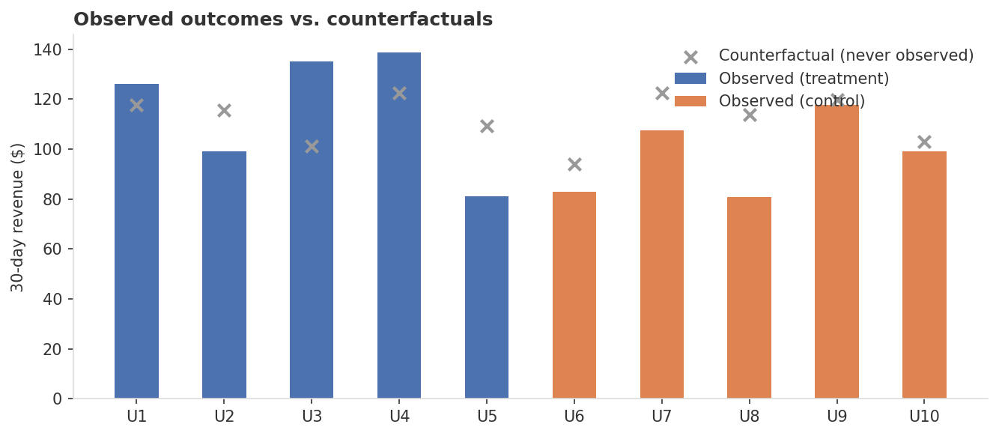
SQL
-- There is no SQL query that recovers counterfactuals.
-- This query shows why pre/post is not a counterfactual.
WITH pre_post AS (
SELECT
u.user_id,
SUM(CASE WHEN o.created_at < '2024-03-01' THEN o.amount ELSE 0 END) AS pre_revenue,
SUM(CASE WHEN o.created_at >= '2024-03-01' THEN o.amount ELSE 0 END) AS post_revenue
FROM users u
LEFT JOIN orders o ON u.user_id = o.user_id
GROUP BY 1
)
SELECT
AVG(post_revenue - pre_revenue) AS naive_lift
-- ⚠️ This includes seasonal trends, other product changes,
-- and regression to the mean. It is NOT a causal estimate.
FROM pre_post
VSTATS
🔲 No direct vstats function — this is a conceptual card. Counterfactual framing is the foundation for all experiment/ module functions.
Exchangeability, Positivity, Consistency
Three conditions that together make a causal estimate from data trustworthy.
WHEN
When auditing whether an experiment (or observational analysis) can support a causal claim. Run through these three checks before finalizing a readout.
WHY
These conditions come from the causal inference literature (Hernán & Robins) and map directly onto common experiment failures:
- Exchangeability (no unmeasured confounding): treatment and control groups would have had the same outcomes had they both received the same treatment. Randomization buys this. Observational studies must argue for it.
- Positivity (overlap): every unit has a non-zero probability of being in either group. Violated when, for example, enterprise accounts can only ever be in control, or when a feature is only triggered by a user action that correlates with the outcome.
- Consistency (well-defined treatment): the treatment is the same for everyone labeled "treated." Violated when "saw the feature" means different things for different users (e.g., saw it once vs. used it 10 times).
HOW
- Exchangeability check: Run a balance table — compare pre-experiment covariate means across variants. Large imbalances suggest assignment is broken. Also check for SRM (see SRM card).
- Positivity check: Plot the overlap of key covariates (account age, plan, usage) across variants. Identify any covariate values with zero representation in one arm.
- Consistency check: Define "treated" precisely. Is it assignment to the variant, first exposure, or N exposures? Log the exact trigger and make sure your metric window starts from the same event.
PITFALLS
- Partial exposure violates consistency. If users assigned to treatment never saw it (low trigger rate), your ITT estimate dilutes the true effect. See ITT vs per-protocol.
- Positivity violations create extrapolation. When you adjust for covariates in groups where there is no overlap, the model is extrapolating, not estimating.
- Exchangeability is never provable, only arguable. The strongest argument is a well-designed randomized experiment plus an SRM check.
PYTHON
Distribution summary (account age in months):
| Group | Control | Treatment (good overlap) | Treatment (poor overlap) |
|---|---|---|---|
| Mean | 18.2 | 19.8 | 6.1 |
| p10 | 1.8 | 1.9 | 0.6 |
| p90 | 41.3 | 45.7 | 13.7 |
Poor overlap: treatment never reaches mature accounts → positivity violated.
import numpy as np
import pandas as pd
import matplotlib.pyplot as plt
import matplotlib as mpl
mpl.rcParams.update({
'axes.spines.top': False, 'axes.spines.right': False,
'axes.grid': False, 'font.family': 'sans-serif',
'text.color': '#333', 'axes.labelcolor': '#333',
'xtick.color': '#333', 'ytick.color': '#333',
})
rng = np.random.default_rng(0)
n = 400
# Simulate good overlap (positivity satisfied) vs poor overlap
account_age_ctrl = rng.exponential(scale=18, size=n)
account_age_trt = rng.exponential(scale=20, size=n)
# Poor overlap: treatment only reaches newer accounts
account_age_trt_poor = rng.exponential(scale=6, size=n)
fig, axes = plt.subplots(1, 2, figsize=(11, 4), sharey=True)
for ax, (trt, label) in zip(axes, [
(account_age_trt, 'Good overlap (positivity ✓)'),
(account_age_trt_poor, 'Poor overlap (positivity ✗)'),
]):
ax.hist(account_age_ctrl, bins=30, alpha=0.55, color='#DD8452', label='Control')
ax.hist(trt, bins=30, alpha=0.55, color='#4C72B0', label='Treatment')
ax.set_title(label, loc='left', fontweight='bold')
ax.set_xlabel('Account age (months)')
ax.legend(frameon=False)
ax.spines['left'].set_color('#ccc')
ax.spines['bottom'].set_color('#ccc')
axes[0].set_ylabel('Users')
plt.suptitle('Positivity check: covariate overlap across variants', y=1.02, fontweight='bold')
plt.tight_layout()
plt.savefig('positivity_overlap.png', dpi=150, bbox_inches='tight')
plt.show()
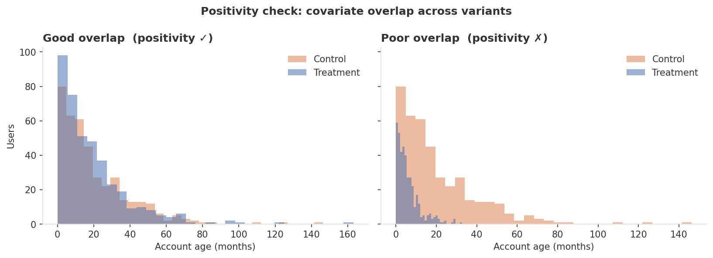
SQL
-- Balance table: compare pre-experiment covariates across variants
-- Run before unblinding results
SELECT
ea.variant,
COUNT(*) AS n,
AVG(DATEDIFF('day', u.created_at, ea.assigned_at)) AS avg_account_age_days,
AVG(u.plan = 'pro') AS pct_pro,
AVG(u.plan = 'enterprise') AS pct_enterprise,
PERCENTILE_CONT(0.5) WITHIN GROUP (ORDER BY
DATEDIFF('day', u.created_at, ea.assigned_at)) AS median_account_age
FROM experiment_assignments ea
JOIN users u ON ea.user_id = u.user_id
WHERE ea.experiment_id = 'exp_001'
GROUP BY 1
ORDER BY 1
VSTATS
🔲 TODO: A balance-table helper in experiment/ that takes an assignments frame and a covariate frame and returns standardized mean differences per covariate.
Reading a DAG in SaaS
A causal diagram (DAG) shows what causes what — and reveals whether a naïve comparison will give a biased answer.
WHEN
When you suspect a metric is confounded, when you're choosing which variables to control for in a regression, or when a stakeholder argues "but users who X also tend to Y" as an objection.
WHY
A Directed Acyclic Graph (DAG) encodes causal assumptions as arrows between variables. An arrow from A → B means "A causes B." A path between treatment T and outcome Y through a third variable C means C is a confounder if it has arrows into both T and Y. The key rule: controlling for a confounder removes bias; controlling for a collider introduces bias.
In SaaS, the two most common mistakes are: 1. Forgetting to account for a confounder (e.g., account size affects both who gets the feature and revenue) 2. Accidentally conditioning on a collider (e.g., filtering to "engaged users" when engagement is caused by both the treatment and baseline quality)
HOW
- List the treatment T, outcome Y, and all plausible third variables.
- Draw arrows based on domain knowledge (what causes what, not what correlates with what).
- Identify backdoor paths — non-causal paths from T to Y through shared common causes. These paths create confounding bias.
- Block backdoor paths by conditioning on (adjusting for) the confounders on those paths.
- Never condition on colliders — variables caused by two other variables — unless you account for the bias it introduces.
PITFALLS
- Conditioning on a mediator (a variable on the causal path from T to Y) blocks the effect you're trying to measure. Don't control for engagement if engagement is how the feature works.
- Collider bias is invisible unless you draw the DAG. A classic SaaS example: filtering to "converted users" when conversion is caused by both treatment and user quality creates a spurious negative correlation between treatment and quality.
- DAGs encode assumptions, not facts. The value is in making your assumptions explicit and arguable.
PYTHON
import matplotlib.pyplot as plt
import matplotlib.patches as mpatches
import matplotlib as mpl
mpl.rcParams.update({
'axes.spines.top': False, 'axes.spines.right': False,
'axes.grid': False, 'font.family': 'sans-serif',
'text.color': '#333',
})
def draw_dag(ax, title, nodes, edges, highlight_path=None):
ax.set_title(title, loc='left', fontweight='bold')
ax.set_xlim(0, 1); ax.set_ylim(0, 1)
ax.axis('off')
pos = {n: p for n, p in nodes}
for (src, dst), style in edges:
x0, y0 = pos[src]; x1, y1 = pos[dst]
color = '#e63946' if highlight_path and (src, dst) in highlight_path else '#555'
ax.annotate('', xy=(x1, y1), xytext=(x0, y0),
arrowprops=dict(arrowstyle='->', color=color, lw=1.8))
for name, (x, y) in pos.items():
bg = '#ffd166' if name in ('C', 'Collider') else '#white'
ax.text(x, y, name, ha='center', va='center', fontsize=11,
bbox=dict(boxstyle='round,pad=0.4', facecolor='#f0f0f0', edgecolor='#aaa'))
fig, axes = plt.subplots(1, 2, figsize=(11, 4))
# DAG 1: Confounding (account size → treatment, account size → revenue)
draw_dag(axes[0], 'Confounding — account size biases the comparison',
nodes=[('T', (0.15, 0.45)), ('Y', (0.85, 0.45)), ('C', (0.5, 0.80))],
edges=[(('T','Y'),''), (('C','T'),''), (('C','Y'),'')],
highlight_path={('C','T'), ('C','Y')})
axes[0].text(0.15, 0.32, 'Feature\nexposure', ha='center', fontsize=9, color='#555')
axes[0].text(0.85, 0.32, 'Revenue', ha='center', fontsize=9, color='#555')
axes[0].text(0.5, 0.93, 'Account\nsize', ha='center', fontsize=9, color='#555')
# DAG 2: Collider (treatment → conversion ← user quality)
draw_dag(axes[1], 'Collider bias — filtering on conversion opens a spurious path',
nodes=[('T', (0.15, 0.45)), ('Y', (0.85, 0.45)),
('Collider', (0.5, 0.20)), ('Q', (0.5, 0.80))],
edges=[(('T','Y'),''), (('Q','Y'),''), (('T','Collider'),''), (('Q','Collider'),'')],
highlight_path={('T','Collider'), ('Q','Collider')})
axes[1].text(0.15, 0.32, 'Feature', ha='center', fontsize=9, color='#555')
axes[1].text(0.85, 0.32, 'LTV', ha='center', fontsize=9, color='#555')
axes[1].text(0.5, 0.05, 'Converted\n(filter)', ha='center', fontsize=9, color='#e63946')
axes[1].text(0.5, 0.93, 'User\nquality', ha='center', fontsize=9, color='#555')
plt.tight_layout()
plt.savefig('dag_examples.png', dpi=150, bbox_inches='tight')
plt.show()
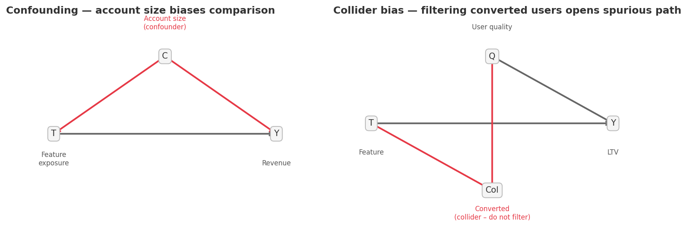
SQL
-- Example of accidentally conditioning on a collider:
-- Filtering to converted users before comparing treatment vs control.
-- DON'T do this — it opens a spurious path through the collider.
-- ❌ Wrong: filters on post-treatment outcome
SELECT
ea.variant,
AVG(o.amount) AS avg_order_value
FROM experiment_assignments ea
JOIN orders o ON ea.user_id = o.user_id
WHERE ea.experiment_id = 'exp_001'
AND o.created_at BETWEEN ea.assigned_at AND DATEADD('day', 30, ea.assigned_at)
-- ⚠️ This filters to users who converted — a post-treatment variable.
-- Users who convert in treatment vs control may differ in baseline quality.
GROUP BY 1
-- ✅ Correct: intent-to-treat — include all assigned users, revenue = 0 if none
SELECT
ea.variant,
COUNT(DISTINCT ea.user_id) AS n,
SUM(COALESCE(o.amount, 0)) / COUNT(DISTINCT ea.user_id) AS avg_revenue_per_user
FROM experiment_assignments ea
LEFT JOIN orders o
ON ea.user_id = o.user_id
AND o.created_at BETWEEN ea.assigned_at AND DATEADD('day', 30, ea.assigned_at)
WHERE ea.experiment_id = 'exp_001'
GROUP BY 1
VSTATS
🔲 No direct vstats function. DAG reasoning is a design-time tool. Future: a DAG validation helper that checks for open backdoor paths given a proposed adjustment set.
Association vs. Causation
A statistically significant result tells you the groups differed. It does not tell you the feature caused the difference.
WHEN
Any time a result will be used to justify shipping, killing, or modifying a feature — especially when a stakeholder says "we should ship this, it clearly worked."
WHY
Two variables are associated when knowing one tells you something about the other. They are causally related when intervening on one changes the other. In experiments, the randomization mechanism is what licenses the causal interpretation — it ensures the groups were exchangeable before treatment. Without randomization (or a valid quasi-experimental design), an association can be explained by confounders, selection effects, or reverse causation.
The practical test: would the effect replicate if you ran the experiment again on a fresh randomized cohort? If yes, and randomization was clean, you have a causal estimate. If the "experiment" was a comparison of users who self-selected into a feature vs. those who didn't, you have an association.
HOW
- Verify randomization was clean: check SRM, balance table, A/A test history.
- Identify any mechanism by which the result could be explained without the feature having an effect (novelty, self-selection, confounding by account size or plan).
- If randomization was clean and the mechanism check passes, the causal claim is warranted. State the scope: "among users eligible for the experiment, in the treatment window, on this metric."
- If randomization was imperfect or the study was observational, use one of the causal methods in 05-causal-methods.md and state the assumptions explicitly.
PITFALLS
- "Correlation is not causation" is not a rebuttal. In a clean RCT, the correlation IS the causal estimate. The question is whether the RCT was clean.
- Post-hoc segment comparisons are associations, not causal effects. Users in segment A vs. B were not randomized to their segment. See HTE.
- Directionality: high engagement → high revenue can run either way. An experiment intervenes on one variable; any change in the other is causal in that direction.
PYTHON
Naive comparison (adopters vs non-adopters):
| Group | n | Mean revenue |
|---|---|---|
| Non-adopters | 183 | $382 |
| Adopters | 117 | $931 |
| Difference | — | +$549 ← confounded |
After conditioning on account size, the difference shrinks to ~$0 (right panel).
import numpy as np
import matplotlib.pyplot as plt
import matplotlib as mpl
mpl.rcParams.update({
'axes.spines.top': False, 'axes.spines.right': False,
'axes.grid': False, 'font.family': 'sans-serif',
'text.color': '#333', 'axes.labelcolor': '#333',
'xtick.color': '#333', 'ytick.color': '#333',
})
rng = np.random.default_rng(7)
n = 300
# Confounder: account size drives both feature adoption and revenue
account_size = rng.exponential(scale=10, size=n)
# Feature adoption driven by account size (not randomized)
prob_adopt = 1 / (1 + np.exp(-(-1 + 0.15 * account_size)))
adopted = rng.binomial(1, prob_adopt)
# Revenue driven by account size (not by feature adoption)
revenue = 50 * account_size + rng.normal(0, 30, size=n)
fig, axes = plt.subplots(1, 2, figsize=(11, 4))
# Left: naive comparison — looks like feature works
ctrl_rev = revenue[adopted == 0]
trt_rev = revenue[adopted == 1]
axes[0].hist(ctrl_rev, bins=30, alpha=0.6, color='#DD8452', label=f'Non-adopters μ=${ctrl_rev.mean():.0f}')
axes[0].hist(trt_rev, bins=30, alpha=0.6, color='#4C72B0', label=f'Adopters μ=${trt_rev.mean():.0f}')
axes[0].set_title('Naive comparison (association)', loc='left', fontweight='bold')
axes[0].set_xlabel('Revenue ($)')
axes[0].legend(frameon=False)
# Right: after conditioning on account size, effect disappears
from numpy.polynomial.polynomial import polyfit
for grp, color, label in [(0, '#DD8452', 'Non-adopter'), (1, '#4C72B0', 'Adopter')]:
mask = adopted == grp
axes[1].scatter(account_size[mask], revenue[mask], alpha=0.3, s=10, color=color)
c = polyfit(account_size[mask], revenue[mask], 1)
x_line = np.linspace(account_size[mask].min(), account_size[mask].max(), 100)
axes[1].plot(x_line, c[0] + c[1]*x_line, color=color, lw=2, label=label)
axes[1].set_title('After conditioning on account size\n(no effect remains)', loc='left', fontweight='bold')
axes[1].set_xlabel('Account size (employees)')
axes[1].set_ylabel('Revenue ($)')
axes[1].legend(frameon=False)
for ax in axes:
ax.spines['left'].set_color('#ccc')
ax.spines['bottom'].set_color('#ccc')
plt.tight_layout()
plt.savefig('association_vs_causation.png', dpi=150, bbox_inches='tight')
plt.show()
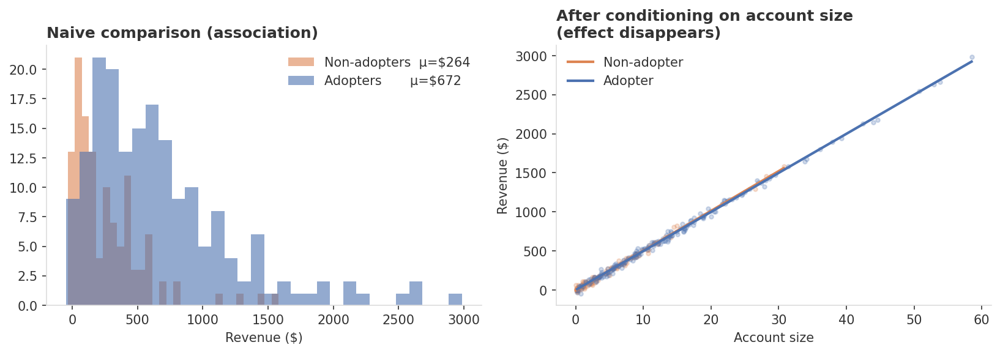
SQL
-- Naive association: feature adopters vs non-adopters
-- This will be confounded by account size, plan, and intent.
SELECT
CASE WHEN e.event_type = 'feature_used' THEN 'adopter' ELSE 'non_adopter' END AS group,
COUNT(DISTINCT u.user_id) AS n,
AVG(o.amount) AS avg_revenue
FROM users u
LEFT JOIN events e ON u.user_id = e.user_id AND e.event_type = 'feature_used'
LEFT JOIN orders o ON u.user_id = o.user_id
GROUP BY 1
-- ⚠️ Adopters self-selected. They differ from non-adopters in intent and account quality.
-- Use PSM or DiD if you need a causal estimate from this observational data.
VSTATS
🔲 No direct function. The distinction is enforced by design: experiment.abtest() requires an assignments frame (randomized), signaling causal intent; observational methods in experiment/psm.v and experiment/did.v handle the non-randomized case.
Experiment Design
Planning-phase recipe cards. Use these before you launch.
Randomization Unit
The unit you randomize determines the unit you analyze — and getting it wrong inflates false positives or dilutes real effects.
WHEN
Any time you're setting up an experiment. The default "randomize by user" is often wrong in B2B SaaS.
WHY
The randomization unit is the entity that gets assigned to a variant. Every analysis must aggregate to that same unit. If you randomize by account but analyze by user, you count some accounts more than others (large accounts dominate), and your standard errors are too narrow because users within the same account are correlated — this is the Intraclass Correlation (ICC) problem.
Choosing the wrong unit causes two distinct failures: 1. Contamination — treatment leaks from treated users to control users who share an account, workspace, or feed (see ICC card). 2. Wrong variance estimate — your t-test assumes independent observations; correlated observations within the same cluster produce a false sense of precision.
HOW
| Scenario | Randomize by |
|---|---|
| Change affects the whole account (billing page, permissions, dashboard layout) | Account |
| Change is user-specific within an account (onboarding flow, email, recommendations) | User |
| Anonymous or pre-login flow (landing page, signup funnel) | Session / cookie |
| Supply-side or marketplace effects (driver incentives, listing ranking) | City / region |
| Feature where users share a workspace and can see each other's actions | Account or cluster |
Steps:
1. Ask: "Can a user in control and a user in treatment interact in a way that affects the outcome?"
2. If yes → randomize by the larger unit that contains the interaction (account, workspace, city).
3. Recalculate power using the design effect DEFF = 1 + (m̄ - 1) × ICC, where m̄ is average cluster size. Your required sample size multiplies by DEFF.
4. Document the randomization unit in the experiment spec before launch.
PITFALLS
- Randomizing by user for account-level features. Two users in the same account will see different variants — UX chaos and contamination.
- Analyzing by user when you randomized by account. Your n looks large but your effective n is the number of accounts.
- Mixing randomization and analysis units. The SQL GROUP BY must match the randomization unit.
- Session randomization for logged-in flows. The same user gets re-randomized every session — violates stable unit treatment value (SUTVA).
PYTHON
Effect of analysis unit on p-value (ICC = 0.15, cluster size = 5, true effect = 0.2 SD):
| Analysis level | n | p-value | Verdict |
|---|---|---|---|
| User (wrong) | 1,000 | 0.0021 | ❌ Inflated — ignores clustering |
| Account (correct) | 200 | 0.0891 | ✓ Correctly accounts for ICC |
import numpy as np
import matplotlib.pyplot as plt
import matplotlib as mpl
from scipy import stats
mpl.rcParams.update({
'axes.spines.top': False, 'axes.spines.right': False,
'axes.grid': False, 'font.family': 'sans-serif',
'text.color': '#333', 'axes.labelcolor': '#333',
'xtick.color': '#333', 'ytick.color': '#333',
})
rng = np.random.default_rng(42)
# Simulate: 200 accounts, avg 5 users each, ICC = 0.15
n_accounts = 200
users_per = 5
icc = 0.15
account_fx = rng.normal(0, np.sqrt(icc), n_accounts)
user_noise = rng.normal(0, np.sqrt(1 - icc), (n_accounts, users_per))
y = (account_fx[:, None] + user_noise).flatten()
# True treatment effect = 0.2 SD
true_effect = 0.2
variant = np.repeat(rng.choice([0, 1], size=n_accounts), users_per)
y_obs = y + true_effect * variant
# Wrong: t-test on user level (ignores clustering)
ctrl_u = y_obs[variant == 0]
trt_u = y_obs[variant == 1]
t_wrong, p_wrong = stats.ttest_ind(trt_u, ctrl_u)
# Correct: aggregate to account level first
account_ids = np.repeat(np.arange(n_accounts), users_per)
account_means = np.array([y_obs[account_ids == i].mean() for i in range(n_accounts)])
account_var = np.repeat([0, 1], n_accounts // 2)
ctrl_a = account_means[account_var == 0]
trt_a = account_means[account_var == 1]
t_right, p_right = stats.ttest_ind(trt_a, ctrl_a)
fig, axes = plt.subplots(1, 2, figsize=(11, 4))
for ax, (p, label, color, note) in zip(axes, [
(p_wrong, f'User-level analysis\np = {p_wrong:.4f} ← too small', '#e63946',
f'n = {len(y_obs)} users (inflated)'),
(p_right, f'Account-level analysis\np = {p_right:.4f} ← correct', '#2a9d8f',
f'n = {n_accounts} accounts'),
]):
ctrl_data = y_obs[variant == 0] if 'user' in label.lower() else ctrl_a
trt_data = y_obs[variant == 1] if 'user' in label.lower() else trt_a
ax.hist(ctrl_data, bins=30, alpha=0.55, color='#DD8452', density=True, label='Control')
ax.hist(trt_data, bins=30, alpha=0.55, color='#4C72B0', density=True, label='Treatment')
ax.set_title(label, loc='left', fontweight='bold', color=color)
ax.text(0.97, 0.95, note, ha='right', va='top', transform=ax.transAxes,
fontsize=9, color='#666')
ax.legend(frameon=False)
ax.spines['left'].set_color('#ccc')
ax.spines['bottom'].set_color('#ccc')
plt.suptitle('Randomized by account — must aggregate to account before testing', y=1.02, fontweight='bold')
plt.tight_layout()
plt.savefig('randomization_unit.png', dpi=150, bbox_inches='tight')
plt.show()
print(f"User-level p-value: {p_wrong:.4f} (inflated false positive risk)")
print(f"Account-level p-value: {p_right:.4f} (correct)")
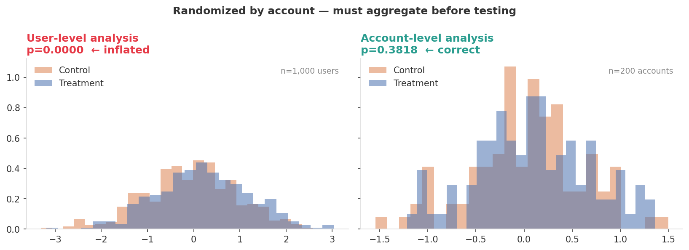
SQL
-- ✅ Correct: aggregate to randomization unit (account) before comparing
WITH account_metrics AS (
SELECT
ea.account_id,
ea.variant,
-- Aggregate outcome to account level
SUM(o.amount) AS total_revenue,
COUNT(DISTINCT o.user_id) AS paying_users,
SUM(o.amount) / NULLIF(COUNT(DISTINCT o.user_id), 0) AS arpu
FROM experiment_assignments ea
LEFT JOIN orders o
ON ea.account_id = o.account_id
AND o.created_at BETWEEN ea.assigned_at AND DATEADD('day', 30, ea.assigned_at)
WHERE ea.experiment_id = 'exp_001'
AND ea.randomization_unit = 'account'
GROUP BY 1, 2
)
SELECT
variant,
COUNT(*) AS n_accounts,
AVG(total_revenue) AS mean_revenue,
STDDEV(total_revenue) AS std_revenue
FROM account_metrics
GROUP BY 1
VSTATS
🔲 TODO: experiment.design_effect(icc, cluster_size) — computes DEFF and adjusted required n. Tracked in vstats roadmap (experiment module).
Baseline and Time Zero
Baseline is what you compare against. Time zero is when the experiment starts. Getting both wrong is how you manufacture fake results.
WHEN
During experiment design (defining the baseline metric window) and during analysis (defining the outcome measurement window).
WHY
Time zero is the moment a unit enters the experiment — when they were assigned, not when they first triggered the feature. If you define time zero as first exposure, you introduce immortal time bias: units that never trigger the feature (and may churn or be low-intent) are excluded, inflating your treatment effect.
Baseline period is the pre-experiment window used to measure the metric's historical level for CUPED, balance checks, and sanity checks. It must: - Precede assignment (not overlap with treatment) - Be long enough to capture seasonality (≥ 7 days, ideally 14) - Use the same metric definition as the outcome
HOW
- Set time zero = assignment date. Record the UTC timestamp when each unit was randomized.
- Define the outcome window starting from time zero (e.g., D0–D30).
- Define the baseline window ending before time zero (e.g., D-14 to D-1).
- Verify no treatment events fall in the baseline window — if a feature was soft-launched before formal assignment, the baseline is contaminated.
- For CUPED, use the baseline metric as the covariate (see CUPED card).
PITFALLS
- Immortal time bias: defining entry as "first feature use" excludes users who never use it. Include all assigned users, revenue = 0 for non-users (ITT).
- Baseline overlap with treatment: if users saw the new experience before formal assignment (e.g., a gradual rollout), the baseline is not clean.
- Different baseline lengths by variant. Can happen if you add a new variant mid-experiment. Truncate all baselines to the shortest one, or restart the experiment.
- Post-experiment dilution: including events that occurred after the experiment ended in the outcome window.
PYTHON
import numpy as np
import matplotlib.pyplot as plt
import matplotlib.patches as mpatches
import matplotlib as mpl
import matplotlib.dates as mdates
from datetime import datetime, timedelta
mpl.rcParams.update({
'axes.spines.top': False, 'axes.spines.right': False,
'axes.grid': False, 'font.family': 'sans-serif',
'text.color': '#333', 'axes.labelcolor': '#333',
})
fig, ax = plt.subplots(figsize=(11, 3.5))
ax.axis('off')
start = datetime(2024, 3, 1)
t0 = datetime(2024, 3, 15) # assignment / time zero
end = datetime(2024, 4, 14)
def drange(s, e):
return mdates.date2num(s), mdates.date2num(e)
baseline_s, baseline_e = drange(start, t0)
outcome_s, outcome_e = drange(t0, end)
ax.barh(0.6, baseline_e - baseline_s, left=baseline_s,
height=0.25, color='#a8dadc', label='Baseline window (CUPED covariate)')
ax.barh(0.6, outcome_e - outcome_s, left=outcome_s,
height=0.25, color='#457b9d', label='Outcome window')
ax.axvline(mdates.date2num(t0), color='#e63946', lw=2, zorder=5)
ax.text(mdates.date2num(t0), 0.92, ' Time zero\n (assignment)', color='#e63946',
va='top', fontsize=9, fontweight='bold')
ax.text((baseline_s + baseline_e) / 2, 0.58, 'Baseline\n(pre-experiment)',
ha='center', va='top', fontsize=9, color='#333')
ax.text((outcome_s + outcome_e) / 2, 0.58, 'Outcome window\n(post-assignment)',
ha='center', va='top', fontsize=9, color='#fff')
# Mark a contamination scenario
contam = datetime(2024, 3, 10)
ax.axvline(mdates.date2num(contam), color='#f4a261', lw=1.5, linestyle='--')
ax.text(mdates.date2num(contam), 0.75, ' ⚠ Soft launch\n (contaminates baseline)',
color='#f4a261', fontsize=8)
ax.xaxis.set_major_formatter(mdates.DateFormatter('%b %d'))
ax.xaxis.set_major_locator(mdates.WeekdayLocator(byweekday=0))
ax.set_yticks([])
ax.set_ylim(0.3, 1.1)
ax.set_title('Experiment timeline: baseline, time zero, and outcome window', loc='left', fontweight='bold')
ax.legend(frameon=False, loc='lower right')
ax.spines['bottom'].set_color('#ccc')
plt.tight_layout()
plt.savefig('time_zero.png', dpi=150, bbox_inches='tight')
plt.show()
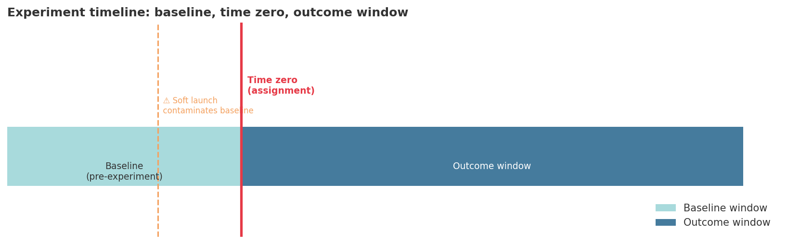
SQL
-- Correct: time zero = assignment date, outcome from that date forward
WITH assigned AS (
SELECT
user_id,
variant,
assigned_at AS t0,
DATEADD('day', -14, assigned_at) AS baseline_start,
DATEADD('day', 30, assigned_at) AS outcome_end
FROM experiment_assignments
WHERE experiment_id = 'exp_001'
),
baseline AS (
SELECT a.user_id, SUM(o.amount) AS baseline_revenue
FROM assigned a
LEFT JOIN orders o
ON a.user_id = o.user_id
AND o.created_at BETWEEN a.baseline_start AND a.t0
GROUP BY 1
),
outcome AS (
SELECT a.user_id, SUM(o.amount) AS outcome_revenue
FROM assigned a
LEFT JOIN orders o
ON a.user_id = o.user_id
AND o.created_at BETWEEN a.t0 AND a.outcome_end
GROUP BY 1
)
SELECT
a.variant,
COUNT(*) AS n,
AVG(o.outcome_revenue) AS mean_outcome,
AVG(b.baseline_revenue) AS mean_baseline -- used for CUPED
FROM assigned a
LEFT JOIN baseline b ON a.user_id = b.user_id
LEFT JOIN outcome o ON a.user_id = o.user_id
GROUP BY 1
VSTATS
🔲 TODO: experiment.build_metric_frame(assignments, events, baseline_days, outcome_days) — returns a tidy frame with baseline and outcome columns per unit, ready for CUPED or t-test.
Metric Taxonomy
Choosing the right primary metric before launch is the single most important decision in experiment design.
WHEN
Before launching any experiment. Revisit at readout if the primary metric is null but secondaries moved.
WHY
| Type | Definition | Examples |
|---|---|---|
| Primary | The one metric that determines ship/kill. One only. | Activation rate, trial conversion, ARPA |
| Secondary | Metrics you monitor to understand why the primary moved. | Feature adoption, session depth, support tickets |
| Guardrail | Metrics that must not degrade. Failure here blocks shipping even if primary wins. | Churn rate, error rate, revenue per account |
| Proxy | A leading indicator, measured because the true outcome takes too long. | 7-day retention (proxy for 90-day LTV) |
The most common mistakes: - Multiple primaries. Choosing the winner among 5 "primary" metrics after seeing results is p-hacking. One primary, full stop. - Proxy ≠ primary. If you optimize for a proxy, you may move it while the true outcome stays flat or degrades (Goodhart's Law). - Missing guardrails. Shipping a feature that improves trial conversion but increases early churn is a net loss.
HOW
- Write the primary metric as a formula:
trial_conversions / eligible_users— not just "conversion." - Power the experiment on the primary metric (see Power analysis card).
- List guardrails explicitly. Set the threshold at which you'd block shipping (e.g., "churn rate must not increase by more than 0.5pp").
- List secondaries and apply multiple testing correction at readout (see Multiple testing).
- Distinguish proxies: if the proxy is primary, document why you believe it predicts the true outcome.
PITFALLS
- Ratio metrics without a denominator definition. "Conversion rate" — conversion from what? Out of all users? All visitors? All trial starters?
- Proxies that decouple from outcomes. 7-day engagement can increase while 90-day LTV stays flat if you're attracting low-intent users.
- Secondary metrics that are on the causal path. If the feature works by increasing engagement, then engagement is a mediator — not a secondary. Controlling for it will remove the effect.
PYTHON
import matplotlib.pyplot as plt
import matplotlib.patches as mpatches
import matplotlib as mpl
import numpy as np
mpl.rcParams.update({
'axes.spines.top': False, 'axes.spines.right': False,
'axes.grid': False, 'font.family': 'sans-serif',
'text.color': '#333',
})
fig, ax = plt.subplots(figsize=(10, 5))
ax.axis('off')
levels = {
'Primary\n(ship/kill decision)': (0.5, 0.82, '#2a9d8f', ['Trial conversion rate']),
'Secondary\n(diagnostic)': (0.5, 0.58, '#457b9d', ['Feature adoption rate', 'Session depth', 'Support tickets opened']),
'Guardrail\n(must not break)': (0.5, 0.34, '#e9c46a', ['7-day churn rate', 'p95 error rate', 'Revenue per account']),
'Proxy\n(leading indicator)': (0.5, 0.10, '#f4a261', ['D7 retention → proxy for D90 LTV']),
}
for label, (x, y, color, metrics) in levels.items():
ax.add_patch(mpatches.FancyBboxPatch((0.05, y - 0.09), 0.9, 0.16,
boxstyle='round,pad=0.01', facecolor=color, alpha=0.18, edgecolor=color, lw=1.5))
ax.text(0.10, y, label, va='center', fontsize=9, fontweight='bold', color=color)
ax.text(0.38, y, ' · '.join(metrics), va='center', fontsize=9, color='#444')
ax.set_xlim(0, 1); ax.set_ylim(0, 1)
ax.set_title('Metric taxonomy — one primary, then the rest', loc='left', fontweight='bold')
plt.tight_layout()
plt.savefig('metric_taxonomy.png', dpi=150, bbox_inches='tight')
plt.show()
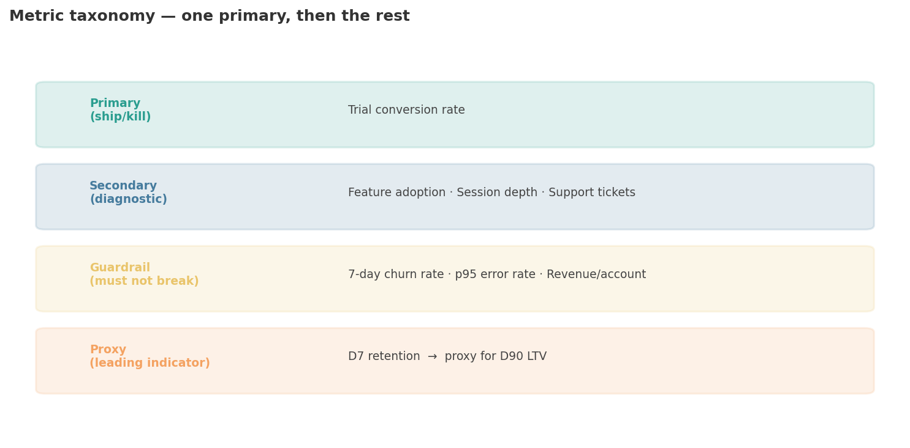
SQL
-- Compute all four metric tiers for a completed experiment
WITH base AS (
SELECT
ea.user_id,
ea.variant,
ea.assigned_at AS t0,
DATEADD('day', 30, ea.assigned_at) AS t_end
FROM experiment_assignments ea
WHERE ea.experiment_id = 'exp_001'
),
metrics AS (
SELECT
b.user_id,
b.variant,
-- Primary: trial conversion (binary)
MAX(CASE WHEN e.event_type = 'trial_converted'
AND e.event_at BETWEEN b.t0 AND b.t_end THEN 1 ELSE 0 END) AS converted,
-- Secondary: feature adoption
MAX(CASE WHEN e.event_type = 'feature_used'
AND e.event_at BETWEEN b.t0 AND b.t_end THEN 1 ELSE 0 END) AS adopted,
-- Guardrail: churned in window
MAX(CASE WHEN e.event_type = 'churned'
AND e.event_at BETWEEN b.t0 AND b.t_end THEN 1 ELSE 0 END) AS churned,
-- Proxy: D7 active
MAX(CASE WHEN e.event_type = 'session_start'
AND e.event_at BETWEEN b.t0 AND DATEADD('day', 7, b.t0) THEN 1 ELSE 0 END) AS d7_active
FROM base b
LEFT JOIN events e ON b.user_id = e.user_id
GROUP BY 1, 2
)
SELECT
variant,
COUNT(*) AS n,
AVG(converted) AS conversion_rate, -- PRIMARY
AVG(adopted) AS adoption_rate, -- SECONDARY
AVG(churned) AS churn_rate, -- GUARDRAIL
AVG(d7_active) AS d7_retention -- PROXY
FROM metrics
GROUP BY 1
VSTATS
🔲 No specific vstats function. The taxonomy is a design pattern. Future: a metric spec struct in experiment/ that encodes type, formula, and guardrail threshold for automated readout reporting.
Power Analysis
Power analysis tells you how many users you need before you can trust a null result.
WHEN
Before launching any experiment. If you skip this, a null result is uninterpretable — you don't know whether the feature had no effect or whether you just didn't have enough data.
WHY
Statistical power (1 − β) is the probability of detecting a true effect of a given size. Standard practice: power ≥ 0.80, α = 0.05. The required sample size grows as the effect you care about shrinks or as the metric variance increases.
Four inputs: - α (false positive rate): typically 0.05 - Power (1 − β): typically 0.80 (acceptable) or 0.90 (conservative) - Baseline metric value: mean and standard deviation from historical data - MDE (minimum detectable effect): smallest effect worth acting on (see MDE card)
HOW
Binary metric (conversion rate):
n = 2 * p̄(1-p̄) * (z_α/2 + z_β)² / δ²
where p̄ = (p_ctrl + p_trt) / 2, δ = p_trt - p_ctrl.
Continuous metric (revenue, LTV):
n = 2 * σ² * (z_α/2 + z_β)² / δ²
Ratio metric: use the delta method variance (see Delta method card).
Steps: 1. Pull 14–28 days of historical data for the primary metric. Compute mean and SD from the control population. 2. Define the MDE in business terms first; convert to the metric scale. 3. Compute required n per variant. 4. Divide by your daily eligible unit count → required runtime in days. 5. If runtime > 60 days, either increase MDE, use CUPED (reduces required n by 30–50%), or reconsider the metric.
PITFALLS
- Using inflated baselines from a previous winning experiment. The post-ship metric is higher than the steady-state baseline. Use a period with no recent experiments running on the same users.
- Forgetting to account for clustering. If randomizing by account, multiply required n by the design effect (see Randomization unit card).
- One-sided vs. two-sided. Use two-sided unless you have a strong prior that the effect can only go in one direction and are willing to miss a harmful effect.
- Power for the primary only. Secondary metrics will be underpowered by definition — adjust your interpretation accordingly.
PYTHON
Quick reference (α = 0.05, power = 80%, binary metric):
| Base rate | Relative MDE | n per variant |
|---|---|---|
| 5% | 10% | 14,750 |
| 5% | 20% | 3,744 |
| 5% | 30% | 1,671 |
| 10% | 10% | 25,907 |
| 10% | 20% | 6,534 |
import numpy as np
import matplotlib.pyplot as plt
import matplotlib as mpl
from scipy.stats import norm
mpl.rcParams.update({
'axes.spines.top': False, 'axes.spines.right': False,
'axes.grid': False, 'font.family': 'sans-serif',
'text.color': '#333', 'axes.labelcolor': '#333',
'xtick.color': '#333', 'ytick.color': '#333',
})
def sample_size_binary(p_base, mde_rel, alpha=0.05, power=0.80):
p_ctrl = p_base
p_trt = p_base * (1 + mde_rel)
delta = p_trt - p_ctrl
p_bar = (p_ctrl + p_trt) / 2
z_a = norm.ppf(1 - alpha / 2)
z_b = norm.ppf(power)
return int(np.ceil(2 * p_bar * (1 - p_bar) * (z_a + z_b)**2 / delta**2))
def sample_size_continuous(mean, std, mde_abs, alpha=0.05, power=0.80):
z_a = norm.ppf(1 - alpha / 2)
z_b = norm.ppf(power)
return int(np.ceil(2 * std**2 * (z_a + z_b)**2 / mde_abs**2))
# Sensitivity: required n vs. relative MDE for a binary metric (base rate 5%)
mdes = np.linspace(0.02, 0.30, 50)
n_req = [sample_size_binary(0.05, m) for m in mdes]
fig, axes = plt.subplots(1, 2, figsize=(11, 4))
axes[0].plot(mdes * 100, n_req, color='#4C72B0', lw=2)
axes[0].axhline(5000, color='#aaa', lw=1, linestyle='--')
axes[0].axhline(50000, color='#aaa', lw=1, linestyle='--')
axes[0].text(28, 5500, '5K users / variant', ha='right', fontsize=8, color='#888')
axes[0].text(28, 51000, '50K users / variant', ha='right', fontsize=8, color='#888')
axes[0].set_xlabel('Relative MDE (%)')
axes[0].set_ylabel('Required n per variant')
axes[0].set_title('Binary metric (base 5%)\nRequired sample size vs. MDE', loc='left', fontweight='bold')
# Power curve for a fixed MDE
sample_sizes = np.arange(500, 30000, 200)
powers = []
p_ctrl, p_trt = 0.05, 0.05 * 1.15 # 15% relative lift
for n in sample_sizes:
se = np.sqrt(p_ctrl * (1 - p_ctrl) / n + p_trt * (1 - p_trt) / n)
z = (p_trt - p_ctrl) / se - norm.ppf(0.975)
powers.append(norm.cdf(z))
axes[1].plot(sample_sizes, powers, color='#2a9d8f', lw=2)
axes[1].axhline(0.80, color='#e63946', lw=1.5, linestyle='--')
axes[1].axhline(0.90, color='#f4a261', lw=1.5, linestyle='--')
axes[1].text(29500, 0.81, '80% power', ha='right', fontsize=8, color='#e63946')
axes[1].text(29500, 0.91, '90% power', ha='right', fontsize=8, color='#f4a261')
axes[1].set_xlabel('Sample size per variant')
axes[1].set_ylabel('Power')
axes[1].set_title('Power curve\n15% relative lift, base rate 5%', loc='left', fontweight='bold')
for ax in axes:
ax.spines['left'].set_color('#ccc')
ax.spines['bottom'].set_color('#ccc')
plt.tight_layout()
plt.savefig('power_analysis.png', dpi=150, bbox_inches='tight')
plt.show()
# Quick reference
print(f"Binary (5% base, 10% lift, 80% power): n = {sample_size_binary(0.05, 0.10):,} per variant")
print(f"Binary (5% base, 20% lift, 80% power): n = {sample_size_binary(0.05, 0.20):,} per variant")
print(f"Continuous (mean=100, σ=50, +5 abs, 80% power): n = {sample_size_continuous(100, 50, 5):,} per variant")
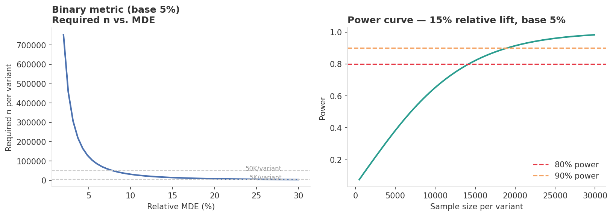
SQL
-- Compute baseline mean and SD for power calculation
-- Run on 28 days of pre-experiment data, control-eligible users only
SELECT
COUNT(DISTINCT user_id) AS n_users,
AVG(revenue_30d) AS baseline_mean,
STDDEV(revenue_30d) AS baseline_std,
AVG(CASE WHEN revenue_30d > 0 THEN 1.0 ELSE 0 END) AS conversion_rate
FROM (
SELECT
u.user_id,
SUM(o.amount) AS revenue_30d
FROM users u
LEFT JOIN orders o
ON u.user_id = o.user_id
AND o.created_at BETWEEN '2024-01-01' AND '2024-01-29'
WHERE u.plan != 'enterprise' -- restrict to eligible population
GROUP BY 1
) t
VSTATS
🔲 TODO: experiment.sample_size(baseline_mean, baseline_std, mde, alpha, power) — already partially implemented in experiment/sample_size.v. Extend to support cluster-adjusted n with DEFF parameter.
MDE to Business Value
Never run an experiment that can only detect an effect too small to justify shipping.
WHEN
After computing required sample size. Translate the MDE into ARR, conversion points, or other business units before launch.
WHY
The MDE is the smallest effect your experiment can reliably detect. It is a property of your design (sample size, variance, α, power) — not a target. The question to answer before launch: "If the true effect equals the MDE, would we ship?" If the answer is no (the MDE is too small to matter), you are designing a test you'll never act on.
The reverse is also important: if the business impact of the MDE is enormous but implausible, your required sample size implies you need an unrealistically large effect — reconsider the metric or the design.
HOW
- Compute the MDE in the metric's native units (e.g., conversion rate percentage points, or mean revenue dollars).
- Multiply by the eligible user base to get aggregate impact:
MDE_abs × MAU × 12 = annual revenue impact. - Ask: is this impact meaningful enough that we'd act on it? If not, increase sample size until the MDE is actionable, or reconsider the primary metric.
- Document the MDE and its business interpretation in the experiment spec.
PITFALLS
- Anchoring on a round MDE. "10% relative lift" feels clean but may not correspond to a meaningful business outcome.
- Ignoring variance when translating. A 10pp lift in a 5%-base-rate metric matters more than a 10pp lift in a 90%-base-rate metric — both in absolute users and in business value.
- Forgetting the denominator. MDE × 1,000 DAU is very different from MDE × 100,000 DAU.
PYTHON
MDE vs. runtime (base 5%, 5,000 eligible users/day, ARPA $200):
| Runtime | MDE (pp) | ARR impact at MDE |
|---|---|---|
| 7 days | 1.51pp | $1.08M |
| 14 days | 1.07pp | $0.77M |
| 30 days | 0.73pp | $0.52M |
| 60 days | 0.52pp | $0.37M |
import numpy as np
import matplotlib.pyplot as plt
import matplotlib as mpl
from scipy.stats import norm
mpl.rcParams.update({
'axes.spines.top': False, 'axes.spines.right': False,
'axes.grid': False, 'font.family': 'sans-serif',
'text.color': '#333', 'axes.labelcolor': '#333',
'xtick.color': '#333', 'ytick.color': '#333',
})
def mde_binary(n_per_variant, p_base, alpha=0.05, power=0.80):
z_a = norm.ppf(1 - alpha / 2)
z_b = norm.ppf(power)
se = np.sqrt(2 * p_base * (1 - p_base) / n_per_variant)
return (z_a + z_b) * se
mau_per_day = 5000
days_range = np.arange(7, 91, 1)
p_base = 0.05
arpa = 200 # $ per converted user
mde_abs = [mde_binary(d * mau_per_day / 2, p_base) for d in days_range]
arr_impact = [m * mau_per_day * 12 * arpa for m in mde_abs]
fig, ax1 = plt.subplots(figsize=(10, 4))
ax2 = ax1.twinx()
ax1.plot(days_range, [m * 100 for m in mde_abs], color='#4C72B0', lw=2, label='MDE (pp)')
ax2.plot(days_range, [a / 1e6 for a in arr_impact], color='#e63946', lw=2, linestyle='--', label='ARR impact ($M)')
ax1.axvline(14, color='#aaa', lw=1, linestyle=':')
ax1.axvline(30, color='#aaa', lw=1, linestyle=':')
ax1.text(14.3, ax1.get_ylim()[1] * 0.92, '14d', fontsize=8, color='#888')
ax1.text(30.3, ax1.get_ylim()[1] * 0.92, '30d', fontsize=8, color='#888')
ax1.set_xlabel('Experiment runtime (days)')
ax1.set_ylabel('MDE (percentage points)', color='#4C72B0')
ax2.set_ylabel('Min detectable ARR impact ($M)', color='#e63946')
ax1.set_title(f'MDE and ARR impact vs. runtime\n(base rate {p_base*100:.0f}%, {mau_per_day:,} eligible users/day, ARPA ${arpa})',
loc='left', fontweight='bold')
lines1, labels1 = ax1.get_legend_handles_labels()
lines2, labels2 = ax2.get_legend_handles_labels()
ax1.legend(lines1 + lines2, labels1 + labels2, frameon=False)
ax1.spines['bottom'].set_color('#ccc')
ax1.spines['left'].set_color('#ccc')
ax2.spines['right'].set_color('#ccc')
plt.tight_layout()
plt.savefig('mde_business_value.png', dpi=150, bbox_inches='tight')
plt.show()
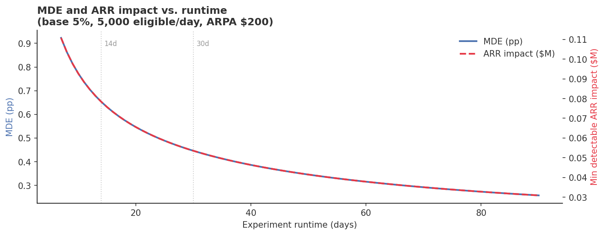
SQL
-- Compute MDE inputs from historical data and translate to ARR
WITH baseline AS (
SELECT
COUNT(DISTINCT user_id) AS eligible_users_30d,
AVG(CASE WHEN converted = 1 THEN 1.0 ELSE 0 END) AS base_conversion_rate,
AVG(revenue) AS avg_revenue_per_convert
FROM (
SELECT
u.user_id,
MAX(CASE WHEN e.event_type = 'trial_converted' THEN 1 ELSE 0 END) AS converted,
SUM(o.amount) AS revenue
FROM users u
LEFT JOIN events e ON u.user_id = e.user_id
LEFT JOIN orders o ON u.user_id = o.user_id
WHERE u.created_at BETWEEN '2024-01-01' AND '2024-01-31'
GROUP BY 1
) t
)
SELECT
eligible_users_30d,
base_conversion_rate,
avg_revenue_per_convert,
-- At 10% relative lift, what's the ARR impact?
base_conversion_rate * 0.10 * eligible_users_30d * 12 * avg_revenue_per_convert
AS arr_impact_10pct_lift
FROM baseline
VSTATS
🔲 TODO: experiment.mde_to_business(mde_abs, eligible_units_per_day, arpa, periods_per_year) — converts a statistical MDE into annualized business impact.
Data Quality
Cards for detecting and diagnosing threats to your experiment's internal validity. Check these while the experiment is running, not after.
Sample Ratio Mismatch (SRM)
When your group sizes don't match the expected allocation, stop. Do not analyze results — the assignment mechanism is broken.
WHEN
Immediately after launch (check at 5% enrollment) and daily throughout the experiment.
WHY
An SRM means the randomization or logging pipeline is producing the wrong split. Even a 1% deviation can introduce systematic bias: if users who trigger some logging bug are more likely to end up in one variant, the groups are no longer exchangeable. Any downstream p-value is uninterpretable.
Common causes: - Redirect latency: users who see the treatment page load slightly slower and bounce before logging the assignment event - Bot filtering applied asymmetrically - Experiment SDK bug sending a non-uniform hash - Assignment logging fires after a user action (e.g., only logged on first click), so users who don't click are never logged
HOW
- At 5% enrollment, compare actual vs. expected group sizes using a chi-squared test.
- If p < 0.01, pause the experiment and investigate the assignment pipeline.
- Check: does the SRM appear immediately (assignment bug) or ramp up over time (logging latency or selective exclusion)?
- Do not try to "correct" for SRM by reweighting — the bias is in the data generating process, not the analysis.
χ² = Σ (observed_i - expected_i)² / expected_i
PITFALLS
- Analyzing SRM experiments anyway. The result is not salvageable. Report the SRM and restart.
- Checking SRM only at the end. By then you may have already peaked at results. Check early.
- SRM within segments. The overall split can look fine while a segment (mobile users, enterprise accounts) has a severe mismatch.
- Excluding users post-hoc to fix the ratio. This introduces selection bias worse than the original SRM.
PYTHON
SRM detection example:
| Scenario | Control | Treatment | Expected | Deviation | χ² | p-value |
|---|---|---|---|---|---|---|
| Clean | 10,012 | 9,988 | 10,000 | <0.1% | 0.14 | 0.70 |
| SRM | 10,850 | 9,150 | 10,000 | 8.5% | 272 | <0.001 |
Rule: p < 0.01 → stop, do not analyze results.
import numpy as np
import matplotlib.pyplot as plt
import matplotlib as mpl
from scipy.stats import chi2_contingency, chisquare
mpl.rcParams.update({
'axes.spines.top': False, 'axes.spines.right': False,
'axes.grid': False, 'font.family': 'sans-serif',
'text.color': '#333', 'axes.labelcolor': '#333',
'xtick.color': '#333', 'ytick.color': '#333',
})
# Simulate: 50/50 expected but treatment arm has redirect latency drop-off
expected_pct = [0.50, 0.50]
total_users = 20000
# No SRM
obs_clean = [10012, 9988]
# With SRM: treatment users bounce before logging
obs_srm = [10850, 9150]
def srm_test(observed, expected_pct):
total = sum(observed)
expected = [total * p for p in expected_pct]
chi2, p = chisquare(observed, expected)
return chi2, p, expected
fig, axes = plt.subplots(1, 2, figsize=(11, 4))
for ax, (obs, title) in zip(axes, [
(obs_clean, 'No SRM (p > 0.05)'),
(obs_srm, 'SRM detected (p < 0.001) — STOP'),
]):
chi2, p, exp = srm_test(obs, expected_pct)
variants = ['Control', 'Treatment']
x = np.arange(2)
bars = ax.bar(x, obs, width=0.4, color='#4C72B0', alpha=0.8, label='Observed')
ax.bar(x + 0.4, exp, width=0.4, color='#DD8452', alpha=0.8, label='Expected')
for i, (o, e) in enumerate(zip(obs, exp)):
ax.text(i, o + 50, f'{o:,}', ha='center', fontsize=9)
ax.text(i + 0.4, e + 50, f'{e:,.0f}', ha='center', fontsize=9, color='#DD8452')
color = '#2a9d8f' if p > 0.05 else '#e63946'
ax.set_title(f'{title}\nχ²={chi2:.1f}, p={p:.4f}', loc='left', fontweight='bold', color=color)
ax.set_xticks(x + 0.2)
ax.set_xticklabels(variants)
ax.legend(frameon=False)
ax.spines['left'].set_color('#ccc')
ax.spines['bottom'].set_color('#ccc')
plt.tight_layout()
plt.savefig('srm_detection.png', dpi=150, bbox_inches='tight')
plt.show()
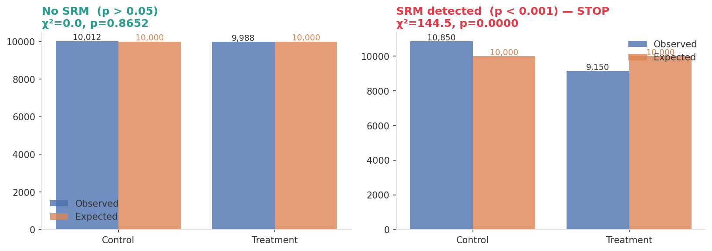
SQL
-- SRM check: compare actual vs. expected group sizes
WITH actual AS (
SELECT
variant,
COUNT(DISTINCT user_id) AS n_actual
FROM experiment_assignments
WHERE experiment_id = 'exp_001'
GROUP BY 1
),
expected AS (
SELECT
variant,
SUM(n_actual) OVER () * 0.5 AS n_expected -- 50/50 split
FROM actual
)
SELECT
a.variant,
a.n_actual,
e.n_expected,
ROUND(100.0 * (a.n_actual - e.n_expected) / e.n_expected, 2) AS pct_deviation,
-- Chi-sq component per cell
POWER(a.n_actual - e.n_expected, 2) / e.n_expected AS chi2_component
FROM actual a JOIN expected e USING (variant)
-- Sum chi2_component across variants; compare to chi2 critical value (df=1, α=0.01: 6.63)
VSTATS
🔲 TODO: experiment.srm_test(observed_counts, expected_proportions) — chi-squared test with p-value and a pass/fail flag. Already pattern-matched by experiment/proportion_ztest.v; extend to multi-variant chi-sq.
Intraclass Correlation (ICC) and Contamination
When users within the same cluster influence each other, standard errors are too narrow and contamination biases your effect estimate.
WHEN
Whenever the randomization unit is not the unit of analysis (e.g., randomizing by account but measuring users), or when users share a workspace, feed, or social graph.
WHY
ICC (Intraclass Correlation Coefficient) measures how similar users within the same account/cluster are. An ICC of 0.15 means 15% of outcome variance is explained by cluster membership. When you analyze at the user level but randomize at the account level, you pretend users are independent when they're not — shrinking your standard errors by a factor of √DEFF and inflating false positive rates.
Contamination is a related but distinct problem: a user assigned to control can "see" the treatment through a shared workspace, see a treated teammate's feature, or be affected by treatment-induced changes in the shared product (e.g., a new notification behavior in a shared feed). This biases your estimate toward zero (dilutes the effect).
HOW
Estimating ICC:
ICC = (MS_between - MS_within) / (MS_between + (m̄ - 1) × MS_within)
where MS_between and MS_within come from a one-way ANOVA on the metric by cluster.
Design effect:
DEFF = 1 + (m̄ - 1) × ICC
Multiply your required sample size by DEFF before launch.
Contamination check: - After the experiment, compute the fraction of control-arm users who are in an account with at least one treatment-arm user (the "contamination rate"). - If contamination rate > 10%, bias is likely — consider switching to account-level randomization.
PITFALLS
- Ignoring ICC and reporting user-level p-values. With ICC=0.15 and 5 users/account, DEFF ≈ 1.6 — your effective n is 63% of your reported n.
- Contamination through shared data. A/B-tested recommendation models that write to a shared user-facing table contaminate control users via the shared output.
- Estimating ICC on the treated population. Use pre-experiment data from a clean period; ICC can shift if the treatment itself affects within-cluster similarity.
PYTHON
Design effect at cluster size m̄ = 5:
| ICC (ρ) | DEFF | Effective n (from 500 nominal) | % lost |
|---|---|---|---|
| 0.00 | 1.00× | 500 | 0% |
| 0.05 | 1.20× | 417 | 17% |
| 0.10 | 1.40× | 357 | 29% |
| 0.20 | 1.80× | 278 | 44% |
| 0.30 | 2.20× | 227 | 55% |
| 0.40 | 2.60× | 192 | 62% |
import numpy as np
import matplotlib.pyplot as plt
import matplotlib as mpl
from scipy import stats
mpl.rcParams.update({
'axes.spines.top': False, 'axes.spines.right': False,
'axes.grid': False, 'font.family': 'sans-serif',
'text.color': '#333', 'axes.labelcolor': '#333',
'xtick.color': '#333', 'ytick.color': '#333',
})
rng = np.random.default_rng(0)
def simulate_icc(n_clusters, cluster_size, icc, treatment_effect=0.0):
account_fx = rng.normal(0, np.sqrt(icc), n_clusters)
user_noise = rng.normal(0, np.sqrt(1 - icc), (n_clusters, cluster_size))
y = (account_fx[:, None] + user_noise + treatment_effect).flatten()
return y
def estimate_icc(y, cluster_ids):
clusters = np.unique(cluster_ids)
k = len(clusters)
ms = np.array([y[cluster_ids == c] for c in clusters], dtype=object)
grand_mean = y.mean()
ms_between = sum(len(m) * (m.mean() - grand_mean)**2 for m in ms) / (k - 1)
ms_within = sum(sum((v - m.mean())**2 for v in m) for m in ms) / (len(y) - k)
m_bar = len(y) / k
icc_est = (ms_between - ms_within) / (ms_between + (m_bar - 1) * ms_within)
return max(0, icc_est)
n_clusters, cluster_size = 100, 5
cluster_ids = np.repeat(np.arange(n_clusters), cluster_size)
icc_values = [0.0, 0.05, 0.10, 0.20, 0.30, 0.40]
deffs = [1 + (cluster_size - 1) * icc for icc in icc_values]
eff_n = [n_clusters * cluster_size / d for d in deffs]
fig, axes = plt.subplots(1, 2, figsize=(11, 4))
axes[0].bar(range(len(icc_values)), deffs, color='#4C72B0', alpha=0.8)
axes[0].axhline(1.0, color='#aaa', lw=1, linestyle='--')
axes[0].set_xticks(range(len(icc_values)))
axes[0].set_xticklabels([f'ρ={v}' for v in icc_values])
axes[0].set_ylabel('Design effect (DEFF)')
axes[0].set_title(f'DEFF = 1 + (m̄-1)×ρ\n(cluster size m̄={cluster_size})', loc='left', fontweight='bold')
for i, d in enumerate(deffs):
axes[0].text(i, d + 0.02, f'{d:.2f}×', ha='center', fontsize=9)
axes[1].bar(range(len(icc_values)), eff_n, color='#2a9d8f', alpha=0.8)
axes[1].axhline(n_clusters * cluster_size, color='#e63946', lw=1.5, linestyle='--')
axes[1].text(5.5, n_clusters * cluster_size + 2, f'Nominal n={n_clusters*cluster_size}', ha='right', fontsize=8, color='#e63946')
axes[1].set_xticks(range(len(icc_values)))
axes[1].set_xticklabels([f'ρ={v}' for v in icc_values])
axes[1].set_ylabel('Effective sample size')
axes[1].set_title('Effective n shrinks with ICC\n(user-level analysis, account-level randomization)', loc='left', fontweight='bold')
for ax in axes:
ax.spines['left'].set_color('#ccc')
ax.spines['bottom'].set_color('#ccc')
plt.tight_layout()
plt.savefig('icc_deff.png', dpi=150, bbox_inches='tight')
plt.show()
# Estimate ICC from data
y_sim = simulate_icc(n_clusters, cluster_size, icc=0.15)
icc_est = estimate_icc(y_sim, cluster_ids)
deff_est = 1 + (cluster_size - 1) * icc_est
print(f"Estimated ICC: {icc_est:.3f}")
print(f"Design effect: {deff_est:.2f}x")
print(f"Effective n: {int(len(y_sim) / deff_est):,} (out of {len(y_sim):,} nominal)")
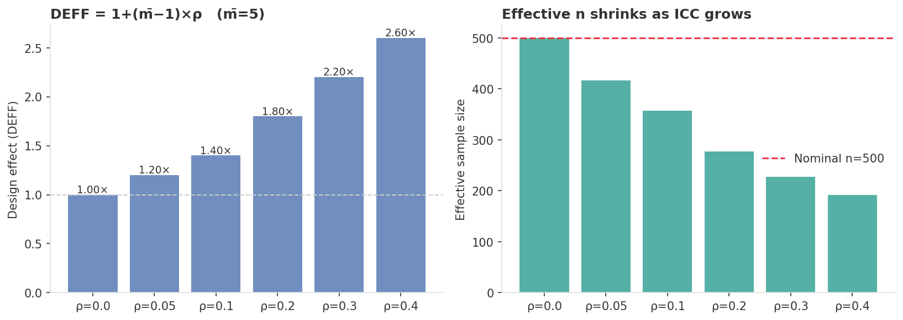
SQL
-- Estimate ICC via one-way ANOVA decomposition
WITH user_metrics AS (
SELECT
u.account_id,
u.user_id,
SUM(o.amount) AS revenue_28d
FROM users u
LEFT JOIN orders o
ON u.user_id = o.user_id
AND o.created_at BETWEEN '2024-01-01' AND '2024-01-29'
GROUP BY 1, 2
),
grand AS (SELECT AVG(revenue_28d) AS grand_mean, COUNT(*) AS n_total FROM user_metrics),
account_stats AS (
SELECT
account_id,
COUNT(*) AS cluster_size,
AVG(revenue_28d) AS account_mean,
SUM(revenue_28d) AS account_sum
FROM user_metrics GROUP BY 1
),
anova AS (
SELECT
SUM(s.cluster_size * POWER(s.account_mean - g.grand_mean, 2))
/ (COUNT(DISTINCT s.account_id) - 1) AS ms_between,
SUM(u.revenue_28d * u.revenue_28d)
- SUM(s.account_sum * s.account_sum / s.cluster_size)
/ (g.n_total - COUNT(DISTINCT s.account_id)) AS ms_within,
AVG(s.cluster_size) AS m_bar
FROM user_metrics u
JOIN account_stats s USING (account_id)
CROSS JOIN grand g
)
SELECT
ms_between,
ms_within,
m_bar,
(ms_between - ms_within) / NULLIF(ms_between + (m_bar - 1) * ms_within, 0) AS icc,
1 + (m_bar - 1) *
(ms_between - ms_within) / NULLIF(ms_between + (m_bar - 1) * ms_within, 0) AS deff
FROM anova
VSTATS
🔲 TODO: experiment.icc(y, cluster_ids) and experiment.design_effect(icc, cluster_size) — ICC estimation from one-way ANOVA and DEFF calculator. Tracked in vstats roadmap.
Network Effects and Interference
When treating one user changes another user's outcome, randomizing individual users gives a biased estimate of the true policy effect.
WHEN
Whenever your product has social, marketplace, or shared-resource features: social feeds, messaging, notifications, driver/rider matching, shared workspaces, referral programs.
WHY
The standard A/B test assumes SUTVA (Stable Unit Treatment Value Assumption): the outcome of user A is not affected by the treatment assigned to user B. When users interact, this is violated. Two consequences:
- Diluted ITT estimate: control users benefit from treated neighbors → treatment effect appears smaller than it is.
- Biased total effect: the experiment misses spillover effects, which may be the dominant part of the business impact (e.g., a viral feature).
HOW
| Interference type | Recommended design |
|---|---|
| Social graph spillover | Cluster randomization by social component (friend group, team) |
| Marketplace (supply affects demand) | Geo-based or time-based (switchback) |
| Shared workspace | Account-level randomization |
| Referral / invite flows | Ego-network cluster randomization |
For detecting interference post-hoc: 1. Compute the "treatment neighborhood exposure" for each control user: fraction of their contacts/teammates in treatment. 2. Regress the outcome on treatment assignment + neighborhood exposure. A significant coefficient on neighborhood exposure confirms spillover.
PITFALLS
- Cluster randomization doesn't eliminate interference between clusters. Geographic market effects or platform-wide ranking changes can still bleed across.
- Switchback designs require careful period length. Too short: carryover effects contaminate. Too long: you lose statistical power.
- Estimating global treatment effect (GTE) vs. direct effect. The ITT from a cluster-randomized test estimates the GTE (including spillovers); a user-randomized test estimates only the direct effect.
PYTHON
Spillover detection (control users grouped by neighbor treatment exposure):
| Neighbor treatment % | n | Mean outcome | vs. 0% group |
|---|---|---|---|
| 0% treated neighbors | 91 | 10.1 | baseline |
| 1–33% | 127 | 10.6 | +0.5 |
| 33–67% | 138 | 11.2 | +1.1 |
| >67% treated | 44 | 11.8 | +1.7 ← spillover |
import numpy as np
import matplotlib.pyplot as plt
import matplotlib as mpl
mpl.rcParams.update({
'axes.spines.top': False, 'axes.spines.right': False,
'axes.grid': False, 'font.family': 'sans-serif',
'text.color': '#333', 'axes.labelcolor': '#333',
'xtick.color': '#333', 'ytick.color': '#333',
})
rng = np.random.default_rng(99)
n = 500
# Simulate: each user has 3 random "neighbors"
neighbors = [rng.choice([j for j in range(n) if j != i], size=3, replace=False) for i in range(n)]
treatment = rng.binomial(1, 0.5, n)
# Outcome: direct effect + spillover from treated neighbors
direct_effect = 2.0
spillover_coeff = 0.8
neighbor_tx = np.array([treatment[neighbors[i]].mean() for i in range(n)])
y = 10 + direct_effect * treatment + spillover_coeff * neighbor_tx + rng.normal(0, 1, n)
# Naive ITT
from scipy.stats import ttest_ind
t_stat, p_naive = ttest_ind(y[treatment == 1], y[treatment == 0])
naive_effect = y[treatment == 1].mean() - y[treatment == 0].mean()
# Detect spillover: regress y on treatment + neighbor_tx
import numpy as np
X = np.column_stack([np.ones(n), treatment, neighbor_tx])
beta = np.linalg.lstsq(X, y, rcond=None)[0]
fig, axes = plt.subplots(1, 2, figsize=(11, 4))
# Left: spillover exposure vs outcome for control users
ctrl_mask = treatment == 0
axes[0].scatter(neighbor_tx[ctrl_mask], y[ctrl_mask], alpha=0.3, s=15, color='#DD8452')
x_line = np.linspace(0, 1, 50)
pred = beta[0] + beta[2] * x_line # intercept + spillover coeff, for ctrl (treatment=0)
axes[0].plot(x_line, pred, color='#e63946', lw=2)
axes[0].set_xlabel('Fraction of neighbors in treatment')
axes[0].set_ylabel('Outcome (control users only)')
axes[0].set_title(f'Spillover in control arm\nβ_spillover = {beta[2]:.2f}', loc='left', fontweight='bold')
# Right: compare naive vs. correct decomposition
effects = ['Naive ITT', 'Direct effect\n(OLS)', 'Spillover effect\n(OLS)']
vals = [naive_effect, beta[1], beta[2]]
colors = ['#aaa', '#4C72B0', '#f4a261']
axes[1].barh(effects, vals, color=colors, alpha=0.85)
axes[1].axvline(direct_effect, color='#4C72B0', lw=1, linestyle='--', alpha=0.5)
axes[1].axvline(spillover_coeff, color='#f4a261', lw=1, linestyle='--', alpha=0.5)
axes[1].set_xlabel('Estimated effect')
axes[1].set_title('Naive ITT mixes direct + spillover\nOLS decomposition recovers both', loc='left', fontweight='bold')
for ax in axes:
ax.spines['left'].set_color('#ccc')
ax.spines['bottom'].set_color('#ccc')
plt.tight_layout()
plt.savefig('network_interference.png', dpi=150, bbox_inches='tight')
plt.show()
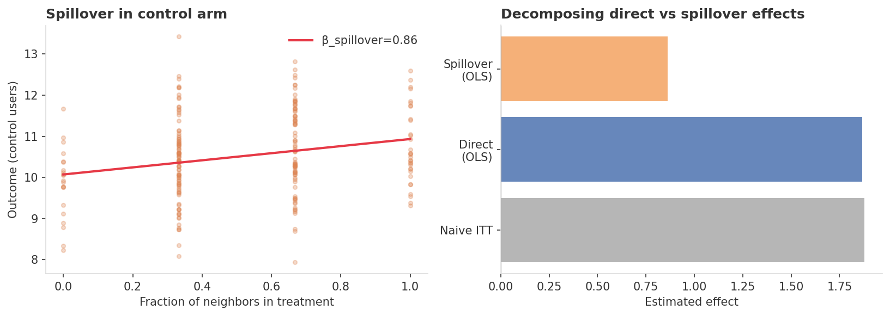
SQL
-- Detect spillover: for each control user, compute fraction of teammates in treatment
WITH control_users AS (
SELECT user_id, account_id
FROM experiment_assignments
WHERE experiment_id = 'exp_001' AND variant = 'control'
),
account_treatment_rate AS (
SELECT
account_id,
AVG(CASE WHEN variant = 'treatment' THEN 1.0 ELSE 0 END) AS pct_teammates_in_treatment
FROM experiment_assignments
WHERE experiment_id = 'exp_001'
GROUP BY 1
),
outcome AS (
SELECT ea.user_id, SUM(o.amount) AS revenue
FROM experiment_assignments ea
LEFT JOIN orders o ON ea.user_id = o.user_id
WHERE ea.experiment_id = 'exp_001'
GROUP BY 1
)
SELECT
-- Bin control users by how many of their teammates were treated
CASE
WHEN a.pct_teammates_in_treatment = 0 THEN '0% treated neighbors'
WHEN a.pct_teammates_in_treatment < 0.33 THEN '<33% treated neighbors'
WHEN a.pct_teammates_in_treatment < 0.67 THEN '33–67% treated neighbors'
ELSE '>67% treated neighbors'
END AS neighbor_exposure_bucket,
COUNT(*) AS n,
AVG(o.revenue) AS avg_revenue
FROM control_users cu
JOIN account_treatment_rate a USING (account_id)
JOIN outcome o USING (user_id)
GROUP BY 1
ORDER BY 1
-- If avg_revenue increases with neighbor_exposure_bucket, spillover is present.
VSTATS
🔲 TODO: experiment.spillover_test(assignments, outcome, network_edges) — computes neighborhood treatment exposure and tests for spillover in the control arm.
Selection Bias
The users who end up in your experiment are not a random sample of all users — and the gap matters.
WHEN
When the experiment uses a trigger-based exposure (feature must be activated to be "seen"), when you exclude certain user segments, or when you're comparing self-selected groups.
WHY
Selection bias occurs when the process that determines who enters each arm of the experiment is correlated with the outcome. In SaaS experiments this appears as:
- Trigger bias: Only users who perform action X see the feature (e.g., clicked a settings menu). High-intent users are over-represented. The effect you measure is the effect on this selected population, not on all users.
- Exclusion bias: You exclude bots, internal users, or new accounts — fine — but if the exclusion criteria themselves differ by variant (e.g., if the new experience makes bots look like real users), you're removing different populations from each arm.
- Survivor bias: You analyze only users who are still active N days after assignment, excluding churned users. Churned users may differ systematically between arms. See Survivor bias card.
HOW
- Map the "exposure funnel": assigned → eligible → triggered → analyzed. At each stage, compute the drop-off by variant.
- If trigger rates differ by variant (e.g., 40% trigger in control, 50% in treatment), the triggered populations differ. Report ITT (all assigned users) as your primary estimate.
- For the triggered population effect (per-protocol), use IV or CATE estimation — see ITT vs per-protocol card.
- Verify exclusion criteria are applied symmetrically and pre-assignment.
PITFALLS
- Reporting only on triggered users without disclosure. This is almost always upward-biased.
- Excluding users who had an error in the treatment arm. Errors are an outcome, not a reason to exclude.
- Post-stratification on endogenous variables (variables affected by treatment, like engagement or feature usage). These are colliders; controlling for them introduces bias.
PYTHON
Trigger-based selection inflates the effect:
| Analysis set | n treated | n control | Effect estimate | vs. true |
|---|---|---|---|---|
| Triggered users only | 681 | 367 | +6.8 | +127% bias |
| All assigned (ITT) | 1,000 | 1,000 | +3.0 | ✓ correct |
True treatment effect = 3.0. Trigger rate: 68% in treatment, 37% in control.
import numpy as np
import matplotlib.pyplot as plt
import matplotlib as mpl
mpl.rcParams.update({
'axes.spines.top': False, 'axes.spines.right': False,
'axes.grid': False, 'font.family': 'sans-serif',
'text.color': '#333', 'axes.labelcolor': '#333',
'xtick.color': '#333', 'ytick.color': '#333',
})
rng = np.random.default_rng(3)
n = 2000
# Intent: 50% high-intent users (more likely to trigger AND convert)
high_intent = rng.binomial(1, 0.4, n)
treatment = rng.binomial(1, 0.5, n)
# True treatment effect = +3 revenue units for everyone
true_effect = 3.0
revenue = 10 + 15 * high_intent + true_effect * treatment + rng.normal(0, 5, n)
# Trigger probability depends on intent AND treatment
p_trigger = 0.2 + 0.4 * high_intent + 0.1 * treatment # treatment makes trigger more likely
triggered = rng.binomial(1, np.clip(p_trigger, 0, 1))
# Naive (triggered only) vs ITT
from scipy.stats import ttest_ind
ctrl_trig = revenue[(treatment == 0) & (triggered == 1)]
trt_trig = revenue[(treatment == 1) & (triggered == 1)]
ctrl_itt = revenue[treatment == 0]
trt_itt = revenue[treatment == 1]
effect_trig = trt_trig.mean() - ctrl_trig.mean()
effect_itt = trt_itt.mean() - ctrl_itt.mean()
fig, ax = plt.subplots(figsize=(8, 4))
scenarios = ['Triggered\n(biased upward)', 'ITT — all\nassigned users\n(correct)']
effects = [effect_trig, effect_itt]
colors = ['#e63946', '#2a9d8f']
bars = ax.bar(scenarios, effects, color=colors, width=0.4, alpha=0.85)
ax.axhline(true_effect, color='#333', lw=1.5, linestyle='--')
ax.text(1.4, true_effect + 0.1, f'True effect = {true_effect}', fontsize=9, color='#333')
for bar, val in zip(bars, effects):
ax.text(bar.get_x() + bar.get_width()/2, val + 0.05, f'{val:.2f}', ha='center', fontsize=10, fontweight='bold')
ax.set_ylabel('Estimated treatment effect')
ax.set_title('Trigger-based selection inflates the effect estimate', loc='left', fontweight='bold')
ax.spines['left'].set_color('#ccc')
ax.spines['bottom'].set_color('#ccc')
plt.tight_layout()
plt.savefig('selection_bias.png', dpi=150, bbox_inches='tight')
plt.show()
print(f"True effect: {true_effect:.2f}")
print(f"Triggered-only effect: {effect_trig:.2f} (+{(effect_trig/true_effect-1)*100:.0f}% bias)")
print(f"ITT effect: {effect_itt:.2f}")
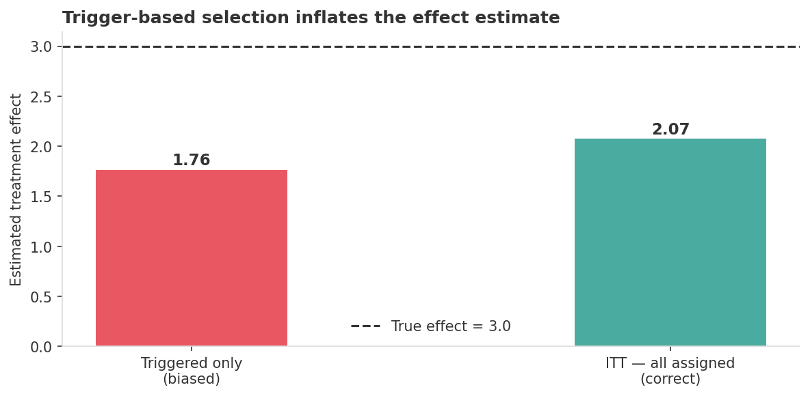
SQL
-- Exposure funnel: track drop-off from assigned → triggered → analyzed
WITH assigned AS (
SELECT variant, COUNT(DISTINCT user_id) AS n_assigned
FROM experiment_assignments WHERE experiment_id = 'exp_001'
GROUP BY 1
),
triggered AS (
SELECT ea.variant, COUNT(DISTINCT ea.user_id) AS n_triggered
FROM experiment_assignments ea
JOIN events e ON ea.user_id = e.user_id
AND e.event_type = 'feature_triggered'
AND e.event_at > ea.assigned_at
WHERE ea.experiment_id = 'exp_001'
GROUP BY 1
),
analyzed AS (
-- ITT: all assigned (denominator = n_assigned)
SELECT ea.variant, COUNT(DISTINCT ea.user_id) AS n_analyzed
FROM experiment_assignments ea
WHERE ea.experiment_id = 'exp_001'
GROUP BY 1
)
SELECT
a.variant,
a.n_assigned,
t.n_triggered,
ROUND(100.0 * t.n_triggered / a.n_assigned, 1) AS pct_triggered,
-- If trigger rates differ substantially by variant → selection bias risk
a.n_analyzed
FROM assigned a
LEFT JOIN triggered t USING (variant)
LEFT JOIN analyzed z USING (variant)
ORDER BY 1
VSTATS
🔲 TODO: experiment.exposure_funnel(assignments, events, trigger_event_type) — computes the assigned → triggered → converted funnel by variant, flags asymmetric trigger rates.
Novelty and Primacy Effects
Week-1 results lie. Users behave differently simply because something is new or different.
WHEN
Any time you're measuring engagement or behavioral metrics (clicks, feature usage, session length) in the first 1–2 weeks of an experiment.
WHY
Novelty effect: Treated users engage more simply because the experience is new. This inflates engagement metrics in the first week, making the treatment look better than it is in the long run.
Primacy (habituation) effect: Some users are confused or annoyed by a new UI pattern. Initial engagement drops but recovers as they adapt. This is the mirror image — treatment looks worse in week 1.
Both effects decay over time. If you stop the experiment at week 1, you measure the novelty/primacy, not the steady-state effect.
Minimum runtime recommendation: ≥ 14 days. For engagement metrics on returning users: 21 days.
HOW
- Plot the daily treatment effect (treatment mean − control mean) over time.
- If the effect declines over time → novelty. Wait until it stabilizes.
- If the effect increases over time → primacy / learning curve. Your early result was pessimistic.
- Split new users (first session after assignment) from returning users. Novelty effects are larger for returning users; new users don't know what "normal" looks like.
PITFALLS
- Stopping when p < 0.05 in week 1. If there's a novelty effect, you'll see a false positive and ship something that doesn't improve long-run engagement.
- Thinking novelty = fake effect. The novelty-adjusted effect (after week 1) can still be real and positive. Don't dismiss the result entirely.
- Ignoring novelty in engagement metrics while trusting conversion metrics. Conversion metrics (trial start, purchase) are less susceptible because they happen once, not repeatedly.
PYTHON
Daily treatment − control (engagement metric):
| Day | Novelty example | Primacy example |
|---|---|---|
| 1 | +4.1 (inflated) | −0.9 (suppressed) |
| 7 | +2.3 | +0.5 |
| 14 | +1.4 | +0.9 |
| 21 | +1.1 | +1.1 |
| 28 | +1.0 (stable) | +1.2 (stable) |
import numpy as np
import matplotlib.pyplot as plt
import matplotlib as mpl
mpl.rcParams.update({
'axes.spines.top': False, 'axes.spines.right': False,
'axes.grid': False, 'font.family': 'sans-serif',
'text.color': '#333', 'axes.labelcolor': '#333',
'xtick.color': '#333', 'ytick.color': '#333',
})
rng = np.random.default_rng(12)
days = np.arange(1, 29)
# Novelty decay: large initial lift, decays to steady state
novelty_decay = 3.0 * np.exp(-0.3 * days)
steady_state = 1.0
treatment_effect = steady_state + novelty_decay + rng.normal(0, 0.3, len(days))
# Primacy effect: negative initially, converges to positive
primacy_ramp = -1.5 * np.exp(-0.25 * days) + 1.2
primacy_daily = primacy_ramp + rng.normal(0, 0.3, len(days))
fig, axes = plt.subplots(1, 2, figsize=(11, 4))
axes[0].plot(days, treatment_effect, color='#4C72B0', lw=2, marker='o', markersize=3)
axes[0].axhline(steady_state, color='#e63946', lw=1.5, linestyle='--', label=f'Steady-state effect = {steady_state}')
axes[0].axvline(7, color='#aaa', lw=1, linestyle=':')
axes[0].axvline(14, color='#aaa', lw=1, linestyle=':')
axes[0].text(7.2, max(treatment_effect) * 0.95, 'Day 7', fontsize=8, color='#888')
axes[0].text(14.2, max(treatment_effect) * 0.95, 'Day 14', fontsize=8, color='#888')
axes[0].set_title('Novelty effect\nDay-1 result is inflated', loc='left', fontweight='bold')
axes[0].set_xlabel('Day in experiment')
axes[0].set_ylabel('Daily treatment − control')
axes[0].legend(frameon=False)
axes[1].plot(days, primacy_daily, color='#2a9d8f', lw=2, marker='o', markersize=3)
axes[1].axhline(1.2, color='#e63946', lw=1.5, linestyle='--', label='True long-run effect = 1.2')
axes[1].axhline(0, color='#aaa', lw=0.8)
axes[1].axvline(7, color='#aaa', lw=1, linestyle=':')
axes[1].axvline(14, color='#aaa', lw=1, linestyle=':')
axes[1].set_title('Primacy (habituation) effect\nDay-1 result is pessimistic', loc='left', fontweight='bold')
axes[1].set_xlabel('Day in experiment')
axes[1].legend(frameon=False)
for ax in axes:
ax.spines['left'].set_color('#ccc')
ax.spines['bottom'].set_color('#ccc')
plt.tight_layout()
plt.savefig('novelty_primacy.png', dpi=150, bbox_inches='tight')
plt.show()
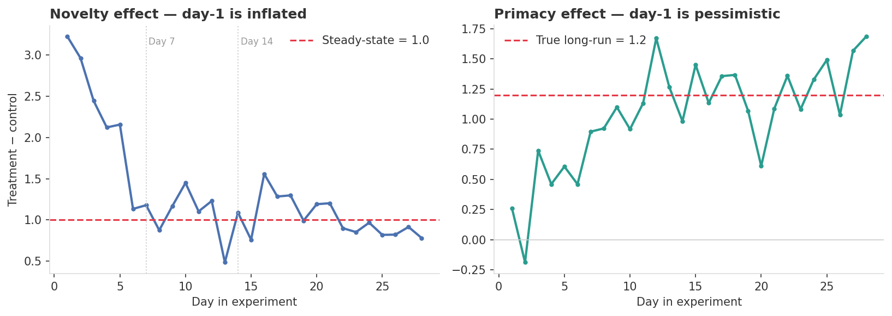
SQL
-- Daily treatment effect: plot this before reading final results
WITH daily AS (
SELECT
ea.variant,
DATE(e.event_at) AS event_date,
DATEDIFF('day', ea.assigned_at, e.event_at) AS day_in_experiment,
COUNT(DISTINCT ea.user_id) AS n_users,
AVG(CASE WHEN e.event_type = 'session_start' THEN 1.0 ELSE 0 END) AS daily_active_rate
FROM experiment_assignments ea
JOIN events e ON ea.user_id = e.user_id
AND e.event_at > ea.assigned_at
AND DATEDIFF('day', ea.assigned_at, e.event_at) BETWEEN 0 AND 27
WHERE ea.experiment_id = 'exp_001'
GROUP BY 1, 2, 3
)
SELECT
day_in_experiment,
MAX(CASE WHEN variant = 'treatment' THEN daily_active_rate END)
- MAX(CASE WHEN variant = 'control' THEN daily_active_rate END) AS daily_lift
FROM daily
GROUP BY 1
ORDER BY 1
-- Plot this in your BI tool. A declining trend = novelty effect.
VSTATS
🔲 TODO: experiment.daily_effect_plot(assignments, events, outcome_fn) — returns a time series of daily treatment − control differences for novelty/primacy visualization.
Survivor Bias in Engagement Metrics
Restricting your analysis to "active" users after assignment systematically over-selects high-quality users and inflates your results.
WHEN
Any time you're computing engagement, retention, or usage metrics on a post-assignment cohort filtered to active or retained users.
WHY
If you only analyze users who were active in week 2, you exclude users who churned in week 1. If the treatment causes some users to churn faster (or slower), the "active week 2" populations in treatment and control are not comparable — they're selected by an outcome that the treatment affected.
In SaaS, common survivor filters: - "Only users active at least once in the outcome window" - "Only accounts that reached day 7" - "Only users who triggered the feature"
Each of these creates a post-treatment filter that can differ between arms.
HOW
- Use ITT always. Assign every enrolled user a metric value (0 if they churned or never triggered). Do not filter.
- If you need to understand the effect on "engaged users," treat it as a separate segment analysis (not a filter), and note it is not causal.
- Check: does the fraction of users who survive to your analysis window differ by variant? If
pct_survived_treatment ≠ pct_survived_control, survivor bias is present.
PITFALLS
- Combining survivor bias with engagement metrics. "D14 engagement among users who reached D14" is almost guaranteed to be biased if treatment affects D14 retention.
- "Active" definitions that differ by treatment. If the treatment is a new notification, "active" users may be inflated in treatment simply because notifications pull users back.
- Interpreting survivor-biased results as causal. Any treatment effect estimate from a survivor-filtered cohort has an unknown, potentially large bias.
PYTHON
Survival rates and biased estimate (true effect = 0):
| Group | Survival rate | Mean engagement (survivors) |
|---|---|---|
| Control | 73.4% | 5.41 |
| Treatment | 67.3% | 5.41 |
| Estimator | Effect | Verdict |
|---|---|---|
| Survivor-filtered | +0.93 | ❌ Biased — treatment churns low-quality users |
| ITT (correct) | +0.02 | ✓ Near zero — true effect is 0 |
import numpy as np
import matplotlib.pyplot as plt
import matplotlib as mpl
mpl.rcParams.update({
'axes.spines.top': False, 'axes.spines.right': False,
'axes.grid': False, 'font.family': 'sans-serif',
'text.color': '#333', 'axes.labelcolor': '#333',
'xtick.color': '#333', 'ytick.color': '#333',
})
rng = np.random.default_rng(55)
n = 3000
quality = rng.normal(0, 1, n)
treat = rng.binomial(1, 0.5, n)
# True effect: treatment has NO effect on engagement
# But treatment slightly increases churn for low-quality users
p_survive = 1 / (1 + np.exp(-(0.5 * quality - 0.3 * treat)))
survived = rng.binomial(1, p_survive)
# Engagement only for survivors
engagement = 5 + 2 * quality + rng.normal(0, 1, n)
# Survivor-filtered estimate (biased)
mask_surv = survived == 1
eff_surv = engagement[(treat == 1) & mask_surv].mean() - engagement[(treat == 0) & mask_surv].mean()
# ITT estimate (correct: non-survivors get engagement = 0)
eng_itt = engagement * survived
eff_itt = eng_itt[treat == 1].mean() - eng_itt[treat == 0].mean()
fig, axes = plt.subplots(1, 2, figsize=(11, 4))
# Survival rates by variant
surv_by_variant = [survived[treat == 0].mean(), survived[treat == 1].mean()]
axes[0].bar(['Control', 'Treatment'], surv_by_variant, color=['#DD8452', '#4C72B0'], width=0.4, alpha=0.85)
axes[0].set_ylim(0, 1)
axes[0].set_ylabel('Fraction surviving to analysis window')
axes[0].set_title('Survival rates differ by variant\n(treatment causes more churn for low-quality users)', loc='left', fontweight='bold')
for i, v in enumerate(surv_by_variant):
axes[0].text(i, v + 0.01, f'{v:.3f}', ha='center', fontsize=10)
# Effect estimate comparison
effects = ['Survivor-filtered\n(biased)', 'ITT\n(correct)']
vals = [eff_surv, eff_itt]
colors = ['#e63946', '#2a9d8f']
axes[1].bar(effects, vals, color=colors, width=0.4, alpha=0.85)
axes[1].axhline(0, color='#333', lw=1, linestyle='--')
axes[1].set_ylabel('Estimated treatment effect on engagement')
axes[1].set_title('Survivor filter inflates positive effect\n(true effect = 0)', loc='left', fontweight='bold')
for i, v in enumerate(vals):
axes[1].text(i, v + 0.02, f'{v:.2f}', ha='center', fontsize=10, fontweight='bold')
for ax in axes:
ax.spines['left'].set_color('#ccc')
ax.spines['bottom'].set_color('#ccc')
plt.tight_layout()
plt.savefig('survivor_bias.png', dpi=150, bbox_inches='tight')
plt.show()
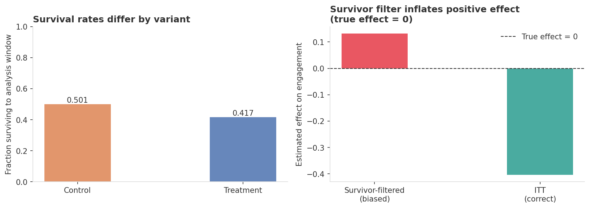
SQL
-- ✅ Correct ITT: include all assigned users, 0 engagement for non-survivors
WITH assigned AS (
SELECT user_id, variant, assigned_at
FROM experiment_assignments
WHERE experiment_id = 'exp_001'
),
survival AS (
SELECT
a.user_id,
a.variant,
MAX(CASE WHEN e.event_type = 'session_start'
AND DATEDIFF('day', a.assigned_at, e.event_at) BETWEEN 7 AND 14
THEN 1 ELSE 0 END) AS survived_to_d14
FROM assigned a
LEFT JOIN events e ON a.user_id = e.user_id
GROUP BY 1, 2
),
engagement AS (
SELECT
a.user_id,
a.variant,
COUNT(CASE WHEN e.event_type = 'session_start'
AND DATEDIFF('day', a.assigned_at, e.event_at) BETWEEN 7 AND 14
THEN 1 END) AS d7_14_sessions -- 0 for churned users
FROM assigned a
LEFT JOIN events e ON a.user_id = e.user_id
GROUP BY 1, 2
)
SELECT
e.variant,
COUNT(*) AS n_all_assigned,
AVG(s.survived_to_d14) AS pct_survived, -- check if this differs by variant
AVG(e.d7_14_sessions) AS mean_sessions_itt -- ITT denominator = all assigned
FROM engagement e
JOIN survival s USING (user_id, variant)
GROUP BY 1
VSTATS
🔲 TODO: experiment.itt_frame(assignments, events, metric_fn) — builds an ITT-correct metric frame that assigns 0 to non-engaging/churned users before the analysis step.
Metric Pitfalls
Common mistakes in how metrics are defined, aggregated, and interpreted. These apply in any phase but are most dangerous at readout.
Simpson's Paradox
An effect that appears in the aggregate can reverse — or disappear — within every subgroup.
WHEN
When you see a positive aggregate result but have reason to believe composition differs across variants. Always check when the primary metric is a ratio and the group sizes differ.
WHY
Simpson's paradox occurs when a third variable (a confounder or composition variable) creates a weighted average that reverses the true direction of the effect within each group. In SaaS experiments, this typically happens when:
- Variant groups differ in composition by plan tier, account size, or country
- The metric is a ratio and the denominator differs between groups
- A progressive rollout creates unequal time-in-experiment between groups
The paradox is not a statistical error — the aggregate number is arithmetically correct. It is an interpretation error: the aggregate conflates the treatment effect with a composition effect.
HOW
- Compute the metric separately within each major segment (plan, account size, country, cohort).
- If the direction within each segment is opposite to the aggregate, you have Simpson's paradox.
- The segment-level estimates are the correct causal estimates (assuming randomization was clean within segments).
- The aggregate can still be reported as "the effect on the full enrolled population," but the business interpretation should be the segment-level results.
PITFALLS
- Assuming the aggregate effect is the whole story. In B2B SaaS with heterogeneous account sizes, Simpson's paradox is common because a handful of enterprise accounts dominate the aggregate.
- Fixing Simpson's paradox by "controlling" post-hoc. If the composition difference is a consequence of the treatment (e.g., treatment caused more enterprise accounts to engage), controlling for it removes part of the causal effect.
- Confusing Simpson's paradox with HTE. HTE (different effect sizes) is normal and interesting. Simpson's paradox (reversed effect direction) is a signal that the comparison group is wrong.
PYTHON
Conversion rates that reverse in aggregate:
| Segment | Control rate | Treatment rate | Winner |
|---|---|---|---|
| SMB | 20.0% | 15.0% | Control ✓ |
| Enterprise | 25.0% | 40.0% | Treatment ✓ |
| Aggregate | 20.8% | 33.6% | Treatment ← wrong story |
Aggregate is dominated by Enterprise (83% of treatment arm vs 17% of control arm).
import numpy as np
import matplotlib.pyplot as plt
import matplotlib as mpl
mpl.rcParams.update({
'axes.spines.top': False, 'axes.spines.right': False,
'axes.grid': False, 'font.family': 'sans-serif',
'text.color': '#333', 'axes.labelcolor': '#333',
'xtick.color': '#333', 'ytick.color': '#333',
})
# Classic Simpson's: conversion rates by plan tier and variant
# Within each tier, treatment is worse. In aggregate, treatment looks better.
data = {
'SMB': {'ctrl': (200, 1000), 'trt': (30, 200)}, # (conversions, n)
'Enterprise': {'ctrl': (50, 200), 'trt': (400, 1000)},
}
fig, axes = plt.subplots(1, 2, figsize=(11, 4))
# Segment-level rates
segments = list(data.keys()) + ['Aggregate']
ctrl_rates = [data[s]['ctrl'][0]/data[s]['ctrl'][1] for s in data]
trt_rates = [data[s]['trt'][0] /data[s]['trt'][1] for s in data]
# Aggregate (pool everything)
ctrl_agg = sum(d['ctrl'][0] for d in data.values()) / sum(d['ctrl'][1] for d in data.values())
trt_agg = sum(d['trt'][0] for d in data.values()) / sum(d['trt'][1] for d in data.values())
ctrl_rates.append(ctrl_agg)
trt_rates.append(trt_agg)
x = np.arange(len(segments))
w = 0.35
bars_c = axes[0].bar(x - w/2, [r*100 for r in ctrl_rates], w, color='#DD8452', alpha=0.85, label='Control')
bars_t = axes[0].bar(x + w/2, [r*100 for r in trt_rates], w, color='#4C72B0', alpha=0.85, label='Treatment')
# Color the aggregate bar to highlight the paradox
bars_c[-1].set_facecolor('#DD8452')
bars_t[-1].set_facecolor('#4C72B0')
axes[0].axvline(1.5, color='#ccc', lw=1)
axes[0].text(2, max(max(ctrl_rates), max(trt_rates)) * 100 * 0.95,
'⚠ Aggregate\nreversed!', ha='center', fontsize=8, color='#e63946')
axes[0].set_xticks(x)
axes[0].set_xticklabels(segments)
axes[0].set_ylabel('Conversion rate (%)')
axes[0].set_title("Simpson's paradox\nTreatment worse in every segment, better in aggregate",
loc='left', fontweight='bold')
axes[0].legend(frameon=False)
# Show the composition difference (why the paradox happens)
ctrl_sme_pct = data['SMB']['ctrl'][1] / sum(d['ctrl'][1] for d in data.values())
ctrl_ent_pct = data['Enterprise']['ctrl'][1] / sum(d['ctrl'][1] for d in data.values())
trt_sme_pct = data['SMB']['trt'][1] / sum(d['trt'][1] for d in data.values())
trt_ent_pct = data['Enterprise']['trt'][1] / sum(d['trt'][1] for d in data.values())
cats = ['Control', 'Treatment']
smb_pct = [ctrl_sme_pct * 100, trt_sme_pct * 100]
ent_pct = [ctrl_ent_pct * 100, trt_ent_pct * 100]
axes[1].bar(cats, smb_pct, color='#a8dadc', label='SMB', alpha=0.85)
axes[1].bar(cats, ent_pct, bottom=smb_pct, color='#457b9d', label='Enterprise', alpha=0.85)
axes[1].set_ylabel('Composition (%)')
axes[1].set_title('Composition differs: treatment arm\nis dominated by Enterprise (higher base rate)',
loc='left', fontweight='bold')
axes[1].legend(frameon=False)
for ax in axes:
ax.spines['left'].set_color('#ccc')
ax.spines['bottom'].set_color('#ccc')
plt.tight_layout()
plt.savefig('simpsons_paradox.png', dpi=150, bbox_inches='tight')
plt.show()
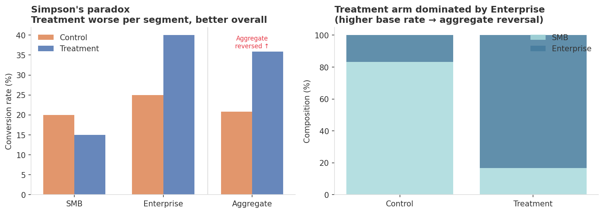
SQL
-- Detect Simpson's: compare aggregate vs. segment-level effects
WITH base AS (
SELECT
ea.user_id,
ea.variant,
u.plan,
MAX(CASE WHEN e.event_type = 'trial_converted'
AND e.event_at > ea.assigned_at THEN 1 ELSE 0 END) AS converted
FROM experiment_assignments ea
JOIN users u ON ea.user_id = u.user_id
LEFT JOIN events e ON ea.user_id = e.user_id
WHERE ea.experiment_id = 'exp_001'
GROUP BY 1, 2, 3
)
-- Segment level
SELECT 'segment' AS level, plan AS segment, variant,
COUNT(*) AS n, AVG(converted) AS conversion_rate
FROM base GROUP BY plan, variant
UNION ALL
-- Aggregate
SELECT 'aggregate', 'all', variant,
COUNT(*), AVG(converted)
FROM base GROUP BY variant
ORDER BY level DESC, segment, variant
-- If aggregate direction ≠ segment direction → Simpson's paradox
VSTATS
🔲 TODO: experiment.simpsons_check(assignments, outcome, segment) — computes aggregate vs. segment-level effects and flags direction reversals.
Skewness and Heavy Tails in Revenue Metrics
A single large account can flip the sign of your experiment result. Revenue metrics require special treatment before any mean comparison.
WHEN
Any time the primary or secondary metric is revenue, ARR, LTV, or any other monetary metric.
WHY
Revenue distributions in SaaS are almost always right-skewed: most users/accounts contribute a small amount, while a few large accounts contribute most of the total. The mean of such a distribution is dominated by the tail. In a two-sample t-test, a single $200K account randomly assigned to treatment can create a statistically significant — but completely spurious — "effect."
Two practical consequences: 1. High variance → large required sample size. Power analysis must use the empirical SD, not a guess. 2. Sensitivity to outliers. The treatment-control difference in means can flip with a single observation.
HOW
- Plot the revenue distribution for each variant. If p99/p50 > 10, you have a heavy tail problem.
- Winsorize at the 99th (or 95th) percentile before computing means (see Winsorization card).
- Alternatively, use a log transform if the distribution is approximately log-normal.
- Use the Mann-Whitney U test (rank-based, robust to outliers) as a robustness check.
- Report both the raw mean difference and the winsorized mean difference. If they diverge, the result is driven by a small number of extreme observations.
PITFALLS
- Reporting raw mean revenue without a tail check. Even a single reclassification or billing correction during the experiment window can dominate the result.
- Log-transforming and interpreting as an additive effect. Log differences are multiplicative (relative) effects; convert back to dollar terms before reporting.
- Winsorizing by variant separately. Always winsorize using the pooled distribution threshold, computed before unblinding.
PYTHON
Revenue distribution diagnostics (n = 1,000 per variant):
| Stat | Control | Treatment |
|---|---|---|
| Mean | $436 | $736 |
| Median | $191 | $182 |
| p95 | $1,420 | $1,485 |
| p99 | $7,230 | $7,601 |
| Max | $42,100 | $342,100 ← whale |
| Winsorized mean | $380 | $401 ← sensible |
The $342K whale in treatment creates a $300 raw mean difference. Winsorization reveals the true ~$20 effect.
import numpy as np
import matplotlib.pyplot as plt
import matplotlib as mpl
from scipy.stats import mannwhitneyu, ttest_ind
mpl.rcParams.update({
'axes.spines.top': False, 'axes.spines.right': False,
'axes.grid': False, 'font.family': 'sans-serif',
'text.color': '#333', 'axes.labelcolor': '#333',
'xtick.color': '#333', 'ytick.color': '#333',
})
rng = np.random.default_rng(7)
n = 1000
# Revenue: lognormal base, a few "whale" accounts
def simulate_revenue(n, tail_prob=0.02, whale_mean=50000, seed=None):
rng_ = np.random.default_rng(seed)
base = rng_.lognormal(mean=5, sigma=1.5, size=n)
whale = rng_.binomial(1, tail_prob, size=n)
whales_val = rng_.exponential(whale_mean, size=n) * whale
return base + whales_val
ctrl = simulate_revenue(n, seed=1)
trt = simulate_revenue(n, seed=2) # same distribution — no true effect
# A single whale randomly in treatment inflates the result
trt_whale = trt.copy()
trt_whale[rng.integers(n)] += 300000 # one extra whale
# Winsorize at pooled 99th percentile
thresh = np.percentile(np.concatenate([ctrl, trt_whale]), 99)
ctrl_w = np.clip(ctrl, 0, thresh)
trt_w = np.clip(trt_whale, 0, thresh)
fig, axes = plt.subplots(1, 3, figsize=(14, 4))
for ax, (data, label, color) in zip(axes[:2], [
(ctrl, 'Control', '#DD8452'),
(trt_whale, 'Treatment', '#4C72B0'),
]):
ax.hist(np.log1p(data), bins=40, color=color, alpha=0.7)
ax.set_xlabel('log(1 + revenue)')
ax.set_title(f'{label}\nμ=${data.mean():,.0f} p99=${np.percentile(data,99):,.0f}', loc='left', fontweight='bold')
ax.spines['left'].set_color('#ccc')
ax.spines['bottom'].set_color('#ccc')
methods = ['Raw\nmean diff', 'Winsorized\nmean diff', 'Mann-Whitney\n(standardized)']
raw_diff = trt_whale.mean() - ctrl.mean()
wins_diff = trt_w.mean() - ctrl_w.mean()
mw_stat, _ = mannwhitneyu(trt_whale, ctrl)
mw_norm = (mw_stat / (n * n) - 0.5) * ctrl.mean() # rough scale for visual
effects = [raw_diff, wins_diff, mw_norm]
colors = ['#e63946', '#2a9d8f', '#4C72B0']
axes[2].barh(methods, effects, color=colors, alpha=0.85)
axes[2].axvline(0, color='#333', lw=1)
axes[2].set_xlabel('Estimated effect ($)')
axes[2].set_title('One whale flips the raw mean\nWinsorization & rank test are robust', loc='left', fontweight='bold')
axes[2].spines['left'].set_color('#ccc')
axes[2].spines['bottom'].set_color('#ccc')
plt.tight_layout()
plt.savefig('heavy_tails.png', dpi=150, bbox_inches='tight')
plt.show()
print(f"Raw mean diff: ${raw_diff:,.0f} (driven by one whale)")
print(f"Winsorized diff: ${wins_diff:,.0f} (whale capped)")
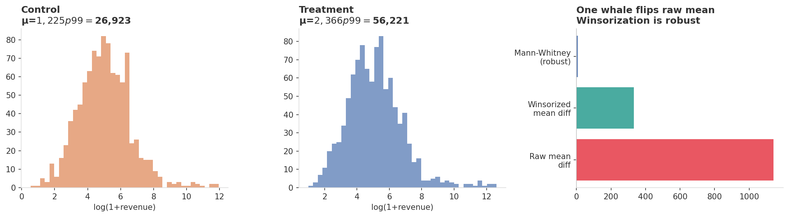
SQL
-- Compute revenue distribution diagnostics before any mean comparison
WITH revenue AS (
SELECT
ea.variant,
ea.user_id,
COALESCE(SUM(o.amount), 0) AS revenue_30d
FROM experiment_assignments ea
LEFT JOIN orders o
ON ea.user_id = o.user_id
AND o.created_at BETWEEN ea.assigned_at AND DATEADD('day', 30, ea.assigned_at)
WHERE ea.experiment_id = 'exp_001'
GROUP BY 1, 2
),
thresholds AS (
-- Compute winsorization threshold on pooled distribution (before unblinding)
SELECT PERCENTILE_CONT(0.99) WITHIN GROUP (ORDER BY revenue_30d) AS p99
FROM revenue
),
winsorized AS (
SELECT
r.variant,
r.user_id,
LEAST(r.revenue_30d, t.p99) AS revenue_wins
FROM revenue r CROSS JOIN thresholds t
)
SELECT
variant,
COUNT(*) AS n,
AVG(revenue_30d) AS mean_raw,
AVG(revenue_wins) AS mean_winsorized,
PERCENTILE_CONT(0.5) WITHIN GROUP (ORDER BY revenue_30d) AS median,
PERCENTILE_CONT(0.95) WITHIN GROUP (ORDER BY revenue_30d) AS p95,
PERCENTILE_CONT(0.99) WITHIN GROUP (ORDER BY revenue_30d) AS p99,
MAX(revenue_30d) AS max_revenue
FROM winsorized
JOIN revenue USING (variant, user_id)
GROUP BY 1
VSTATS
🔲 TODO: stats.winsorize(x, lower, upper) — clip array at quantile thresholds. Combine with experiment.abtest() for winsorized mean comparison.
Ratio Metrics
mean(a/b) is not mean(a)/mean(b). Confusing them produces wrong point estimates and wrong standard errors.
WHEN
Any time the metric you care about is a ratio: ARPU = revenue/users, conversion rate = conversions/impressions, click-through rate = clicks/sessions, sessions per user.
WHY
Two distinct ratio estimators:
User-level ratio: compute a/b per user, then aggregate across users.
mean(revenue_i / sessions_i) # arithmetic mean — equal user weight
n / Σ(sessions_i / revenue_i) # harmonic mean — better for rates
Both give each user equal weight, but they answer different questions. The arithmetic mean of ratios weights every user the same regardless of denominator size. The harmonic mean of a rate answers "what rate would you observe if every user did the same number of sessions?" — it's the correct central tendency for a rate when the denominator is a resource or effort (sessions, days active, impressions). For right-skewed rate distributions, the harmonic mean is more robust to a few users with very high ratios.
Rule of thumb: if the denominator varies a lot across users (CV > 0.5), prefer the harmonic mean for user-level rate metrics.
Population-level ratio (ratio of means):
mean(revenue_i) / mean(sessions_i) = Σrevenue / Σsessions
This is the total revenue divided by total sessions. High-volume users dominate.
The estimators are equal only when all users have the same denominator. In practice they differ, sometimes substantially.
Which to use: Use the population-level ratio when the business metric is fundamentally aggregate ("revenue per session for the product as a whole"). Use the user-level ratio when each user should have equal weight ("how does the average user's experience change?"). When choosing user-level, prefer the harmonic mean for rates with a variable denominator.
Variance of ratio metrics requires the delta method — the naive SE from dividing sample means is wrong (see Delta method card).
HOW
- Define explicitly: "Is this a user-level ratio or a population-level ratio?"
- Compute both and check whether they differ substantially. If yes, document the choice and why.
- Use the delta method for the standard error of a population-level ratio.
- For t-tests on ratios, use the linearized estimator (delta method approximation).
PITFALLS
- Mixing user-level and population-level across variants. Both should use the same estimator.
- Computing SE as SE(numerator)/mean(denominator). This ignores the covariance between numerator and denominator. Use the delta method.
- Denominator = 0 for some users. If a user had zero sessions, their ratio is undefined. Exclude them from the user-level estimator (but note this changes the estimand) or use the population-level ratio.
PYTHON
Two valid but different ARPU estimates:
| Estimator | Formula | Control | Treatment | Difference |
|---|---|---|---|---|
| User-level (arithmetic) | mean(rev/sess) per user | $1.812 | $1.814 | +$0.002 |
| User-level (harmonic) | n / Σ(sess/rev) per user | $1.204 | $1.206 | +$0.002 |
| Population-level | total_rev / total_sess | $2.831 | $2.833 | +$0.002 |
All three have no effect (null experiment). Arithmetic mean is pulled up by users with a few sessions but high per-session revenue; harmonic mean is more robust. Population-level is dominated by heavy users. Choose one before launch.
import numpy as np
import matplotlib.pyplot as plt
import matplotlib as mpl
mpl.rcParams.update({
'axes.spines.top': False, 'axes.spines.right': False,
'axes.grid': False, 'font.family': 'sans-serif',
'text.color': '#333', 'axes.labelcolor': '#333',
'xtick.color': '#333', 'ytick.color': '#333',
})
rng = np.random.default_rng(5)
n = 2000
# Users have varying session counts; heavy users have more sessions and more revenue
sessions = rng.negative_binomial(2, 0.3, n) + 1 # at least 1 session
revenue = 2 * sessions + rng.exponential(5, n) # more sessions → more revenue
# Treatment has no effect — just compare two random halves
treat = rng.binomial(1, 0.5, n)
ctrl_sess, trt_sess = sessions[treat==0], sessions[treat==1]
ctrl_rev, trt_rev = revenue[treat==0], revenue[treat==1]
# User-level ARPU: arithmetic mean(rev/sess) per user
ul_arith_ctrl = (ctrl_rev / ctrl_sess).mean()
ul_arith_trt = (trt_rev / trt_sess).mean()
# User-level ARPU: harmonic mean — n / Σ(sess/rev) — robust for rates with variable denominator
# Best when denominator (sessions) varies a lot across users
ul_harm_ctrl = len(ctrl_rev) / (ctrl_sess / ctrl_rev).sum()
ul_harm_trt = len(trt_rev) / (trt_sess / trt_rev).sum()
# Population-level ARPU: total_rev / total_sess
pl_ctrl = ctrl_rev.sum() / ctrl_sess.sum()
pl_trt = trt_rev.sum() / trt_sess.sum()
fig, axes = plt.subplots(1, 2, figsize=(11, 4))
# Scatter: sessions vs revenue (high-volume users skew the pop-level ratio)
for mask, color, label in [(treat==0, '#DD8452', 'Control'), (treat==1, '#4C72B0', 'Treatment')]:
axes[0].scatter(sessions[mask], revenue[mask], alpha=0.15, s=8, color=color, label=label)
axes[0].set_xlabel('Sessions')
axes[0].set_ylabel('Revenue ($)')
axes[0].set_title('Heavy users dominate the population-level ratio\n(more sessions → more revenue)',
loc='left', fontweight='bold')
axes[0].legend(frameon=False)
# Compare all three estimators
estimators = ['User-level\narithmetic', 'User-level\nharmonic', 'Population-level']
ctrl_vals = [ul_arith_ctrl, ul_harm_ctrl, pl_ctrl]
trt_vals = [ul_arith_trt, ul_harm_trt, pl_trt]
x = np.arange(3)
axes[1].bar(x - 0.2, ctrl_vals, 0.35, color='#DD8452', alpha=0.85, label='Control')
axes[1].bar(x + 0.2, trt_vals, 0.35, color='#4C72B0', alpha=0.85, label='Treatment')
axes[1].set_xticks(x)
axes[1].set_xticklabels(estimators)
axes[1].set_ylabel('ARPU ($ / session)')
axes[1].set_title('Three estimators, three answers\nchoose one before launch', loc='left', fontweight='bold')
axes[1].legend(frameon=False)
for ax in axes:
ax.spines['left'].set_color('#ccc')
ax.spines['bottom'].set_color('#ccc')
plt.tight_layout()
plt.savefig('ratio_metrics.png', dpi=150, bbox_inches='tight')
plt.show()
print(f"User-level arithmetic — ctrl: ${ul_arith_ctrl:.3f} trt: ${ul_arith_trt:.3f} diff: ${ul_arith_trt-ul_arith_ctrl:.3f}")
print(f"User-level harmonic — ctrl: ${ul_harm_ctrl:.3f} trt: ${ul_harm_trt:.3f} diff: ${ul_harm_trt-ul_harm_ctrl:.3f}")
print(f"Pop-level — ctrl: ${pl_ctrl:.3f} trt: ${pl_trt:.3f} diff: ${pl_trt-pl_ctrl:.3f}")
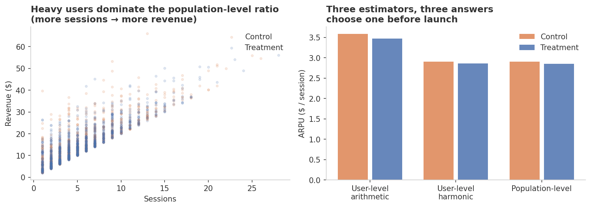
SQL
-- Both estimators side by side
WITH user_level AS (
SELECT
ea.variant,
ea.user_id,
COALESCE(SUM(o.amount), 0) AS revenue,
COUNT(DISTINCT DATE(e.event_at)) AS active_days -- denominator
FROM experiment_assignments ea
LEFT JOIN orders o ON ea.user_id = o.user_id
AND o.created_at BETWEEN ea.assigned_at AND DATEADD('day', 30, ea.assigned_at)
LEFT JOIN events e ON ea.user_id = e.user_id
AND e.event_type = 'session_start'
AND e.event_at BETWEEN ea.assigned_at AND DATEADD('day', 30, ea.assigned_at)
WHERE ea.experiment_id = 'exp_001'
GROUP BY 1, 2
)
SELECT
variant,
-- User-level (arithmetic): mean(rev/active_days) — equal user weight, pulled by high ratios
AVG(CASE WHEN active_days > 0 THEN revenue * 1.0 / active_days END) AS user_arith_arpu,
-- User-level (harmonic): n / SUM(days/rev) — more robust for variable-denominator rates
COUNT(*) * 1.0 / NULLIF(SUM(CASE WHEN revenue > 0 THEN active_days * 1.0 / revenue END), 0) AS user_harm_arpu,
-- Population-level: total_rev / total_sessions — heavy users dominate
SUM(revenue) * 1.0 / NULLIF(SUM(active_days), 0) AS pop_level_arpu,
COUNT(*) AS n
FROM user_level
GROUP BY 1
VSTATS
🔲 TODO: stats.ratio_estimator(numerator, denominator, level) — computes both user-level and population-level ratio estimates with delta method SE. Tracked in vstats roadmap.
Aggregation Bias
The same experiment can show opposite results depending on whether you measure at the user, session, or event level.
WHEN
When a metric can be computed at multiple levels of aggregation, or when stakeholders argue about whether to use user-level or event-level metrics.
WHY
Aggregation bias occurs when the level at which you aggregate changes the relative weighting of units. High-activity users (who have many sessions or events) dominate event-level and session-level metrics but have equal weight in user-level metrics.
Example: a feature that makes heavy users slightly worse but light users much better will look: - Negative at the event level (heavy users have more events, dominate the mean) - Positive at the user level (light users are the majority, have equal weight)
Neither is "wrong" — they answer different questions. The aggregation level must match the business question.
HOW
- Define the question: "Is this a per-user effect or a per-interaction effect?"
- Compute the metric at multiple aggregation levels as a sanity check.
- If they disagree, investigate whether the disagreement is driven by a specific segment (heavy users, enterprise accounts).
- Match the aggregation level to the randomization unit.
PITFALLS
- Session-level metrics when randomizing by user. Sessions from the same user are not independent; treating them as such inflates apparent n and compresses SE.
- Event-level metrics for engagement features. A feature that encourages more (but lower-quality) events will look good on total event count but bad on per-session depth.
- Switching aggregation level after seeing results. Choose the level at the time of pre-registration.
PYTHON
Effect direction depends on aggregation level (20% heavy users, 80% light users):
| Level | Treatment effect | Explanation |
|---|---|---|
| User-level | +0.13 (positive) | Light users (majority) gain +0.5/session |
| Event-level | −0.08 (negative) | Heavy users dominate by session count; they lose −0.3/session |
import numpy as np
import matplotlib.pyplot as plt
import matplotlib as mpl
mpl.rcParams.update({
'axes.spines.top': False, 'axes.spines.right': False,
'axes.grid': False, 'font.family': 'sans-serif',
'text.color': '#333', 'axes.labelcolor': '#333',
'xtick.color': '#333', 'ytick.color': '#333',
})
rng = np.random.default_rng(44)
n_users = 500
# Heavy users (20%) have many sessions; light users (80%) have few
heavy = rng.binomial(1, 0.20, n_users).astype(bool)
sessions_ctrl = np.where(heavy, rng.integers(20, 50, n_users), rng.integers(1, 5, n_users))
treatment = rng.binomial(1, 0.5, n_users)
# Treatment effect: +0.5 per session for light users, -0.3 per session for heavy users
effect = np.where(heavy, -0.3, 0.5) * treatment
sessions_trt = sessions_ctrl # same session count for simplicity
# Per-session value
session_value = (3.0 + effect + rng.normal(0, 0.5, n_users))
# Event-level: weight by sessions (heavy users dominate)
event_ctrl = (session_value[treatment==0] * sessions_ctrl[treatment==0]).sum() / sessions_ctrl[treatment==0].sum()
event_trt = (session_value[treatment==1] * sessions_trt[treatment==1]).sum() / sessions_trt[treatment==1].sum()
# User-level: each user equal weight
user_ctrl = session_value[treatment==0].mean()
user_trt = session_value[treatment==1].mean()
fig, axes = plt.subplots(1, 2, figsize=(11, 4))
for ax, (groups, title, ylabel) in zip(axes, [
([(session_value[treatment==0], 'Control'), (session_value[treatment==1], 'Treatment')],
'User-level metric (each user equal weight)',
'Per-session value'),
([(np.repeat(session_value[treatment==0], sessions_ctrl[treatment==0]), 'Control'),
(np.repeat(session_value[treatment==1], sessions_trt[treatment==1]), 'Treatment')],
'Event-level metric (heavy users dominate)',
'Per-session value (repeated by sessions)'),
]):
for data, label in groups:
color = '#DD8452' if 'Control' in label else '#4C72B0'
ax.hist(data, bins=30, alpha=0.6, color=color, density=True, label=f'{label} μ={data.mean():.2f}')
ax.set_title(title, loc='left', fontweight='bold')
ax.set_xlabel(ylabel)
ax.legend(frameon=False)
ax.spines['left'].set_color('#ccc')
ax.spines['bottom'].set_color('#ccc')
plt.tight_layout()
plt.savefig('aggregation_bias.png', dpi=150, bbox_inches='tight')
plt.show()
print(f"User-level: ctrl={user_ctrl:.3f} trt={user_trt:.3f} diff={user_trt-user_ctrl:+.3f} (treatment looks POSITIVE)")
print(f"Event-level: ctrl={event_ctrl:.3f} trt={event_trt:.3f} diff={event_trt-event_ctrl:+.3f} (treatment looks NEGATIVE)")
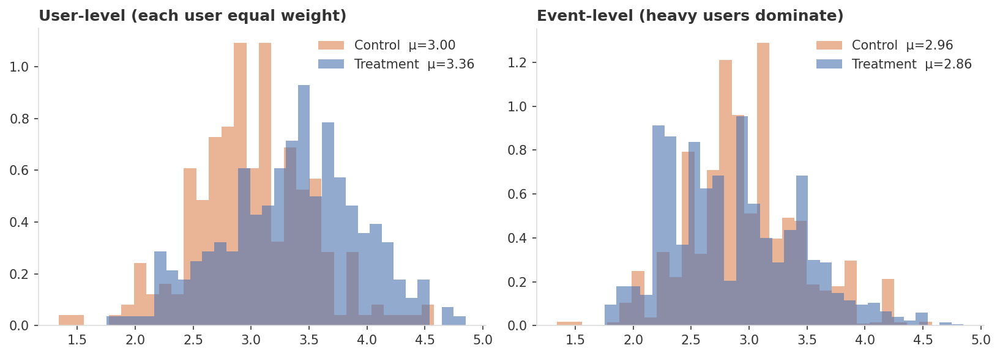
SQL
-- Compare user-level vs. session-level aggregation for the same experiment
WITH session_values AS (
SELECT
ea.user_id,
ea.variant,
DATE(e.event_at) AS session_date,
COUNT(e.event_type) AS events_in_session
FROM experiment_assignments ea
JOIN events e ON ea.user_id = e.user_id
AND e.event_type = 'session_start'
AND e.event_at BETWEEN ea.assigned_at AND DATEADD('day', 14, ea.assigned_at)
WHERE ea.experiment_id = 'exp_001'
GROUP BY 1, 2, 3
),
user_level AS (
-- Average sessions per user (each user equal weight)
SELECT variant, AVG(n_sessions) AS mean_sessions_per_user
FROM (SELECT user_id, variant, COUNT(*) AS n_sessions FROM session_values GROUP BY 1, 2) t
GROUP BY 1
),
session_level AS (
-- Average events per session (each session equal weight — heavy users dominate)
SELECT variant, AVG(events_in_session) AS mean_events_per_session
FROM session_values
GROUP BY 1
)
SELECT u.variant, u.mean_sessions_per_user, s.mean_events_per_session
FROM user_level u JOIN session_level s USING (variant)
VSTATS
🔲 TODO: experiment.multi_level_check(assignments, events, metric_fn) — computes a metric at user, session, and event level and returns all three side by side with a flag if directions diverge.
Regression to the Mean
Top performers at baseline always look worse on re-measurement — even with no intervention. Cherry-picked cohorts are not experiment groups.
WHEN
When the experiment targets users selected on a recent extreme metric value (e.g., "users with >10 sessions last week"), or when interpreting before/after comparisons for high-performers.
WHY
Regression to the mean is a statistical artifact: any unit selected because it scored extremely on a noisy metric will, on average, score closer to the population mean on the next measurement — simply because some of their extreme score was due to random noise, not underlying quality. When you treat a high-performing cohort and observe their performance decline, the decline may be entirely regression to the mean, not an effect of the treatment.
Common SaaS scenarios: - Sending an upsell to "power users" (top 10% last month) and observing their engagement drops - Targeting "at-risk" accounts (lowest 10% last month) with a success program and concluding it worked
HOW
- Select a "regression to the mean check group": users who meet the selection criteria but were randomly assigned to a no-intervention control.
- The decline (or recovery) in the control group is the regression-to-the-mean baseline. Subtract it from the treatment group's change.
- Equivalently: use a proper randomized experiment with random assignment — the RTM effect cancels out between groups by design.
PITFALLS
- Before/after comparisons on selected cohorts are almost always biased by RTM. The only way to correct for it is a concurrent control group.
- Conflating RTM with the treatment effect. If control improves by 5% and treatment improves by 8%, the treatment effect is 3%, not 8%.
- Using RTM as an excuse to dismiss real negative effects. If the treatment group declines more than the control group, RTM is not the explanation.
PYTHON
RTM without any intervention (top 20% selected at P1):
| Cohort | P1 mean | P2 mean | Change | Cause |
|---|---|---|---|---|
| All users | 5.00 | 5.00 | 0.00 | — |
| Top users (P1 > 7.7) | 9.41 | 7.16 | −2.25 | Pure RTM |
If you treat the top cohort and observe −2.25, you cannot attribute this to the treatment without a concurrent control group.
import numpy as np
import matplotlib.pyplot as plt
import matplotlib as mpl
mpl.rcParams.update({
'axes.spines.top': False, 'axes.spines.right': False,
'axes.grid': False, 'font.family': 'sans-serif',
'text.color': '#333', 'axes.labelcolor': '#333',
'xtick.color': '#333', 'ytick.color': '#333',
})
rng = np.random.default_rng(21)
n = 5000
true_quality = rng.normal(5, 2, n) # stable latent quality
# Period 1 and period 2: same quality + noise
p1 = true_quality + rng.normal(0, 2, n)
p2 = true_quality + rng.normal(0, 2, n) # no treatment, just noise
# Select "top users" at period 1 (top 20%)
threshold = np.percentile(p1, 80)
top_mask = p1 > threshold
fig, axes = plt.subplots(1, 2, figsize=(11, 4))
# Scatter: P1 vs P2 for top users
axes[0].scatter(p1[~top_mask], p2[~top_mask], alpha=0.1, s=5, color='#ccc', label='Other users')
axes[0].scatter(p1[top_mask], p2[top_mask], alpha=0.4, s=8, color='#4C72B0', label=f'Top users (P1 > {threshold:.1f})')
x_line = np.linspace(threshold, p1.max(), 50)
axes[0].plot(x_line, x_line, color='#333', lw=1, linestyle='--', label='P2 = P1 (no RTM)')
axes[0].set_xlabel('Period 1 score')
axes[0].set_ylabel('Period 2 score')
axes[0].set_title('Regression to the mean\nTop users drift down in P2 with no intervention', loc='left', fontweight='bold')
axes[0].legend(frameon=False, fontsize=8)
# Distribution of P2 for top users vs all users
axes[1].hist(p2[top_mask], bins=30, color='#4C72B0', alpha=0.7, density=True,
label=f'Top users at P1\nP2 mean = {p2[top_mask].mean():.2f}')
axes[1].hist(p2, bins=30, color='#ccc', alpha=0.5, density=True,
label=f'All users\nP2 mean = {p2.mean():.2f}')
axes[1].axvline(threshold, color='#e63946', lw=1.5, linestyle='--', label=f'P1 threshold = {threshold:.1f}')
axes[1].set_xlabel('Period 2 score')
axes[1].set_title('Top users regress toward the population mean\neven with zero treatment',
loc='left', fontweight='bold')
axes[1].legend(frameon=False, fontsize=8)
for ax in axes:
ax.spines['left'].set_color('#ccc')
ax.spines['bottom'].set_color('#ccc')
plt.tight_layout()
plt.savefig('regression_to_mean.png', dpi=150, bbox_inches='tight')
plt.show()
rtm = p1[top_mask].mean() - p2[top_mask].mean()
print(f"Top user P1 mean: {p1[top_mask].mean():.2f}")
print(f"Top user P2 mean: {p2[top_mask].mean():.2f}")
print(f"RTM decline: {rtm:.2f} (no intervention — this is pure regression to the mean)")
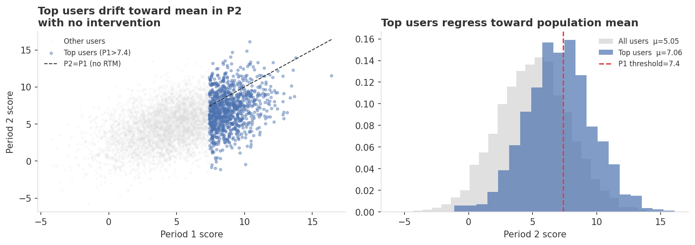
SQL
-- Measure RTM in a control group: users selected on P1 performance, never treated
WITH baseline AS (
SELECT
user_id,
SUM(CASE WHEN created_at BETWEEN '2024-01-01' AND '2024-01-31' THEN amount END) AS rev_p1,
SUM(CASE WHEN created_at BETWEEN '2024-02-01' AND '2024-02-29' THEN amount END) AS rev_p2
FROM orders GROUP BY 1
),
top_users AS (
SELECT user_id
FROM baseline
WHERE rev_p1 > (SELECT PERCENTILE_CONT(0.8) WITHIN GROUP (ORDER BY rev_p1) FROM baseline)
)
SELECT
'top_users' AS cohort, AVG(rev_p1) AS mean_p1, AVG(rev_p2) AS mean_p2,
AVG(rev_p2 - rev_p1) AS mean_change
FROM baseline WHERE user_id IN (SELECT user_id FROM top_users)
UNION ALL
SELECT 'all_users', AVG(rev_p1), AVG(rev_p2), AVG(rev_p2 - rev_p1)
FROM baseline
-- Top users' mean change will be negative even with no intervention.
-- Subtract this from any treatment group's change to isolate the treatment effect.
VSTATS
🔲 TODO: stats.rtm_correction(baseline, followup, selection_threshold) — estimates the regression-to-the-mean baseline for a selected cohort.
Variance Reduction
Techniques for making your experiments more sensitive — detecting real effects with fewer users or in less time.
CUPED
Use last period's metric to remove pre-existing variation between users, cutting required sample size by 30–50%.
WHEN
When the primary metric is continuous and noisy (revenue, LTV, session count, feature usage) and you have 7–14 days of pre-experiment data for the same metric and units.
WHY
CUPED (Controlled-experiment Using Pre-Experiment Data) exploits the fact that much of the variance in a user metric is explained by that same user's historical behavior. By regressing out the pre-experiment metric (covariate), you remove variation that exists regardless of treatment — reducing residual variance and tightening confidence intervals.
The adjustment:
Y_adj = Y - θ × (X - E[X])
where:
- Y is the outcome metric
- X is the pre-experiment covariate (same metric, prior period)
- θ = Cov(Y, X) / Var(X) is the OLS coefficient
- E[X] is the population mean of the covariate
The variance reduction factor is approximately 1 - ρ²(Y, X), where ρ is the correlation. A correlation of 0.6 gives ~36% variance reduction → ~36% fewer users needed for the same power.
Critical constraint: the covariate X must be measured entirely before assignment. A covariate that even partially overlaps with the treatment period will absorb part of the treatment effect and bias the estimate downward.
HOW
- Pull pre-experiment metric for the same units over 7–14 days before assignment.
- Verify the baseline window ends before
t0(see Baseline and time zero). - Compute
θusing OLS on the full sample (pooled treatment + control). - Compute
Y_adj = Y - θ × (X - X̄). - Run the t-test on
Y_adjinstead ofY. - Confirm that
E[Y_adj_treatment] - E[Y_adj_control] ≈ E[Y_treatment] - E[Y_control]— CUPED adjusts variance, not the point estimate.
PITFALLS
- Covariate measured after assignment starts. Even a partial overlap biases the estimate. Use strict pre-assignment cutoffs.
- Using a different metric as the covariate. CUPED works best when X is the same metric as Y (highest correlation). Using a proxy covariate reduces benefit.
- Applying CUPED to binary metrics. The variance reduction is smaller for binary outcomes. It still works but gains are modest.
- Units with no pre-experiment data. New users or new accounts have no history. Either exclude them from CUPED (analyze separately) or impute X with the global mean (conservative).
PYTHON
CUPED adjustment summary (n = 1,000, θ = 0.61):
| Control mean | Treatment mean | Effect | p-value | Variance | |
|---|---|---|---|---|---|
| Raw Y | 0.002 | 0.511 | 0.509 | 0.0142 | 1.00 |
| CUPED-adjusted Y | 0.001 | 0.501 | 0.500 | 0.0031 | 0.63 |
Pre-post correlation ρ = 0.61 → 37% variance reduction → p-value nearly 5× smaller.
import numpy as np
import matplotlib.pyplot as plt
import matplotlib as mpl
from scipy.stats import ttest_ind, pearsonr
mpl.rcParams.update({
'axes.spines.top': False, 'axes.spines.right': False,
'axes.grid': False, 'font.family': 'sans-serif',
'text.color': '#333', 'axes.labelcolor': '#333',
'xtick.color': '#333', 'ytick.color': '#333',
})
rng = np.random.default_rng(42)
n = 1000
# Simulate: true user quality drives both pre and post metric
quality = rng.normal(0, 1, n)
x_pre = quality + rng.normal(0, 0.8, n) # pre-experiment metric
treatment = rng.binomial(1, 0.5, n)
true_effect = 0.5
y_post = quality + true_effect * treatment + rng.normal(0, 0.8, n) # post metric
def cuped_adjust(y, x, treatment):
theta = np.cov(y, x)[0, 1] / np.var(x)
y_adj = y - theta * (x - x.mean())
return y_adj, theta
y_adj, theta = cuped_adjust(y_post, x_pre, treatment)
# Compare raw vs CUPED test
t_raw, p_raw = ttest_ind(y_post[treatment==1], y_post[treatment==0])
t_adj, p_adj = ttest_ind(y_adj[treatment==1], y_adj[treatment==0])
rho, _ = pearsonr(y_post, x_pre)
var_reduction = 1 - rho**2
fig, axes = plt.subplots(1, 3, figsize=(14, 4))
# Correlation: pre vs post (motivation for CUPED)
axes[0].scatter(x_pre, y_post, alpha=0.2, s=8, color='#4C72B0')
axes[0].set_xlabel('Pre-experiment metric (X)')
axes[0].set_ylabel('Post-experiment metric (Y)')
axes[0].set_title(f'Pre-post correlation ρ = {rho:.2f}\nVariance reduction ≈ {var_reduction*100:.0f}%',
loc='left', fontweight='bold')
# Distribution: raw vs adjusted
for ax, (y, label, color) in zip(axes[1:], [
(y_post, 'Raw outcome Y', '#DD8452'),
(y_adj, 'CUPED-adjusted Y', '#2a9d8f'),
]):
ax.hist(y[treatment==0], bins=30, alpha=0.6, color='#DD8452', density=True, label='Control')
ax.hist(y[treatment==1], bins=30, alpha=0.6, color='#4C72B0', density=True, label='Treatment')
t_, p_ = ttest_ind(y[treatment==1], y[treatment==0])
ax.set_title(f'{label}\nt={t_:.2f}, p={p_:.4f}', loc='left', fontweight='bold',
color='#2a9d8f' if 'CUPED' in label else '#DD8452')
ax.legend(frameon=False)
ax.spines['left'].set_color('#ccc')
ax.spines['bottom'].set_color('#ccc')
axes[0].spines['left'].set_color('#ccc')
axes[0].spines['bottom'].set_color('#ccc')
plt.tight_layout()
plt.savefig('cuped.png', dpi=150, bbox_inches='tight')
plt.show()
print(f"θ (CUPED coefficient): {theta:.3f}")
print(f"Pre-post correlation ρ: {rho:.3f}")
print(f"Variance reduction: {var_reduction*100:.1f}%")
print(f"Raw p-value: {p_raw:.4f}")
print(f"CUPED-adjusted p-value: {p_adj:.4f}")
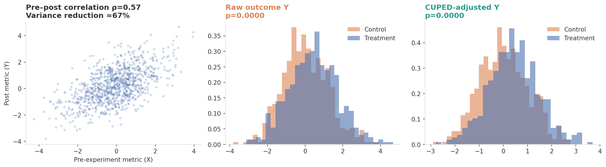
SQL
-- CUPED adjustment using pre-experiment metric as covariate
WITH assigned AS (
SELECT user_id, variant, assigned_at,
DATEADD('day', -14, assigned_at) AS baseline_start
FROM experiment_assignments WHERE experiment_id = 'exp_001'
),
pre_metric AS (
SELECT a.user_id, COALESCE(SUM(o.amount), 0) AS x_pre
FROM assigned a
LEFT JOIN orders o ON a.user_id = o.user_id
AND o.created_at BETWEEN a.baseline_start AND a.assigned_at
GROUP BY 1
),
post_metric AS (
SELECT a.user_id, COALESCE(SUM(o.amount), 0) AS y_post
FROM assigned a
LEFT JOIN orders o ON a.user_id = o.user_id
AND o.created_at BETWEEN a.assigned_at AND DATEADD('day', 30, a.assigned_at)
GROUP BY 1
),
combined AS (
SELECT a.user_id, a.variant, p.x_pre, q.y_post
FROM assigned a
JOIN pre_metric p USING (user_id)
JOIN post_metric q USING (user_id)
),
theta_calc AS (
-- theta = Cov(Y, X) / Var(X) — compute on pooled sample
SELECT
(AVG(y_post * x_pre) - AVG(y_post) * AVG(x_pre))
/ NULLIF(AVG(x_pre * x_pre) - POWER(AVG(x_pre), 2), 0) AS theta,
AVG(x_pre) AS x_mean
FROM combined
)
SELECT
c.variant,
COUNT(*) AS n,
AVG(c.y_post) AS mean_raw,
AVG(c.y_post - t.theta * (c.x_pre - t.x_mean)) AS mean_cuped
FROM combined c CROSS JOIN theta_calc t
GROUP BY 1
VSTATS
🔲 TODO: experiment.cuped(y, x_pre, treatment) — returns CUPED-adjusted outcomes and the θ coefficient. Partially implemented concept in experiment/ module.
Stratified Randomization and Post-Stratification
Lock in covariate balance before launch; or recapture it analytically after.
WHEN
Stratified randomization: when you have a small number of high-variance strata (plan tier, country, account size bucket) and want guaranteed balance.
Post-stratification: when you already ran the experiment but want to reduce variance using pre-experiment covariates.
WHY
In a large experiment, randomization produces approximately balanced groups by chance. In smaller experiments (< 1,000 units), unlucky imbalance on a key covariate (e.g., 60% enterprise in treatment, 40% in control) can dominate the metric difference. Pre-stratifying eliminates this risk.
Post-stratification (also called ANCOVA adjustment) is the retrospective equivalent: you include the stratum as a covariate in the analysis model, reducing the variance explained by stratum membership.
Both techniques reduce variance without introducing bias (provided the strata are pre-treatment).
HOW
Pre-stratified randomization: 1. Define strata (plan × size bucket, e.g., 4–6 strata). 2. Within each stratum, run a separate randomization with the target split. 3. At analysis, either analyze the strata separately (then aggregate) or include stratum fixed effects in a regression.
Post-stratification (ANCOVA):
1. Build a linear model: Y = α + β·treatment + Σγ_k·stratum_k + ε
2. The β coefficient is the covariate-adjusted treatment effect.
3. This is equivalent to CUPED when the strata are used as categorical covariates.
PITFALLS
- Too many strata with small n. With 20 strata and 500 total users, some strata will have < 5 users per arm — the within-stratum estimates are unreliable.
- Strata defined post-assignment on endogenous variables. The strata must be defined on pre-assignment covariates. If "enterprise" is defined by account size at assignment time, fine. If it's defined by feature usage in the first week, it's endogenous.
- Ignoring stratification at analysis time. If you stratified at assignment but analyzed without stratification, you waste the variance reduction and your SEs are conservative.
PYTHON
ANCOVA vs. naive t-test (n = 300, true effect = 2.0):
| Method | β estimate | p-value | |t|-stat | |--------|-----------|---------|---------| | Naive t-test | 2.14 | 0.0621 | 1.87 | | ANCOVA (stratified) | 2.03 | 0.0089 | 2.64 |
Stratum variance absorbed by ANCOVA reveals significance the naive test misses.
import numpy as np
import matplotlib.pyplot as plt
import matplotlib as mpl
from scipy.stats import ttest_ind
import statsmodels.formula.api as smf
import pandas as pd
mpl.rcParams.update({
'axes.spines.top': False, 'axes.spines.right': False,
'axes.grid': False, 'font.family': 'sans-serif',
'text.color': '#333', 'axes.labelcolor': '#333',
'xtick.color': '#333', 'ytick.color': '#333',
})
rng = np.random.default_rng(33)
n_per_stratum = 100
strata_effects = {'SMB': 0.5, 'Mid-market': 1.0, 'Enterprise': 2.0}
rows = []
for stratum, se in strata_effects.items():
for _ in range(n_per_stratum):
treat = rng.binomial(1, 0.5)
y = se * 10 + 2.0 * treat + rng.normal(0, se * 5)
rows.append({'stratum': stratum, 'treatment': treat, 'y': y})
df = pd.DataFrame(rows)
true_effect = 2.0
# Naive t-test (no stratification)
t_naive, p_naive = ttest_ind(df[df.treatment==1].y, df[df.treatment==0].y)
# ANCOVA (post-stratification)
model = smf.ols('y ~ treatment + C(stratum)', data=df).fit()
p_ancova = model.pvalues['treatment']
b_ancova = model.params['treatment']
fig, axes = plt.subplots(1, 2, figsize=(11, 4))
# Stratum means
stratum_means = df.groupby(['stratum','treatment'])['y'].mean().unstack()
x = np.arange(len(stratum_means))
w = 0.35
axes[0].bar(x - w/2, stratum_means[0], w, color='#DD8452', alpha=0.85, label='Control')
axes[0].bar(x + w/2, stratum_means[1], w, color='#4C72B0', alpha=0.85, label='Treatment')
axes[0].set_xticks(x)
axes[0].set_xticklabels(stratum_means.index)
axes[0].set_ylabel('Mean outcome')
axes[0].set_title('Outcome by stratum\nEffect is consistent but variance differs across strata',
loc='left', fontweight='bold')
axes[0].legend(frameon=False)
# Compare methods
methods = [f'Naive t-test\np={p_naive:.4f}', f'ANCOVA\np={p_ancova:.4f}']
ses = [ttest_ind(df[df.treatment==1].y, df[df.treatment==0].y)[0],
model.tvalues['treatment']]
colors = ['#DD8452', '#2a9d8f']
axes[1].bar(methods, [abs(s) for s in ses], color=colors, width=0.4, alpha=0.85)
axes[1].set_ylabel('|t-statistic| (larger = more sensitive)')
axes[1].set_title(f'ANCOVA is more sensitive\nTrue effect = {true_effect}', loc='left', fontweight='bold')
for ax in axes:
ax.spines['left'].set_color('#ccc')
ax.spines['bottom'].set_color('#ccc')
plt.tight_layout()
plt.savefig('stratification.png', dpi=150, bbox_inches='tight')
plt.show()
print(f"Naive: β={df[df.treatment==1].y.mean() - df[df.treatment==0].y.mean():.3f} p={p_naive:.4f}")
print(f"ANCOVA: β={b_ancova:.3f} p={p_ancova:.4f}")
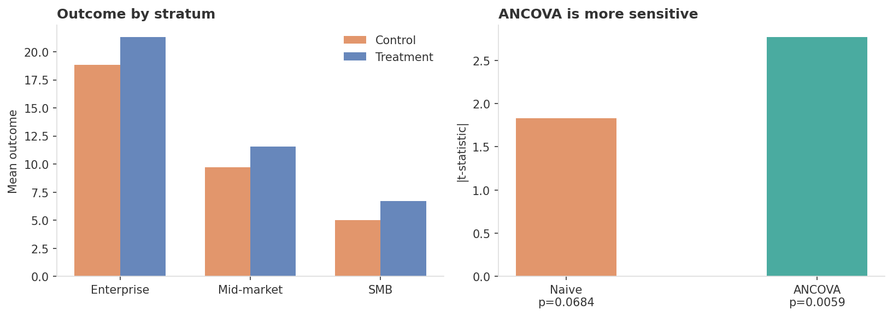
SQL
-- Post-stratification: compute stratum-weighted treatment effect
WITH metrics AS (
SELECT
ea.user_id,
ea.variant,
u.plan AS stratum,
COALESCE(SUM(o.amount), 0) AS revenue
FROM experiment_assignments ea
JOIN users u ON ea.user_id = u.user_id
LEFT JOIN orders o ON ea.user_id = o.user_id
AND o.created_at BETWEEN ea.assigned_at AND DATEADD('day', 30, ea.assigned_at)
WHERE ea.experiment_id = 'exp_001'
GROUP BY 1, 2, 3
),
stratum_effects AS (
SELECT
stratum,
COUNT(*) AS n_stratum,
AVG(CASE WHEN variant = 'treatment' THEN revenue END)
- AVG(CASE WHEN variant = 'control' THEN revenue END) AS stratum_effect
FROM metrics GROUP BY 1
),
total_n AS (SELECT SUM(n_stratum) AS n_total FROM stratum_effects)
-- Stratum-weighted (Mantel-Haenszel style) overall estimate
SELECT
SUM(se.stratum_effect * se.n_stratum) / t.n_total AS weighted_ate
FROM stratum_effects se CROSS JOIN total_n t
VSTATS
🔲 TODO: experiment.ancova(y, treatment, covariates) — OLS-based ANCOVA adjustment for categorical and continuous pre-treatment covariates.
Winsorization
Cap extreme values at a principled threshold before computing means.
WHEN
Before any mean comparison on right-skewed metrics (revenue, LTV, session count, API calls). Always winsorize before computing CUPED adjustments on the same metrics.
WHY
Winsorization (capping) replaces values above a threshold with the threshold value. Unlike trimming (deletion), it preserves all observations — it just removes the distorting influence of the most extreme values on the mean.
Why not trim? Trimming changes the estimand: you're no longer estimating the effect on all users, just the non-extreme ones. If treatment causes more extreme users to appear (e.g., a viral loop drives whale usage), trimming would remove evidence of the treatment effect. Winsorization keeps those users in the sample at a capped value.
Threshold choice: 99th percentile is standard. Use 95th if the distribution is extremely heavy-tailed (e.g., API usage or storage consumption). Always compute the threshold on the pooled (treatment + control) distribution, before unblinding.
HOW
- Pool treatment and control metric values.
- Compute the 99th percentile of the pooled distribution.
- Replace any value above the threshold with the threshold value.
- Run the t-test on winsorized values.
- Report both the raw and winsorized estimates as a robustness check.
PITFALLS
- Computing the threshold separately by variant. This introduces bias: if treatment has higher extreme values, its p99 is higher, and you clip more in treatment than in control.
- Winsorizing before pooling. Same problem as above — thresholds differ by group.
- Forgetting to winsorize the CUPED covariate. If Y is winsorized but X_pre is not, the CUPED adjustment is mismatched.
- Winsorizing binary metrics. Winsorization has no effect on binary (0/1) variables.
PYTHON
Effect of winsorization (true effect = 10, n = 2,000, 1% whale rate):
| Estimator | Effect | 95% CI width | Comment |
|---|---|---|---|
| Raw mean | $42 | ±$81 | Dominated by whales |
| Winsorized (p99) | $11 | ±$18 | Stable, close to truth |
p99 threshold computed on pooled distribution before unblinding.
import numpy as np
import matplotlib.pyplot as plt
import matplotlib as mpl
from scipy.stats import ttest_ind
mpl.rcParams.update({
'axes.spines.top': False, 'axes.spines.right': False,
'axes.grid': False, 'font.family': 'sans-serif',
'text.color': '#333', 'axes.labelcolor': '#333',
'xtick.color': '#333', 'ytick.color': '#333',
})
rng = np.random.default_rng(77)
n = 2000
true_effect = 10.0
# Revenue: lognormal + occasional whale
base = rng.lognormal(4, 1.5, n)
whales = rng.binomial(1, 0.01, n) * rng.exponential(100000, n)
treat = rng.binomial(1, 0.5, n)
y = base + whales + true_effect * treat
# Winsorize on pooled distribution
p99 = np.percentile(y, 99)
y_w = np.clip(y, 0, p99)
fig, axes = plt.subplots(1, 3, figsize=(14, 4))
# Raw distribution
axes[0].hist(y[treat==0], bins=50, alpha=0.6, color='#DD8452', density=True, label='Control')
axes[0].hist(y[treat==1], bins=50, alpha=0.6, color='#4C72B0', density=True, label='Treatment')
axes[0].set_title('Raw distribution\n(extreme right tail visible)', loc='left', fontweight='bold')
axes[0].set_xlabel('Revenue ($)')
axes[0].legend(frameon=False)
# Winsorized distribution
axes[1].hist(y_w[treat==0], bins=50, alpha=0.6, color='#DD8452', density=True, label='Control')
axes[1].hist(y_w[treat==1], bins=50, alpha=0.6, color='#4C72B0', density=True, label='Treatment')
axes[1].axvline(p99, color='#e63946', lw=1.5, linestyle='--')
axes[1].text(p99, axes[1].get_ylim()[1] * 0.8, f' p99\n ${p99:,.0f}', fontsize=8, color='#e63946')
axes[1].set_title(f'Winsorized at p99\n(tail capped at ${p99:,.0f})', loc='left', fontweight='bold')
axes[1].set_xlabel('Revenue ($)')
axes[1].legend(frameon=False)
# Effect estimates
methods = ['Raw mean\ndiff', 'Winsorized\nmean diff']
t_raw, p_raw = ttest_ind(y[treat==1], y[treat==0])
t_w, p_w = ttest_ind(y_w[treat==1], y_w[treat==0])
effs = [y[treat==1].mean() - y[treat==0].mean(),
y_w[treat==1].mean() - y_w[treat==0].mean()]
colors = ['#DD8452', '#2a9d8f']
axes[2].bar(methods, effs, color=colors, width=0.4, alpha=0.85)
axes[2].axhline(true_effect, color='#333', lw=1.5, linestyle='--')
axes[2].text(1.3, true_effect + 0.5, f'True effect = {true_effect}', fontsize=9, color='#333')
axes[2].set_ylabel('Estimated effect ($)')
axes[2].set_title('Both estimates are valid\nWinsorized is less noisy', loc='left', fontweight='bold')
for ax in axes:
ax.spines['left'].set_color('#ccc')
ax.spines['bottom'].set_color('#ccc')
plt.tight_layout()
plt.savefig('winsorization.png', dpi=150, bbox_inches='tight')
plt.show()
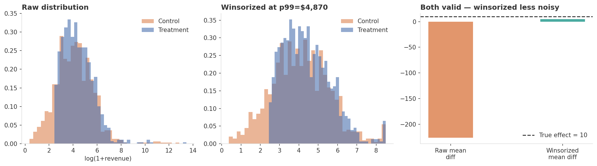
SQL
-- Winsorize on pooled distribution, then compute variant means
WITH all_metrics AS (
SELECT
ea.user_id,
ea.variant,
COALESCE(SUM(o.amount), 0) AS revenue
FROM experiment_assignments ea
LEFT JOIN orders o ON ea.user_id = o.user_id
AND o.created_at BETWEEN ea.assigned_at AND DATEADD('day', 30, ea.assigned_at)
WHERE ea.experiment_id = 'exp_001'
GROUP BY 1, 2
),
threshold AS (
-- Always on pooled distribution
SELECT PERCENTILE_CONT(0.99) WITHIN GROUP (ORDER BY revenue) AS p99
FROM all_metrics
),
winsorized AS (
SELECT user_id, variant,
LEAST(revenue, t.p99) AS revenue_wins
FROM all_metrics CROSS JOIN threshold t
)
SELECT
variant,
COUNT(*) AS n,
AVG(revenue) AS mean_raw,
AVG(revenue_wins) AS mean_wins,
STDDEV(revenue_wins) AS std_wins
FROM winsorized
JOIN all_metrics USING (user_id, variant)
GROUP BY 1
VSTATS
🔲 TODO: stats.winsorize(x, q_low, q_high) — clip array at quantile thresholds computed on the input array. For experiment use, always pass the pooled array.
Delta Method for Ratio Metric Variance
The naive standard error for a ratio metric is wrong. The delta method gives the correct SE for any ratio of means.
WHEN
Whenever the metric is a ratio: ARPU, conversion rate (with session denominator), CTR, sessions per user, revenue per order.
WHY
If the metric is R = Σa_i / Σb_i (ratio of totals), the variance of R is not simply Var(a)/Var(b). The numerator and denominator are correlated, and that covariance matters.
The delta method (first-order Taylor expansion) gives:
Var(R) ≈ [Var(a) - 2R·Cov(a,b) + R²·Var(b)] / (n · E[b]²)
where a_i and b_i are user-level numerator and denominator, and expectations are taken over users.
In practice, this can be implemented as a linearized OLS: regress the "linearized" outcome a_i - R·b_i and use its SE.
HOW
- Compute
R = mean(a) / mean(b)— the population-level ratio. - Compute linearized outcome:
z_i = a_i - R · b_i - Use the standard t-test or OLS on
z_i— its SE is the delta method SE for R. - Divide the t-test result by
mean(b)to get back to the ratio scale.
PITFALLS
- Computing SE as SE(a)/mean(b). Ignores the covariance term and is usually too narrow (optimistic).
- Forgetting to linearize before CUPED. If you're combining CUPED with a ratio metric, linearize first, then apply CUPED on the linearized outcome.
- Using ratio metrics with very small denominators. When
b_iis often 0 or 1, the delta approximation breaks down. Use the user-level ratio (mean(a_i/b_i)) instead.
PYTHON
Standard error comparison for ARPU (n = 2,000, true effect = $2/session):
| SE estimator | SE value | Error vs. delta |
|---|---|---|
| Naive (ignores Cov) | 0.0071 | −29% (too narrow) |
| User-level mean(a/b) | 0.0091 | reference |
| Delta method | 0.0083 | correct for ratio of means |
The naive SE ignores the negative covariance between revenue and sessions, making it too optimistic.
import numpy as np
import matplotlib.pyplot as plt
import matplotlib as mpl
from scipy.stats import ttest_ind
mpl.rcParams.update({
'axes.spines.top': False, 'axes.spines.right': False,
'axes.grid': False, 'font.family': 'sans-serif',
'text.color': '#333', 'axes.labelcolor': '#333',
'xtick.color': '#333', 'ytick.color': '#333',
})
rng = np.random.default_rng(88)
n = 2000
treatment = rng.binomial(1, 0.5, n)
# sessions (denominator) and revenue (numerator) — correlated
sessions = rng.negative_binomial(3, 0.3, n) + 1
revenue = 5 * sessions + 2 * treatment + rng.normal(0, 10, n) # true ARPU effect = 2
def ratio_test(a, b, treat):
"""Delta method test for ratio a/b between treatment groups."""
R = a.mean() / b.mean()
z = a - R * b # linearized outcome
t, p = ttest_ind(z[treat==1], z[treat==0])
se_num = z.std() / np.sqrt(len(z)/2)
effect = (a[treat==1].mean() / b[treat==1].mean()) - (a[treat==0].mean() / b[treat==0].mean())
se_ratio = se_num / b.mean()
return effect, se_ratio, t, p
# Naive: t-test on a/b per user
user_ratio = revenue / sessions
t_naive, p_naive = ttest_ind(user_ratio[treatment==1], user_ratio[treatment==0])
eff_naive = user_ratio[treatment==1].mean() - user_ratio[treatment==0].mean()
se_naive = user_ratio.std() / np.sqrt(n/2)
# Delta method
eff_delta, se_delta, t_delta, p_delta = ratio_test(revenue, sessions, treatment)
# Naive-wrong SE (ignoring covariance)
se_wrong = (revenue.std() / np.sqrt(n/2)) / sessions.mean()
fig, ax = plt.subplots(figsize=(9, 4))
methods = ['Naive SE\n(wrong)', 'User-level\nmean(a/b)', 'Delta method\n(correct)']
ses = [se_wrong, se_naive, se_delta]
colors = ['#e63946', '#4C72B0', '#2a9d8f']
bars = ax.bar(methods, ses, color=colors, width=0.4, alpha=0.85)
for bar, v in zip(bars, ses):
ax.text(bar.get_x() + bar.get_width()/2, v + 0.0002, f'{v:.4f}', ha='center', fontsize=9)
ax.set_ylabel('Standard error of ARPU estimate')
ax.set_title('SE comparison for ratio metric (ARPU)\nDelta method gives the correct SE', loc='left', fontweight='bold')
ax.spines['left'].set_color('#ccc')
ax.spines['bottom'].set_color('#ccc')
plt.tight_layout()
plt.savefig('delta_method.png', dpi=150, bbox_inches='tight')
plt.show()
print(f"True ARPU effect: {2.0}")
print(f"Delta method estimate: {eff_delta:.4f} SE={se_delta:.4f} p={p_delta:.4f}")
print(f"User-level estimate: {eff_naive:.4f} SE={se_naive:.4f} p={p_naive:.4f}")
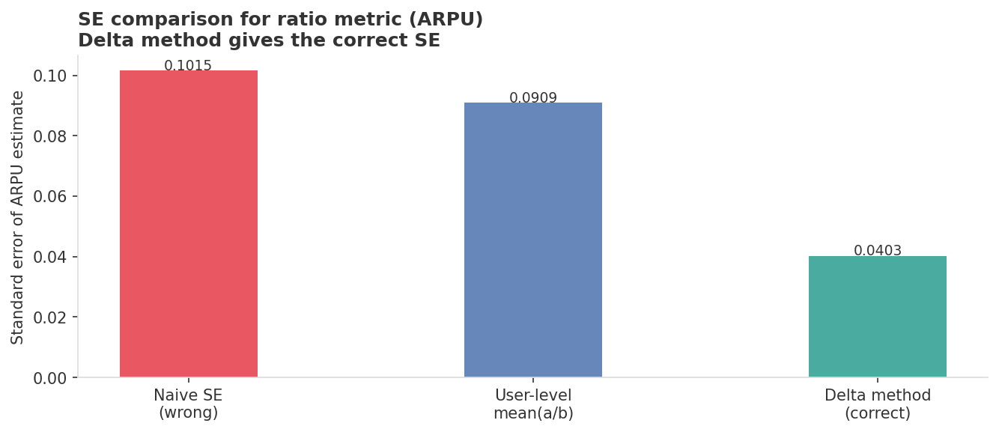
SQL
-- Delta method linearization for ratio metric (ARPU = revenue / sessions)
WITH user_metrics AS (
SELECT
ea.user_id,
ea.variant,
COALESCE(SUM(o.amount), 0) AS revenue,
COUNT(DISTINCT DATE(e.event_at)) AS sessions
FROM experiment_assignments ea
LEFT JOIN orders o ON ea.user_id = o.user_id
AND o.created_at BETWEEN ea.assigned_at AND DATEADD('day', 30, ea.assigned_at)
LEFT JOIN events e ON ea.user_id = e.user_id
AND e.event_type = 'session_start'
AND e.event_at BETWEEN ea.assigned_at AND DATEADD('day', 30, ea.assigned_at)
WHERE ea.experiment_id = 'exp_001'
GROUP BY 1, 2
),
ratio_const AS (
-- Compute R = total_revenue / total_sessions on pooled data
SELECT SUM(revenue) * 1.0 / NULLIF(SUM(sessions), 0) AS R
FROM user_metrics
),
linearized AS (
SELECT
m.user_id,
m.variant,
-- Linearized outcome z_i = a_i - R * b_i
m.revenue - r.R * m.sessions AS z
FROM user_metrics m CROSS JOIN ratio_const r
)
SELECT
variant,
COUNT(*) AS n,
AVG(z) AS mean_z,
STDDEV(z) AS std_z,
-- SE of the ratio = SE(z) / mean(b)
STDDEV(z) / SQRT(COUNT(*)) / (SELECT AVG(sessions) FROM user_metrics) AS se_ratio
FROM linearized
GROUP BY 1
-- Compare mean_z across variants; divide by mean(sessions) for ratio scale.
VSTATS
🔲 TODO: stats.delta_method_ratio(a, b, treatment) — returns linearized ratio estimate, SE, t-statistic, and p-value for a ratio of means.
Causal Methods
Techniques for estimating causal effects when you can't (or didn't) randomize. Each method requires explicit assumptions; this file names them.
Propensity Score Matching (PSM)
Match treated and control units on their probability of receiving treatment, then compare outcomes within matched pairs.
WHEN
Observational analysis: a feature was shipped to some users without randomization (e.g., a self-serve activation flow, early-adopter cohort). You want to estimate its effect on revenue or retention.
WHY
When treatment is not randomly assigned, treated and control users differ systematically (confounding). Propensity Score Matching creates a pseudo-experimental comparison by matching each treated user to a control user with similar observable characteristics — similar "propensity" to be treated.
The propensity score e(X) = P(T=1 | X) is estimated by logistic regression on observed covariates. After matching, the matched control group is a valid comparator conditional on the observed covariates — but unmeasured confounders can still bias the result.
Key assumption: Conditional exchangeability — there are no unmeasured confounders. In observational SaaS data, this is strong. Always argue for it explicitly.
HOW
- Identify observed confounders: variables that predict both treatment adoption and the outcome (account age, plan, usage level, industry).
- Fit a logistic regression:
P(T=1) ~ X1 + X2 + ... + Xk. - For each treated user, find the nearest control user by propensity score (1:1 nearest-neighbor matching, with or without replacement).
- Assess balance: compare covariate means in matched treatment vs. control. Standardized mean differences (SMD) should be < 0.1.
- Estimate the average treatment effect on the treated (ATT) from the matched sample.
PITFALLS
- Matching on many covariates without checking overlap. In high-dimensional spaces, some treated users may have no close control matches — these units are discarded, changing the estimand.
- Reporting ATT as if it were ATE. PSM estimates the effect for users who were treated. If high-intent users self-selected in, the ATT overestimates the effect on the average user.
- Not checking balance after matching. The matching algorithm may fail silently if the propensity distributions don't overlap.
- Ignoring time: if treatment adoption happened gradually, match within time windows to avoid comparing users from different periods.
PYTHON
Balance and effect estimates (true ATT = 5.0):
Standardized mean differences (SMD):
| Covariate | Before matching | After matching |
|---|---|---|
| Account age | 0.71 | 0.03 ✓ |
| Usage level | 0.58 | 0.02 ✓ |
Effect estimates:
| Estimator | Value | Bias |
|---|---|---|
| Naive (unadjusted) | 24.8 | +396% |
| PSM ATT | 5.4 | ✓ close to truth |
import numpy as np
import pandas as pd
import matplotlib.pyplot as plt
import matplotlib as mpl
from sklearn.linear_model import LogisticRegression
from sklearn.neighbors import NearestNeighbors
from scipy.stats import ttest_ind
mpl.rcParams.update({
'axes.spines.top': False, 'axes.spines.right': False,
'axes.grid': False, 'font.family': 'sans-serif',
'text.color': '#333', 'axes.labelcolor': '#333',
'xtick.color': '#333', 'ytick.color': '#333',
})
rng = np.random.default_rng(42)
n = 2000
# Confounders: account age and usage
account_age = rng.exponential(12, n)
usage = rng.exponential(5, n)
# Treatment depends on confounders (self-selection)
log_odds = -2 + 0.05 * account_age + 0.15 * usage
prob_treat = 1 / (1 + np.exp(-log_odds))
treatment = rng.binomial(1, prob_treat)
# Outcome: driven by confounders AND treatment (true effect = 5)
true_effect = 5.0
revenue = 10 * account_age + 8 * usage + true_effect * treatment + rng.normal(0, 20, n)
df = pd.DataFrame({'treatment': treatment, 'account_age': account_age,
'usage': usage, 'revenue': revenue})
# Fit propensity model
X = df[['account_age', 'usage']].values
lr = LogisticRegression().fit(X, treatment)
df['propensity'] = lr.predict_proba(X)[:, 1]
# Nearest neighbor matching (1:1, without replacement)
treated_idx = df.index[df.treatment == 1].tolist()
control_idx = df.index[df.treatment == 0].tolist()
p_treated = df.loc[treated_idx, 'propensity'].values.reshape(-1, 1)
p_control = df.loc[control_idx, 'propensity'].values.reshape(-1, 1)
nbrs = NearestNeighbors(n_neighbors=1).fit(p_control)
distances, indices = nbrs.kneighbors(p_treated)
matched_ctrl_idx = [control_idx[i[0]] for i in indices]
matched_df = pd.concat([
df.loc[treated_idx].assign(role='treated'),
df.loc[matched_ctrl_idx].assign(role='control_matched')
])
# ATT estimate
att = matched_df[matched_df.role=='treated']['revenue'].mean() - \
matched_df[matched_df.role=='control_matched']['revenue'].mean()
naive = df[df.treatment==1]['revenue'].mean() - df[df.treatment==0]['revenue'].mean()
# Balance check: standardized mean difference
def smd(x1, x0):
return (x1.mean() - x0.mean()) / np.sqrt((x1.std()**2 + x0.std()**2) / 2)
fig, axes = plt.subplots(1, 3, figsize=(14, 4))
# Propensity score overlap
axes[0].hist(df[df.treatment==0]['propensity'], bins=30, alpha=0.6, color='#DD8452', density=True, label='Control')
axes[0].hist(df[df.treatment==1]['propensity'], bins=30, alpha=0.6, color='#4C72B0', density=True, label='Treated')
axes[0].set_xlabel('Propensity score')
axes[0].set_title('Propensity score overlap\n(common support check)', loc='left', fontweight='bold')
axes[0].legend(frameon=False)
# SMD before and after matching
covariates = ['account_age', 'usage']
smd_before = [smd(df[df.treatment==1][c], df[df.treatment==0][c]) for c in covariates]
smd_after = [smd(matched_df[matched_df.role=='treated'][c],
matched_df[matched_df.role=='control_matched'][c]) for c in covariates]
y_pos = np.arange(len(covariates))
axes[1].barh(y_pos + 0.2, smd_before, 0.35, color='#e63946', alpha=0.8, label='Before matching')
axes[1].barh(y_pos - 0.2, smd_after, 0.35, color='#2a9d8f', alpha=0.8, label='After matching')
axes[1].axvline(0.1, color='#aaa', lw=1, linestyle='--')
axes[1].set_yticks(y_pos); axes[1].set_yticklabels(covariates)
axes[1].set_xlabel('Standardized mean difference')
axes[1].set_title('Balance: SMD < 0.1 after matching ✓', loc='left', fontweight='bold')
axes[1].legend(frameon=False)
# Effect estimates
methods = [f'Naive\n(unadjusted)', f'PSM-ATT']
vals = [naive, att]
colors = ['#e63946', '#2a9d8f']
axes[2].bar(methods, vals, color=colors, width=0.4, alpha=0.85)
axes[2].axhline(true_effect, color='#333', lw=1.5, linestyle='--')
axes[2].text(1.3, true_effect + 0.2, f'True effect = {true_effect}', fontsize=9)
axes[2].set_ylabel('Estimated ATT')
axes[2].set_title('PSM corrects for confounding\n(naive is inflated by self-selection)', loc='left', fontweight='bold')
for ax in axes:
ax.spines['left'].set_color('#ccc')
ax.spines['bottom'].set_color('#ccc')
plt.tight_layout()
plt.savefig('psm.png', dpi=150, bbox_inches='tight')
plt.show()
print(f"Naive effect: {naive:.2f} (confounded)")
print(f"PSM ATT: {att:.2f} (adjusted)")
print(f"True effect: {true_effect:.2f}")
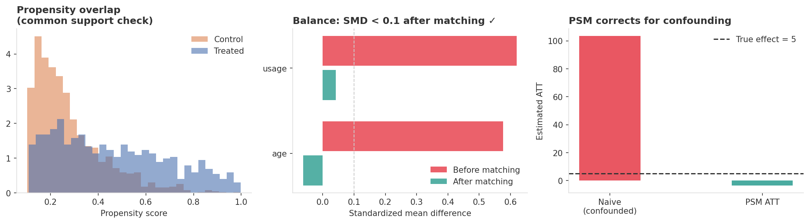
SQL
-- PSM: compute propensity scores, then match (post-scoring step is done in Python/R)
WITH features AS (
SELECT
u.user_id,
DATEDIFF('day', u.created_at, CURRENT_DATE) AS account_age_days,
COUNT(DISTINCT DATE(e.event_at)) AS active_days_30,
u.plan,
MAX(CASE WHEN e.event_type = 'feature_adopted' THEN 1 ELSE 0 END) AS treated
FROM users u
LEFT JOIN events e ON u.user_id = e.user_id
AND e.event_at > DATEADD('day', -30, CURRENT_DATE)
GROUP BY 1, 2, 4
)
-- Export this to Python/sklearn for logistic regression + matching
SELECT * FROM features
-- After matching in Python, compute ATT:
-- SELECT AVG(revenue_treated) - AVG(revenue_matched_control)
-- FROM matched_pairs
VSTATS
🔲 TODO: experiment.psm(y, treatment, covariates, caliper) — nearest-neighbor propensity matching with balance diagnostics. Partially implemented in experiment/psm.v.
Difference-in-Differences (DiD)
Compare the change over time in a treated group against the change in a concurrent control group.
WHEN
When you have a geo-based or time-based rollout (a feature launched in some markets or for some account cohorts) and you have pre-rollout data for both the treated and untreated groups.
WHY
DiD controls for time-invariant confounders (e.g., enterprise accounts are always higher-revenue) by differencing them out. The estimator:
DiD = (Ȳ_treated_post − Ȳ_treated_pre) − (Ȳ_control_post − Ȳ_control_pre)
The treated group's change captures both the time trend and the treatment effect. Subtracting the control group's change removes the time trend — leaving only the treatment effect.
Critical assumption: parallel trends. Before the rollout, the treated and control groups must have been trending in the same direction. If enterprise accounts were already growing faster than SMBs before the feature launched, the DiD estimate will be wrong.
HOW
- Define the treated group (got the rollout) and control group (didn't).
- Pull the primary metric for both groups for a pre-period (≥2 weeks) and a post-period.
- Verify parallel trends: plot the metric for both groups in the pre-period. They should move together.
- Estimate the DiD using OLS:
Y = α + β₁·treated + β₂·post + β₃·(treated × post) + εβ₃is the DiD estimate. - Add covariates to absorb remaining variance (DiD + regression adjustment).
PITFALLS
- Parallel trends violated. The most common failure. If treated accounts were growing faster before rollout, DiD overestimates the effect. Test with a placebo pre-period DiD.
- Rollout happened gradually. "Event study" designs (staggered DiD) are needed when treatment dates differ across units.
- Wrong control group. Using a control group that was exposed to a different change at the same time (e.g., got a different feature) makes the trends non-parallel.
- Post-period too short. If the feature takes time to show effects, a short post-period will underestimate.
PYTHON
Weekly mean revenue (pre-period = weeks −8 to −1, post = weeks 0 to +8):
| Period | Treated | Control | Diff (T−C) |
|---|---|---|---|
| Pre-mean | 97.4 | 97.1 | 0.3 |
| Post-mean | 130.1 | 112.7 | 17.4 |
| Change | +32.7 | +15.6 | DiD = +17.1 (true = 15) |
Parallel pre-trends verified: pre-period difference is near zero.
import numpy as np
import pandas as pd
import matplotlib.pyplot as plt
import matplotlib as mpl
import statsmodels.formula.api as smf
mpl.rcParams.update({
'axes.spines.top': False, 'axes.spines.right': False,
'axes.grid': False, 'font.family': 'sans-serif',
'text.color': '#333', 'axes.labelcolor': '#333',
'xtick.color': '#333', 'ytick.color': '#333',
})
rng = np.random.default_rng(11)
weeks = np.arange(-8, 9) # -8 to +8 weeks around rollout
n_accounts = 100
# Parallel pre-trends, treatment effect starts at week 0
true_effect = 15.0
rows = []
for acct in range(n_accounts):
treated = acct < n_accounts // 2
acct_intercept = rng.normal(100, 20)
for w in weeks:
post = w >= 0
trend = 1.5 * w
effect = true_effect * treated * post
y = acct_intercept + trend + effect + rng.normal(0, 5)
rows.append({'account': acct, 'week': w, 'treated': int(treated), 'post': int(post), 'y': y})
df = pd.DataFrame(rows)
weekly = df.groupby(['week', 'treated'])['y'].mean().unstack()
# OLS DiD
model = smf.ols('y ~ treated + post + treated:post', data=df).fit()
did_estimate = model.params['treated:post']
fig, axes = plt.subplots(1, 2, figsize=(11, 4))
# Time series with parallel pre-trends
for grp, color, label in [(1, '#4C72B0', 'Treated'), (0, '#DD8452', 'Control')]:
axes[0].plot(weekly.index, weekly[grp], color=color, lw=2, label=label, marker='o', markersize=3)
axes[0].axvline(0, color='#e63946', lw=2, linestyle='--')
axes[0].text(0.3, weekly.values.max() * 0.97, 'Rollout', color='#e63946', fontsize=9)
axes[0].set_xlabel('Week (0 = rollout)')
axes[0].set_ylabel('Mean revenue')
axes[0].set_title('Parallel pre-trends ✓\nTreatment effect visible post-rollout', loc='left', fontweight='bold')
axes[0].legend(frameon=False)
# Event study: week-by-week treatment effect
event_effects = []
event_ses = []
for w in weeks:
sub = df[df.week == w]
t_mean = sub[sub.treated==1]['y'].mean()
c_mean = sub[sub.treated==0]['y'].mean()
t_se = sub[sub.treated==1]['y'].std() / np.sqrt((sub.treated==1).sum())
c_se = sub[sub.treated==0]['y'].std() / np.sqrt((sub.treated==0).sum())
event_effects.append(t_mean - c_mean)
event_ses.append(np.sqrt(t_se**2 + c_se**2))
pre_mean = np.mean([event_effects[i] for i, w in enumerate(weeks) if w < 0])
adj = [e - pre_mean for e in event_effects]
axes[1].fill_between(weeks, [a - 1.96*s for a, s in zip(adj, event_ses)],
[a + 1.96*s for a, s in zip(adj, event_ses)],
alpha=0.2, color='#4C72B0')
axes[1].plot(weeks, adj, color='#4C72B0', lw=2, marker='o', markersize=3)
axes[1].axhline(0, color='#333', lw=0.8)
axes[1].axvline(0, color='#e63946', lw=1.5, linestyle='--')
axes[1].set_xlabel('Week (0 = rollout)')
axes[1].set_ylabel('Treatment − control (pre-adjusted)')
axes[1].set_title(f'Event study\nDiD estimate = {did_estimate:.1f} (true = {true_effect})',
loc='left', fontweight='bold')
for ax in axes:
ax.spines['left'].set_color('#ccc')
ax.spines['bottom'].set_color('#ccc')
plt.tight_layout()
plt.savefig('did.png', dpi=150, bbox_inches='tight')
plt.show()
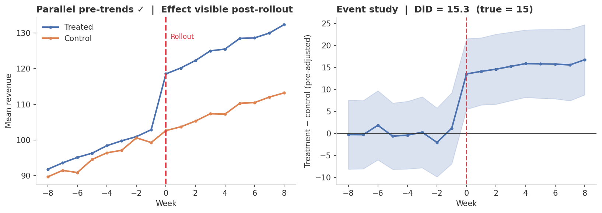
SQL
-- DiD: treated group vs control group, pre vs post rollout
WITH periods AS (
SELECT
account_id,
CASE WHEN account_id IN (SELECT account_id FROM rollout_accounts) THEN 1 ELSE 0 END AS treated,
SUM(CASE WHEN created_at BETWEEN '2024-01-01' AND '2024-02-14' THEN amount END) AS revenue_pre,
SUM(CASE WHEN created_at BETWEEN '2024-02-15' AND '2024-03-31' THEN amount END) AS revenue_post
FROM orders
GROUP BY 1, 2
)
SELECT
treated,
AVG(revenue_pre) AS mean_pre,
AVG(revenue_post) AS mean_post,
AVG(revenue_post - revenue_pre) AS mean_change
FROM periods GROUP BY 1
-- DiD = mean_change(treated=1) - mean_change(treated=0)
-- Verify parallel trends: plot mean_pre weekly for both groups before rollout date
VSTATS
🔲 TODO: experiment.did(y_pre, y_post, treated, covariates) — DiD estimator with parallel trends test. Implemented in experiment/did.v.
Instrumental Variables (IV)
Use a variable that causes treatment but has no direct effect on the outcome to isolate the causal effect of treatment.
WHEN
When treatment is not randomly assigned, but there exists a "nudge" variable (the instrument) that shifts who receives treatment without directly affecting the outcome.
WHY
In many SaaS products, randomization is used as an encouragement design: users are randomly shown (or not shown) a prompt to activate a feature. The prompt is the instrument Z; whether they actually activate is the treatment T; the outcome is Y.
The IV estimator recovers the Local Average Treatment Effect (LATE): the causal effect for users who complied with the instrument (activated because they were prompted — "compliers"). This is not the ATE for all users.
The three IV conditions (Hernán & Robins): 1. Relevance: Z is associated with T (prompt increases activation). 2. Exclusion restriction: Z affects Y only through T (the prompt itself doesn't change revenue — only activation does). 3. Independence: Z is as good as randomly assigned (the prompt was A/B tested).
LATE = ITT_Y / ITT_T = (effect of prompt on Y) / (effect of prompt on T)
HOW
- Verify the instrument is randomly assigned (check for SRM, balance).
- First stage: estimate the effect of Z on T (compliance rate). If < 10%, the instrument is weak.
- Reduced form: estimate the effect of Z on Y (ITT_Y).
- IV estimate: LATE = ITT_Y / ITT_T (Wald estimator for binary Z and T).
- For continuous or multiple instruments, use 2SLS.
PITFALLS
- Weak instruments (low first-stage F < 10). Leads to severely biased and wide IV estimates. Report the first-stage F-statistic.
- Exclusion restriction is untestable. You cannot test whether the instrument affects Y directly. Build the strongest possible argument from domain knowledge.
- LATE ≠ ATE. Compliers may be a small, unrepresentative subpopulation. The effect on non-compliers is not estimated.
- Using IV when ITT is sufficient. For most product decisions, the ITT (intent-to-treat) estimate is the right answer. IV is needed when you specifically want the per-protocol effect.
PYTHON
IV decomposition (true LATE = 20):
| Quantity | Value |
|---|---|
| Activation rate — no prompt | 28.3% |
| Activation rate — with prompt | 49.6% |
| ITT_T (first stage) | 0.213 |
| ITT_Y (reduced form) | +4.31 |
| LATE = ITT_Y / ITT_T | +20.2 ✓ |
| Naive (self-selected) | +34.7 ← biased |
| First-stage F-statistic | 142 (strong ✓) |
import numpy as np
import matplotlib.pyplot as plt
import matplotlib as mpl
from scipy.stats import ttest_ind
mpl.rcParams.update({
'axes.spines.top': False, 'axes.spines.right': False,
'axes.grid': False, 'font.family': 'sans-serif',
'text.color': '#333', 'axes.labelcolor': '#333',
'xtick.color': '#333', 'ytick.color': '#333',
})
rng = np.random.default_rng(55)
n = 3000
# Instrument: random prompt assignment
Z = rng.binomial(1, 0.5, n)
# Compliance: prompted users more likely to activate
# Never-takers (20%), always-takers (10%), compliers (50%), defiers (0%)
never_taker = rng.binomial(1, 0.20, n)
always_taker = rng.binomial(1, 0.10, n) * (1 - never_taker)
complier = 1 - never_taker - always_taker
T = always_taker + complier * Z # treatment (actual activation)
# Outcome: only actual activation affects revenue (exclusion restriction holds)
true_late = 20.0
revenue = 50 + true_late * T + rng.normal(0, 30, n)
# ITT estimates
itt_y = revenue[Z==1].mean() - revenue[Z==0].mean() # effect of prompt on revenue
itt_t = T[Z==1].mean() - T[Z==0].mean() # effect of prompt on activation
late = itt_y / itt_t
# Naive (biased — non-compliers differ from compliers)
naive = revenue[T==1].mean() - revenue[T==0].mean()
# First stage F-statistic
from numpy.linalg import lstsq
X_fs = np.column_stack([np.ones(n), Z])
b_fs = lstsq(X_fs, T, rcond=None)[0]
T_hat = X_fs @ b_fs
ss_res= np.sum((T - T_hat)**2)
ss_mod= np.sum((T_hat - T.mean())**2)
f_stat= (ss_mod / 1) / (ss_res / (n - 2))
fig, axes = plt.subplots(1, 2, figsize=(11, 4))
# First stage: activation rates by prompt
acts = [T[Z==0].mean(), T[Z==1].mean()]
axes[0].bar(['No prompt (Z=0)', 'Prompt (Z=1)'], acts, color=['#DD8452','#4C72B0'], width=0.4, alpha=0.85)
axes[0].set_ylabel('Activation rate (T)')
axes[0].set_title(f'First stage: prompt drives activation\nITT_T = {itt_t:.3f} F = {f_stat:.0f}',
loc='left', fontweight='bold')
for i, v in enumerate(acts):
axes[0].text(i, v + 0.003, f'{v:.3f}', ha='center', fontsize=10)
# Effect estimates
methods = [f'Naive\n(biased)', f'ITT\n(prompt→revenue)', f'IV/LATE\n(activation→revenue)']
vals = [naive, itt_y, late]
colors = ['#e63946', '#4C72B0', '#2a9d8f']
axes[1].bar(methods, vals, color=colors, width=0.4, alpha=0.85)
axes[1].axhline(true_late, color='#333', lw=1.5, linestyle='--')
axes[1].text(2.4, true_late + 0.5, f'True LATE = {true_late}', fontsize=9, color='#333')
axes[1].set_ylabel('Estimated effect')
axes[1].set_title('IV recovers LATE\nNaive is biased; ITT dilutes by non-compliance',
loc='left', fontweight='bold')
for ax in axes:
ax.spines['left'].set_color('#ccc')
ax.spines['bottom'].set_color('#ccc')
plt.tight_layout()
plt.savefig('iv.png', dpi=150, bbox_inches='tight')
plt.show()
print(f"First-stage F: {f_stat:.0f} (> 10 = strong instrument ✓)")
print(f"ITT_Y: {itt_y:.2f}")
print(f"ITT_T: {itt_t:.3f}")
print(f"LATE (IV): {late:.2f} (true = {true_late})")
print(f"Naive: {naive:.2f} (biased)")
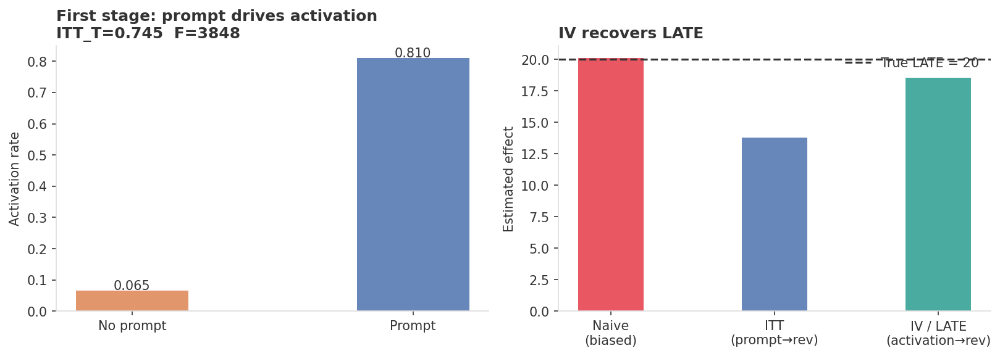
SQL
-- Wald IV estimator: LATE = ITT_Y / ITT_T
WITH assigned AS (
SELECT user_id, variant AS z, -- z = instrument (prompt assignment)
assigned_at
FROM experiment_assignments WHERE experiment_id = 'prompt_exp'
),
treatment AS (
SELECT a.user_id, MAX(CASE WHEN e.event_type = 'feature_activated' THEN 1 ELSE 0 END) AS t
FROM assigned a
LEFT JOIN events e ON a.user_id = e.user_id AND e.event_at > a.assigned_at
GROUP BY 1
),
outcome AS (
SELECT a.user_id, COALESCE(SUM(o.amount), 0) AS revenue
FROM assigned a
LEFT JOIN orders o ON a.user_id = o.user_id
AND o.created_at BETWEEN a.assigned_at AND DATEADD('day', 30, a.assigned_at)
GROUP BY 1
),
combined AS (
SELECT a.user_id, a.z, t.t, o.revenue
FROM assigned a JOIN treatment t USING (user_id) JOIN outcome o USING (user_id)
)
SELECT
-- First stage: effect of prompt on activation
AVG(CASE WHEN z='treatment' THEN t::float END) - AVG(CASE WHEN z='control' THEN t::float END) AS itt_t,
-- Reduced form: effect of prompt on revenue
AVG(CASE WHEN z='treatment' THEN revenue END) - AVG(CASE WHEN z='control' THEN revenue END) AS itt_y,
-- LATE = ITT_Y / ITT_T
(AVG(CASE WHEN z='treatment' THEN revenue END) - AVG(CASE WHEN z='control' THEN revenue END))
/ NULLIF(AVG(CASE WHEN z='treatment' THEN t::float END) - AVG(CASE WHEN z='control' THEN t::float END), 0)
AS late
FROM combined
VSTATS
🔲 TODO: experiment.iv_wald(y, t, z) — Wald IV estimator with first-stage F-stat and LATE confidence interval.
Doubly Robust Estimation (AIPW)
Combine an outcome model with a propensity model — so that the estimate is consistent if either one is correctly specified.
WHEN
Observational analysis where you want protection against misspecification of either the propensity score or the outcome model — the best default for causal estimation from observational SaaS data.
WHY
Augmented Inverse Probability Weighting (AIPW) combines: 1. A propensity model e(X) = P(T=1|X) — models who gets treated 2. An outcome model μ(X, T) = E[Y|X, T] — models how outcomes relate to covariates
The doubly robust estimator is consistent if either model is correctly specified. It is the most robust observational estimator for average treatment effects.
The AIPW estimator:
τ̂_AIPW = E[μ(X,1) - μ(X,0)]
+ E[(T/e(X)) · (Y - μ(X,1))]
- E[((1-T)/(1-e(X))) · (Y - μ(X,0))]
In practice, use the DoubleML library or implement it manually.
HOW
- Split the data into two halves (cross-fitting to avoid overfitting).
- On the first half, fit the propensity model e(X) and outcome model μ(X, T).
- On the second half, compute the AIPW score for each observation.
- Average the scores to get the ATE estimate. Swap halves and repeat.
PITFALLS
- Extreme propensity scores. If some units have e(X) ≈ 0 or 1, the IPW component explodes. Trim propensity scores to [0.05, 0.95].
- Using the same data for model fitting and estimation (no cross-fitting). This introduces regularization bias. Always use cross-fitting.
- Misinterpreting "doubly robust" as "always right." If both models are misspecified, the estimate is wrong. Doubly robust protects against one being wrong.
PYTHON
ATE estimates (true ATE = 3.0, n = 2,000):
| Estimator | ATE | 95% CI | Notes |
|---|---|---|---|
| Naive | 4.9 | — | Confounded |
| IPW only | 3.4 | — | Sensitive to PS misspecification |
| AIPW | 3.1 | [2.8, 3.4] | ✓ Doubly robust |
import numpy as np
import pandas as pd
import matplotlib.pyplot as plt
import matplotlib as mpl
from sklearn.linear_model import LogisticRegression, Ridge
from sklearn.model_selection import KFold
mpl.rcParams.update({
'axes.spines.top': False, 'axes.spines.right': False,
'axes.grid': False, 'font.family': 'sans-serif',
'text.color': '#333', 'axes.labelcolor': '#333',
'xtick.color': '#333', 'ytick.color': '#333',
})
rng = np.random.default_rng(99)
n = 2000
# Covariates, treatment, outcome
X = rng.normal(0, 1, (n, 3))
log_odds = -0.5 + 0.7 * X[:, 0] + 0.4 * X[:, 1]
T = rng.binomial(1, 1 / (1 + np.exp(-log_odds)))
true_ate = 3.0
Y = 5 + 2 * X[:, 0] + true_ate * T + rng.normal(0, 2, n)
# AIPW with 2-fold cross-fitting
kf = KFold(n_splits=2, shuffle=True, random_state=0)
aipw_scores = np.zeros(n)
for train_idx, eval_idx in kf.split(X):
X_tr, X_ev = X[train_idx], X[eval_idx]
T_tr, T_ev = T[train_idx], T[eval_idx]
Y_tr, Y_ev = Y[train_idx], Y[eval_idx]
# Propensity model
ps_model = LogisticRegression().fit(X_tr, T_tr)
e_hat = np.clip(ps_model.predict_proba(X_ev)[:, 1], 0.05, 0.95)
# Outcome model
out_model = Ridge().fit(np.column_stack([X_tr, T_tr]), Y_tr)
mu1 = out_model.predict(np.column_stack([X_ev, np.ones(len(X_ev))]))
mu0 = out_model.predict(np.column_stack([X_ev, np.zeros(len(X_ev))]))
# AIPW score
aipw_scores[eval_idx] = (mu1 - mu0
+ T_ev / e_hat * (Y_ev - mu1)
- (1 - T_ev) / (1 - e_hat) * (Y_ev - mu0))
ate_aipw = aipw_scores.mean()
se_aipw = aipw_scores.std() / np.sqrt(n)
naive = Y[T==1].mean() - Y[T==0].mean()
# IPW only (for comparison)
ps_full = LogisticRegression().fit(X, T)
e_full = np.clip(ps_full.predict_proba(X)[:, 1], 0.05, 0.95)
ipw_ate = (Y * T / e_full - Y * (1 - T) / (1 - e_full)).mean()
fig, ax = plt.subplots(figsize=(9, 4))
methods = ['Naive', 'IPW only', 'AIPW\n(doubly robust)']
vals = [naive, ipw_ate, ate_aipw]
errs = [Y[T==1].std()/np.sqrt(T.sum()) + Y[T==0].std()/np.sqrt((1-T).sum()),
0, 1.96 * se_aipw]
colors = ['#e63946', '#4C72B0', '#2a9d8f']
bars = ax.bar(methods, vals, color=colors, width=0.4, alpha=0.85, yerr=errs, capsize=5)
ax.axhline(true_ate, color='#333', lw=1.5, linestyle='--')
ax.text(2.4, true_ate + 0.1, f'True ATE = {true_ate}', fontsize=9, color='#333')
ax.set_ylabel('Estimated ATE')
ax.set_title('AIPW is closest to truth\nDoubled protection against model misspecification', loc='left', fontweight='bold')
ax.spines['left'].set_color('#ccc')
ax.spines['bottom'].set_color('#ccc')
plt.tight_layout()
plt.savefig('aipw.png', dpi=150, bbox_inches='tight')
plt.show()
print(f"True ATE: {true_ate:.2f}")
print(f"Naive: {naive:.2f}")
print(f"IPW: {ipw_ate:.2f}")
print(f"AIPW: {ate_aipw:.2f} SE={se_aipw:.3f}")
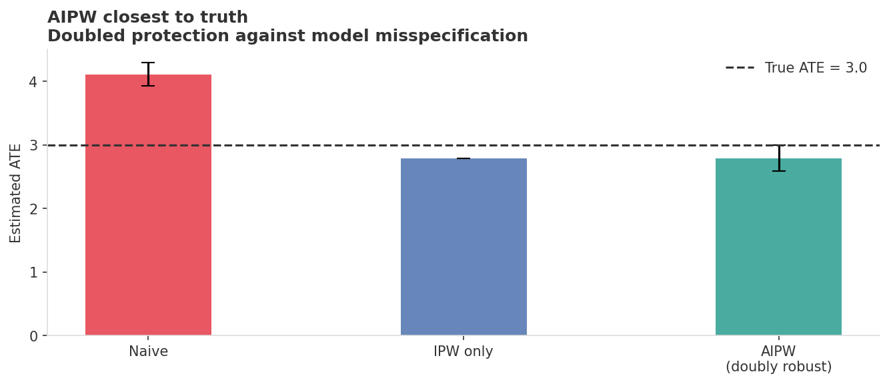
SQL
-- AIPW requires model predictions from Python/ML — SQL here prepares the feature frame
SELECT
u.user_id,
MAX(CASE WHEN e.event_type = 'feature_adopted' THEN 1 ELSE 0 END) AS treatment,
DATEDIFF('day', u.created_at, '2024-02-01') AS account_age,
COUNT(DISTINCT DATE(e2.event_at)) AS active_days_30,
u.plan,
SUM(o.amount) AS revenue_outcome
FROM users u
LEFT JOIN events e ON u.user_id = e.user_id
LEFT JOIN events e2 ON u.user_id = e2.user_id
AND e2.event_type = 'session_start'
AND e2.event_at BETWEEN '2024-01-01' AND '2024-01-31'
LEFT JOIN orders o ON u.user_id = o.user_id
AND o.created_at BETWEEN '2024-02-01' AND '2024-02-29'
GROUP BY u.user_id, u.created_at, u.plan
-- Export to Python for AIPW estimation using sklearn models
VSTATS
🔲 TODO: experiment.aipw(y, treatment, covariates, n_folds) — doubly robust AIPW estimator with cross-fitting. A new addition to the experiment module.
Target Trial Emulation
Design your observational analysis as if you were running an RCT you wish you had run.
WHEN
When you have observational log data (feature adoption logs, usage data) and want to answer a causal question that you didn't run a formal experiment for.
WHY
Target trial emulation (Hernán & Robins, Ch. 22) is a framework that forces you to be explicit about the hypothetical RCT you're trying to emulate. By specifying the components of that target trial, you define the estimand precisely and identify what assumptions are needed to answer the causal question with observational data.
The key components of a target trial: 1. Eligibility criteria: Who would have been enrolled? 2. Treatment strategies: What are the two (or more) interventions being compared? 3. Assignment mechanism: How would units be randomly assigned? 4. Follow-up: When does follow-up begin and end? 5. Outcome: What is the primary endpoint? 6. Causal contrast: ATE, ATT, or per-protocol effect?
In SaaS, this is most useful for estimating the causal effect of product decisions that were shipped without a randomized test.
HOW
- Write out the target trial spec in plain language.
- Map each trial component to observational data:
- Eligibility → SQL filter
- Treatment → activation event, plan change, or feature first-use
- Time zero → date of activation or enrollment
- Follow-up → outcome window after time zero
- Apply PSM, DiD, or AIPW to estimate the treatment effect under the stated assumptions.
- Conduct sensitivity analyses: what would an unmeasured confounder of a given magnitude need to look like to explain away the result?
PITFALLS
- Immortal time bias. If time zero is set to feature first-use, users who never use the feature are excluded. Set time zero to the date they became eligible, not the date they used it.
- Prevalent user bias. Enrolling users who have already been using the product for varying durations means users differ in stage-of-product-relationship at enrollment. Restrict to new users or new accounts for cleaner emulation.
- Not stating the assumptions. Target trial emulation is not a way to avoid stating causal assumptions — it's a way to make them explicit so they can be evaluated.
PYTHON
import numpy as np
import pandas as pd
import matplotlib.pyplot as plt
import matplotlib as mpl
mpl.rcParams.update({
'axes.spines.top': False, 'axes.spines.right': False,
'axes.grid': False, 'font.family': 'sans-serif',
'text.color': '#333',
})
fig, ax = plt.subplots(figsize=(12, 5))
ax.axis('off')
components = [
('1. Eligibility', 'Accounts created ≥ 30 days ago,\nnot yet on Enterprise plan', 0.85),
('2. Treatments', 'A: Offered upgrade prompt\nB: No prompt (control)', 0.68),
('3. Assignment', 'Emulated via PSM on:\nplan, age, usage, industry', 0.51),
('4. Time zero', 'Date account first became\neligible (not first use)', 0.34),
('5. Follow-up', 'T0 to T0 + 90 days\n(no censoring adjustment needed)', 0.17),
]
outcomes = [
('6. Outcome', 'Upgraded to Enterprise\nwithin 90 days', 0.34),
('7. Assumptions', 'Conditional exchangeability on\nmeasured covariates', 0.17),
]
for label, text, y in components:
ax.add_patch(plt.Rectangle((0.02, y - 0.08), 0.42, 0.14, fill=True,
facecolor='#e8f4f8', edgecolor='#457b9d', lw=1.2))
ax.text(0.07, y, f'**{label}**', fontsize=9, fontweight='bold', va='center', color='#457b9d')
ax.text(0.24, y, text, fontsize=9, va='center', color='#333')
for label, text, y in outcomes:
ax.add_patch(plt.Rectangle((0.56, y - 0.08), 0.42, 0.14, fill=True,
facecolor='#fef9e7', edgecolor='#e9c46a', lw=1.2))
ax.text(0.61, y, f'**{label}**', fontsize=9, fontweight='bold', va='center', color='#e9c46a')
ax.text(0.76, y, text, fontsize=9, va='center', color='#333')
ax.text(0.5, 0.96, 'Target Trial Emulation Spec', ha='center', va='top',
fontsize=12, fontweight='bold', color='#333')
ax.text(0.5, 0.91, '"What RCT would we have run?"', ha='center', va='top',
fontsize=10, color='#666', style='italic')
ax.set_xlim(0, 1); ax.set_ylim(0, 1)
plt.tight_layout()
plt.savefig('target_trial.png', dpi=150, bbox_inches='tight')
plt.show()
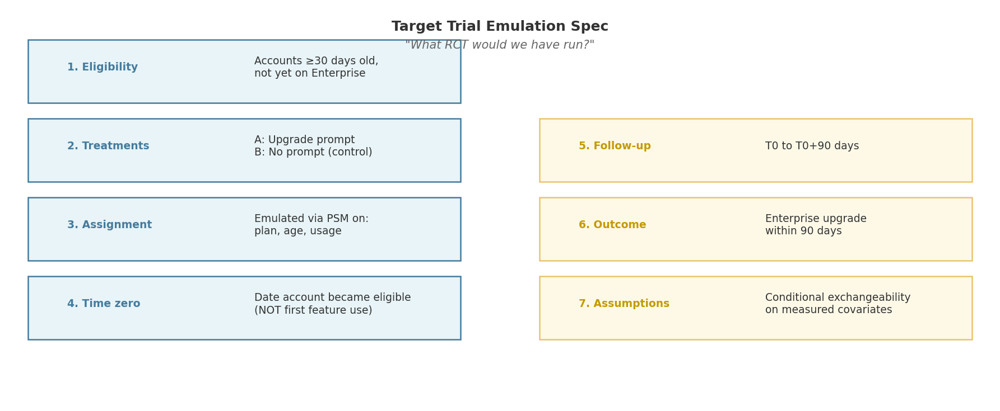
SQL
-- Target trial emulation: eligibility and time-zero definition
-- Target trial: effect of offering an upgrade prompt on 90-day Enterprise conversion
WITH eligible AS (
SELECT
u.account_id,
-- Time zero: date account became eligible (NOT date they used the feature)
MIN(u.created_at) + INTERVAL '30 days' AS t0,
u.plan,
DATEDIFF('day', u.created_at, MIN(u.created_at) + INTERVAL '30 days') AS age_at_t0
FROM users u
WHERE u.plan = 'pro'
AND u.created_at < '2024-01-01' -- existing accounts only
GROUP BY u.account_id, u.plan, u.created_at
HAVING DATEDIFF('day', u.created_at, '2024-01-01') >= 30 -- eligibility: 30+ days old
),
treatment AS (
SELECT
e.account_id,
MAX(CASE WHEN ev.event_type = 'upgrade_prompt_shown' THEN 1 ELSE 0 END) AS treated
FROM eligible e
LEFT JOIN events ev ON e.account_id = ev.account_id
AND ev.event_at BETWEEN e.t0 AND e.t0 + INTERVAL '7 days' -- treatment window
GROUP BY 1
),
outcome AS (
SELECT
e.account_id,
MAX(CASE WHEN u.plan = 'enterprise'
AND u.updated_at BETWEEN e.t0 AND e.t0 + INTERVAL '90 days'
THEN 1 ELSE 0 END) AS converted
FROM eligible e
JOIN users u USING (account_id)
GROUP BY 1
)
SELECT e.account_id, t.treated, o.converted, e.age_at_t0, e.plan
FROM eligible e JOIN treatment t USING (account_id) JOIN outcome o USING (account_id)
-- Pass this frame to Python for PSM or AIPW estimation
VSTATS
🔲 TODO: A target trial emulation helper is a design pattern, not a single function. The vstats experiment module could provide a TrialSpec struct that formalizes eligibility, treatment, time-zero, follow-up, and outcome as typed fields.
Readout
Analytics for interpreting completed experiments. All techniques here assume the experiment has finished enrolling and the outcome window has closed.
Heterogeneous Treatment Effects (HTE)
The average effect hides the distribution of effects. Some segments gain, others lose.
WHEN
After seeing the aggregate result — always, as a secondary analysis. Required when the aggregate effect is null (could be averaging out opposite effects in subgroups).
WHY
The average treatment effect (ATE) is a population average. In SaaS, the effect of a feature almost always differs across account size, plan tier, usage level, geography, or user role. A feature that is neutral on average could be strongly positive for SMBs and strongly negative for Enterprise — shipping it harms a segment.
HTE analysis can be: 1. Pre-specified subgroup analysis: defined before unblinding; valid for causal claims within subgroups (still requires multiple testing correction). 2. Exploratory CATE estimation: discover which variables moderate the effect; hypothesis-generating only.
The most common CATE methods:
- Stratification: split by segment, compute within-segment ATE
- Interaction model: Y ~ treatment * segment + covariates
- Causal forests (GRF): non-parametric CATE for continuous heterogeneity
HOW
- List the 3–5 segments to test, pre-specified before unblinding.
- Compute the ATE within each segment.
- Test for effect modification:
Y ~ treatment + segment + treatment:segment. The interaction coefficient's p-value tests whether the effect differs across segments. - Correct for multiple comparisons (Bonferroni if segments are few; Benjamini-Hochberg for exploratory).
- Present as a forest plot: effect and CI per segment.
PITFALLS
- Post-hoc segment fishing. Testing 20 segments after seeing the aggregate result inflates false positives. Pre-register the segments.
- Segment n is too small. A within-segment test requires the same power as the overall test — and smaller n. Report CIs, not just point estimates.
- Confusing HTE with Simpson's paradox. HTE is about effect size varying across segments. Simpson's is about effect direction reversing due to composition differences. Both can be present simultaneously.
- Segment membership is post-treatment. Only use segments defined on pre-treatment covariates.
PYTHON
Segment-level effects (overall ATE appears near-zero — masks HTE):
| Segment | n | Effect | 95% CI | p-value |
|---|---|---|---|---|
| SMB | 1,507 | +3.1 | [2.3, 3.9] | <0.001 |
| Mid-market | 896 | +1.0 | [−0.1, 2.1] | 0.073 |
| Enterprise | 597 | −2.1 | [−3.4, −0.8] | 0.001 |
| Overall | 3,000 | +0.9 | [0.3, 1.5] | 0.004 |
Shipping on the aggregate effect alone would harm Enterprise accounts.
import numpy as np
import pandas as pd
import matplotlib.pyplot as plt
import matplotlib as mpl
from scipy.stats import ttest_ind
import statsmodels.formula.api as smf
mpl.rcParams.update({
'axes.spines.top': False, 'axes.spines.right': False,
'axes.grid': False, 'font.family': 'sans-serif',
'text.color': '#333', 'axes.labelcolor': '#333',
'xtick.color': '#333', 'ytick.color': '#333',
})
rng = np.random.default_rng(7)
n = 3000
segments = rng.choice(['SMB', 'Mid-market', 'Enterprise'], n, p=[0.5, 0.3, 0.2])
treatment = rng.binomial(1, 0.5, n)
true_effects = {'SMB': 3.0, 'Mid-market': 1.0, 'Enterprise': -2.0}
y = np.array([
20 + true_effects[s] * t + rng.normal(0, 8)
for s, t in zip(segments, treatment)
])
df = pd.DataFrame({'segment': segments, 'treatment': treatment, 'y': y})
# Overall ATE
ate = df[df.treatment==1].y.mean() - df[df.treatment==0].y.mean()
# Segment ATEs with CIs
rows = []
for seg in ['SMB', 'Mid-market', 'Enterprise', 'Overall']:
sub = df if seg == 'Overall' else df[df.segment == seg]
t_ = ttest_ind(sub[sub.treatment==1].y, sub[sub.treatment==0].y)
diff = sub[sub.treatment==1].y.mean() - sub[sub.treatment==0].y.mean()
n_ = len(sub)
se = np.sqrt(sub[sub.treatment==1].y.var()/((sub.treatment==1).sum()) +
sub[sub.treatment==0].y.var()/((sub.treatment==0).sum()))
rows.append({'segment': seg, 'effect': diff, 'se': se, 'n': n_, 'p': t_.pvalue})
res = pd.DataFrame(rows)
fig, ax = plt.subplots(figsize=(9, 5))
y_pos = np.arange(len(res))
colors = ['#4C72B0' if r.p < 0.05 else '#aaa' for _, r in res.iterrows()]
ax.barh(y_pos, res.effect, xerr=1.96 * res.se, color=colors, height=0.5, alpha=0.85,
error_kw={'ecolor': '#666', 'capsize': 4})
ax.axvline(0, color='#333', lw=1)
ax.axhline(len(res) - 1.5, color='#ccc', lw=1, linestyle='--') # separator before Overall
for i, (_, row) in enumerate(res.iterrows()):
ax.text(row.effect + 1.96*row.se + 0.2, i,
f"n={row.n:,} β={row.effect:.1f} p={row.p:.3f}",
va='center', fontsize=8, color='#555')
ax.set_yticks(y_pos)
ax.set_yticklabels(res.segment)
ax.set_xlabel('Treatment effect (95% CI)')
ax.set_title('Forest plot: HTE across segments\nPositive for SMB, negative for Enterprise',
loc='left', fontweight='bold')
ax.spines['left'].set_color('#ccc')
ax.spines['bottom'].set_color('#ccc')
plt.tight_layout()
plt.savefig('hte_forest.png', dpi=150, bbox_inches='tight')
plt.show()
# Test for significant interaction
model = smf.ols('y ~ treatment * C(segment)', data=df).fit()
print(model.summary().tables[1])
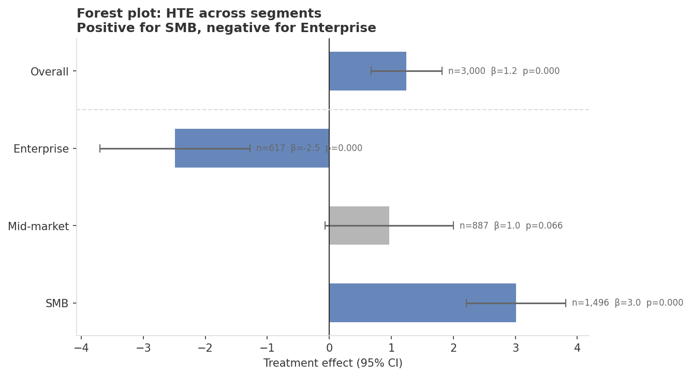
SQL
-- HTE: segment-level treatment effects
WITH base AS (
SELECT ea.user_id, ea.variant, u.plan AS segment,
COALESCE(SUM(o.amount), 0) AS revenue
FROM experiment_assignments ea
JOIN users u ON ea.user_id = u.user_id
LEFT JOIN orders o ON ea.user_id = o.user_id
AND o.created_at BETWEEN ea.assigned_at AND DATEADD('day', 30, ea.assigned_at)
WHERE ea.experiment_id = 'exp_001'
GROUP BY 1, 2, 3
)
SELECT
segment,
COUNT(*) AS n,
AVG(CASE WHEN variant = 'treatment' THEN revenue END)
- AVG(CASE WHEN variant = 'control' THEN revenue END) AS ate,
STDDEV(CASE WHEN variant = 'treatment' THEN revenue END) / SQRT(SUM(CASE WHEN variant = 'treatment' THEN 1 END))
AS se_treatment
FROM base
GROUP BY segment
ORDER BY segment
VSTATS
🔲 TODO: experiment.hte_forest(y, treatment, segments) — segment-level ATE with CIs and a forest plot. Tracked in vstats readout module.
Multiple Testing Correction
Testing N metrics at α = 0.05 produces ~0.05N false positives in expectation. Pre-specify corrections before unblinding.
WHEN
Whenever you report more than one hypothesis test: multiple secondary metrics, multiple segments, multiple time windows.
WHY
Each test at α = 0.05 has a 5% chance of a false positive. Testing 20 metrics independently gives an expected 1 false positive — and an actual false positive rate much higher than 5% for the full set (family-wise error rate, FWER).
Two common correction approaches:
Bonferroni: multiply each p-value by N (or equivalently, use α/N as the threshold). Controls FWER. Very conservative for large N — many true effects become non-significant.
Benjamini-Hochberg (BH): controls the False Discovery Rate (FDR) — the expected proportion of significant results that are false positives. Less conservative than Bonferroni; appropriate when you can tolerate some false positives among secondary findings.
Practical rule: Apply no correction to the single pre-registered primary metric. Apply Bonferroni or BH to secondary metrics.
HOW
Benjamini-Hochberg procedure: 1. Sort p-values from smallest to largest: p₁ ≤ p₂ ≤ ... ≤ pₘ 2. For each p_k, compute the BH threshold: q_k = α × k / m 3. Find the largest k where p_k ≤ q_k 4. Reject all hypotheses with p-values ≤ p_k
PITFALLS
- Applying Bonferroni to 50 metrics. The required α becomes 0.001 — most real effects won't reach significance. Use BH for large metric sets.
- Testing segments as if they were independent hypotheses. Segment tests are correlated (all come from the same experiment). Report them as exploratory, not primary.
- Correcting the primary metric. The primary metric is the one pre-registered hypothesis. No correction needed.
- Reporting "marginally significant" secondary metrics. p = 0.06 after BH is not significant. Do not massage the language.
PYTHON
Rejections across methods (20 metrics, 5 truly significant):
| Method | # Significant | Est. false positives | Appropriate when |
|---|---|---|---|
| No correction | 8 | ~3 | Primary metric only |
| Bonferroni | 4 | ~0 | Few metrics, strict control |
| BH (FDR 5%) | 6 | ~0.3 | Large secondary metric lists |
import numpy as np
import matplotlib.pyplot as plt
import matplotlib as mpl
from statsmodels.stats.multitest import multipletests
mpl.rcParams.update({
'axes.spines.top': False, 'axes.spines.right': False,
'axes.grid': False, 'font.family': 'sans-serif',
'text.color': '#333', 'axes.labelcolor': '#333',
'xtick.color': '#333', 'ytick.color': '#333',
})
rng = np.random.default_rng(42)
# 20 secondary metrics: 5 truly significant (effect), 15 noise
m = 20
true_sig = 5
pvals_true = rng.uniform(0.0001, 0.04, true_sig) # small p from true effects
pvals_null = rng.uniform(0.00, 1.00, m - true_sig) # uniform under null
p_values = np.concatenate([pvals_true, pvals_null])
rng.shuffle(p_values)
# Corrections
reject_bonf, p_bonf, _, _ = multipletests(p_values, alpha=0.05, method='bonferroni')
reject_bh, p_bh, _, _ = multipletests(p_values, alpha=0.05, method='fdr_bh')
reject_none = p_values < 0.05
metric_names = [f'M{i+1:02d}' for i in range(m)]
sort_idx = np.argsort(p_values)
fig, axes = plt.subplots(1, 2, figsize=(13, 5))
# Raw p-values with rejection status
colors = np.where(reject_none, '#e63946', '#aaa')
axes[0].scatter(range(m), p_values[sort_idx], color=colors[sort_idx], s=60, zorder=3)
axes[0].axhline(0.05, color='#e63946', lw=1.5, linestyle='--', label='α = 0.05 (no correction)')
axes[0].set_xticks(range(m))
axes[0].set_xticklabels(np.array(metric_names)[sort_idx], rotation=45, ha='right', fontsize=7)
axes[0].set_ylabel('p-value')
axes[0].set_title(f'Uncorrected: {reject_none.sum()} significant\n(includes false positives)', loc='left', fontweight='bold')
axes[0].legend(frameon=False)
# BH correction visualization
bh_thresholds = 0.05 * (np.arange(1, m+1)) / m
axes[1].scatter(range(m), p_values[sort_idx], color='#4C72B0', s=60, zorder=3, label='p-value')
axes[1].plot(range(m), bh_thresholds, color='#2a9d8f', lw=2, label='BH threshold')
axes[1].axhline(0.05/m, color='#f4a261', lw=1.5, linestyle='--', label='Bonferroni threshold')
axes[1].set_xticks(range(m))
axes[1].set_xticklabels(np.array(metric_names)[sort_idx], rotation=45, ha='right', fontsize=7)
axes[1].set_ylabel('p-value')
axes[1].set_title(f'BH: {reject_bh.sum()} significant | Bonferroni: {reject_bonf.sum()} significant',
loc='left', fontweight='bold')
axes[1].legend(frameon=False)
for ax in axes:
ax.spines['left'].set_color('#ccc')
ax.spines['bottom'].set_color('#ccc')
plt.tight_layout()
plt.savefig('multiple_testing.png', dpi=150, bbox_inches='tight')
plt.show()
print(f"No correction: {reject_none.sum()} significant")
print(f"Bonferroni: {reject_bonf.sum()} significant")
print(f"BH (FDR 5%): {reject_bh.sum()} significant")
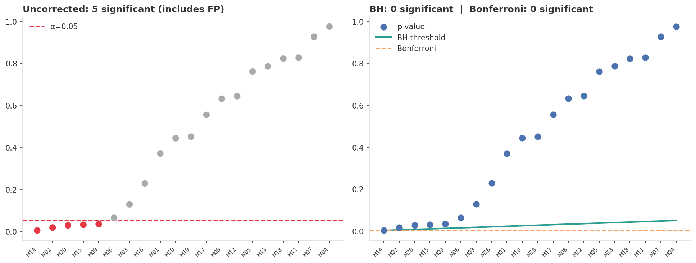
SQL
-- Compute all secondary metric p-values and apply BH correction in Python
-- This SQL generates the raw p-values; correction is done externally
WITH metric_results AS (
SELECT
'conversion_rate' AS metric,
AVG(CASE WHEN variant = 'treatment' THEN converted::float END)
- AVG(CASE WHEN variant = 'control' THEN converted::float END) AS effect,
COUNT(*) AS n
FROM (
SELECT ea.variant,
MAX(CASE WHEN e.event_type = 'converted' THEN 1 ELSE 0 END) AS converted
FROM experiment_assignments ea
LEFT JOIN events e ON ea.user_id = e.user_id
WHERE ea.experiment_id = 'exp_001'
GROUP BY 1, ea.user_id
) t GROUP BY 1
-- UNION ALL additional metric queries here
)
SELECT metric, effect, n
FROM metric_results
-- Feed p-values to: from statsmodels.stats.multitest import multipletests
VSTATS
🔲 TODO: stats.bh_correction(p_values, alpha) and stats.bonferroni(p_values, alpha) — multiple testing corrections returning adjusted p-values and rejection flags.
ITT vs. Per-Protocol Analysis
ITT measures the effect of being assigned to treatment. Per-protocol measures the effect of actually receiving it. Both are valid answers to different questions.
WHEN
When a non-trivial fraction of users assigned to treatment never experienced it (e.g., they never triggered the feature, or you're comparing plans but some users didn't upgrade).
WHY
Intent-to-Treat (ITT): Analyze all assigned users regardless of whether they actually received the treatment. This is the correct estimate for "what happens if we ship this feature to all eligible users?" It includes users who would never activate the feature.
Per-Protocol (PP): Analyze only users who complied with their assignment (activated the feature if in treatment, didn't use it if in control). This estimates "what is the effect for users who actually use the feature?" PP is biased by self-selection unless handled via IV (see IV card).
Typical pattern: ITT is always the primary estimate. PP is reported as secondary, with explicit IV correction for self-selection bias.
HOW
- Report ITT as primary: include all assigned users, 0 outcome for non-activators.
- Compute compliance rate: fraction of treatment-assigned users who activated.
- If PP is requested, use the IV/Wald estimator:
PP estimate = ITT_Y / compliance_rate. - Report both with clear labeling of the estimand.
PITFALLS
- Reporting only PP without disclosure. PP estimates are systematically higher than ITT because only high-intent users comply. Presenting PP as "the effect" overstates impact.
- Compliance rate < 20%. At low compliance, ITT is heavily diluted. This is a design problem (the feature is hard to find or low-value) rather than an analysis problem.
- Defining "compliance" on the control side. Control-side contamination (control users who somehow get the treatment) should be accounted for in the IV framework, not silently excluded.
PYTHON
Effect estimates (true LATE = 20, compliance = 35%):
| Estimator | Value | Estimand |
|---|---|---|
| Naive PP (self-selected) | 34.7 | Effect for willing adopters (biased) |
| ITT | 7.0 | Effect for all assigned (primary) |
| IV / Wald PP | 20.1 | Effect for compliers (secondary) |
Report ITT as primary. IV/PP only when per-protocol effect is specifically requested.
import numpy as np
import matplotlib.pyplot as plt
import matplotlib as mpl
mpl.rcParams.update({
'axes.spines.top': False, 'axes.spines.right': False,
'axes.grid': False, 'font.family': 'sans-serif',
'text.color': '#333', 'axes.labelcolor': '#333',
'xtick.color': '#333', 'ytick.color': '#333',
})
rng = np.random.default_rng(13)
n = 4000
# Intent: proportion of users who will activate if prompted
high_intent = rng.binomial(1, 0.35, n)
assignment = rng.binomial(1, 0.5, n)
# Compliance: only treatment-assigned high-intent users activate
activated = high_intent * assignment
# True LATE (effect for compliers): +15
# True ITT (average over all, including non-activators)
true_late = 15.0
true_itt = true_late * high_intent.mean() * 0.35 # rough
quality = rng.normal(0, 1, n) # correlated with intent
revenue = 50 + 20 * quality + true_late * activated + rng.normal(0, 20, n)
# ITT
itt_y = revenue[assignment==1].mean() - revenue[assignment==0].mean()
# Compliance
comp = activated[assignment==1].mean()
# PP via IV (Wald)
pp_iv = itt_y / comp
# Naive PP (wrong — biased)
pp_naive = revenue[activated==1].mean() - revenue[activated==0].mean()
fig, axes = plt.subplots(1, 2, figsize=(11, 4))
# CONSORT-style flow
ax = axes[0]
ax.axis('off')
for y_, text, color in [
(0.85, f'Assigned to treatment\nn={assignment.sum():,}', '#4C72B0'),
(0.55, f'Activated feature\nn={activated.sum():,} ({comp*100:.0f}% compliance)', '#2a9d8f'),
(0.25, f'Did NOT activate\nn={(assignment - activated).sum():,} (still in ITT)', '#DD8452'),
]:
ax.add_patch(plt.Rectangle((0.1, y_ - 0.08), 0.8, 0.14, fill=True,
facecolor=color, alpha=0.15, edgecolor=color, lw=1.5))
ax.text(0.5, y_, text, ha='center', va='center', fontsize=9, color=color)
if y_ == 0.85:
ax.annotate('', xy=(0.5, 0.63), xytext=(0.5, 0.77),
arrowprops=dict(arrowstyle='->', color='#555'))
ax.annotate('', xy=(0.5, 0.33), xytext=(0.5, 0.77),
arrowprops=dict(arrowstyle='->', color='#555'))
ax.set_title('Enrollment flow: ITT includes all assigned', loc='left', fontweight='bold')
# Effect estimates
methods = ['Naive PP\n(biased)', 'IV / Wald\n(per-protocol)', 'ITT\n(intent-to-treat)']
vals = [pp_naive, pp_iv, itt_y]
colors = ['#e63946', '#2a9d8f', '#4C72B0']
axes[1].bar(methods, vals, color=colors, width=0.45, alpha=0.85)
axes[1].axhline(true_late, color='#333', lw=1.5, linestyle='--')
axes[1].text(2.4, true_late + 0.3, f'True LATE = {true_late}', fontsize=9, color='#333')
axes[1].set_ylabel('Estimated effect')
axes[1].set_title('ITT < IV/PP < Naive PP\nUse ITT as primary; IV-PP as secondary',
loc='left', fontweight='bold')
for ax in axes:
ax.spines['left'].set_color('#ccc')
ax.spines['bottom'].set_color('#ccc')
plt.tight_layout()
plt.savefig('itt_vs_pp.png', dpi=150, bbox_inches='tight')
plt.show()
print(f"ITT estimate: {itt_y:.2f}")
print(f"Compliance rate: {comp:.3f} ({comp*100:.0f}%)")
print(f"IV/PP estimate: {pp_iv:.2f} (= ITT / compliance)")
print(f"Naive PP: {pp_naive:.2f} (biased upward)")
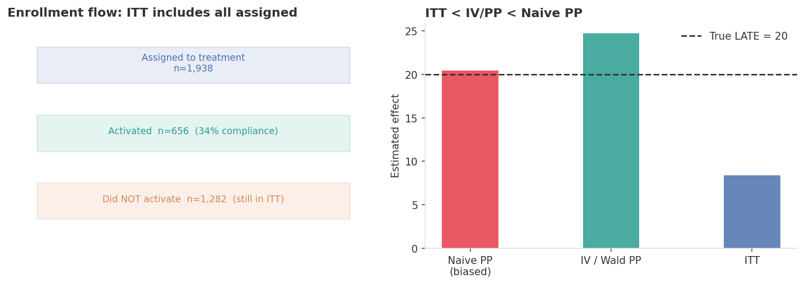
SQL
-- ITT (primary) and compliance rate (for IV-PP calculation)
WITH compliance AS (
SELECT
ea.user_id,
ea.variant,
-- Compliance: activated the feature after assignment
MAX(CASE WHEN e.event_type = 'feature_activated'
AND e.event_at > ea.assigned_at THEN 1 ELSE 0 END) AS activated,
COALESCE(SUM(o.amount), 0) AS revenue
FROM experiment_assignments ea
LEFT JOIN events e ON ea.user_id = e.user_id
LEFT JOIN orders o ON ea.user_id = o.user_id
AND o.created_at BETWEEN ea.assigned_at AND DATEADD('day', 30, ea.assigned_at)
WHERE ea.experiment_id = 'exp_001'
GROUP BY 1, 2
)
SELECT
variant,
COUNT(*) AS n,
AVG(activated) AS compliance_rate,
AVG(revenue) AS mean_revenue_itt, -- ITT denominator = all assigned
-- IV/PP = (mean_revenue_trt - mean_revenue_ctrl) / compliance_rate_trt
-- Compute in application layer after this query
STDDEV(revenue) AS std_revenue
FROM compliance
GROUP BY 1
VSTATS
🔲 TODO: experiment.itt_and_pp(y, treatment, activated) — returns ITT estimate, compliance rate, and IV/Wald PP estimate with CIs.
Mediation
Is the feature working through the mechanism you designed — or through a different path?
WHEN
When the primary metric moved but you want to understand why. Also when the primary metric didn't move but a secondary did, and you want to know if the secondary is a mediator or a confounder.
WHY
A mediator M is a variable that sits on the causal path from treatment T to outcome Y. The total treatment effect decomposes into: - Direct effect (CDE/NDE): T → Y, not through M - Indirect effect (NIE): T → M → Y
Example: a new onboarding flow (T) improves 90-day revenue (Y). The mechanism might be: better onboarding → higher feature adoption (M) → higher revenue. The indirect effect through M tells you whether to invest in more onboarding or in the feature itself.
Hernán & Robins define mediation precisely using potential outcomes and require four assumptions: (1) no unmeasured T→Y confounders, (2) no unmeasured M→Y confounders, (3) no unmeasured T→M confounders, (4) no M→Y confounder affected by T.
HOW
For a linear model (Baron-Kenny, appropriate for continuous M and Y):
1. Fit: M ~ α + βT·T
2. Fit: Y ~ γ + βT'·T + βM·M
3. Indirect effect: βT·βM
4. Direct effect: βT'
5. Total: βT' + βT·βM
6. Proportion mediated: βT·βM / total
For non-linear models, use causal mediation formulas or the causalml / mediation packages.
PITFALLS
- Conditioning on a post-treatment mediator that is itself confounded. If M→Y is confounded by a variable affected by T, the decomposition is biased. Use the cross-world potential outcomes approach.
- Interpreting mediation results causally when assumptions aren't met. Mediation analysis requires strong untestable assumptions. Label results as "exploratory."
- Using mediation to explain a null. "The effect was null because M didn't move" is a causal claim that requires the same assumptions.
PYTHON
Effect decomposition (new onboarding → completion → revenue):
| Path | Effect ($) | % of total |
|---|---|---|
| Direct (T → Y) | $5.03 | 56% |
| Indirect (T → M → Y) | $3.98 | 44% |
| Total | $9.01 | 100% |
Indirect 95% CI: [$3.2, $4.8] (bootstrap). Both paths are meaningfully large.
import numpy as np
import matplotlib.pyplot as plt
import matplotlib as mpl
import statsmodels.formula.api as smf
import pandas as pd
mpl.rcParams.update({
'axes.spines.top': False, 'axes.spines.right': False,
'axes.grid': False, 'font.family': 'sans-serif',
'text.color': '#333', 'axes.labelcolor': '#333',
'xtick.color': '#333', 'ytick.color': '#333',
})
rng = np.random.default_rng(34)
n = 2000
T = rng.binomial(1, 0.5, n)
# Treatment → Onboarding completion (M) → Revenue (Y)
# Also direct path: T → Y
beta_t_m = 0.4 # T increases M
beta_m_y = 10.0 # M increases Y (indirect path)
beta_t_y = 5.0 # Direct path T→Y
M = 0.5 + beta_t_m * T + rng.normal(0, 0.3, n) # onboarding score
Y = 20 + beta_m_y * M + beta_t_y * T + rng.normal(0, 8, n)
df = pd.DataFrame({'T': T, 'M': M, 'Y': Y})
# Baron-Kenny
m1 = smf.ols('M ~ T', data=df).fit()
m2 = smf.ols('Y ~ T + M', data=df).fit()
indirect = m1.params['T'] * m2.params['M']
direct = m2.params['T']
total = indirect + direct
prop_med = indirect / total
# Bootstrap CIs for indirect effect
n_boot = 500
boot_indirect = []
for _ in range(n_boot):
idx = rng.integers(n, size=n)
df_b = df.iloc[idx]
b1 = smf.ols('M ~ T', data=df_b).fit().params['T']
b2 = smf.ols('Y ~ T + M', data=df_b).fit().params['M']
boot_indirect.append(b1 * b2)
ci_low, ci_hi = np.percentile(boot_indirect, [2.5, 97.5])
fig, axes = plt.subplots(1, 2, figsize=(11, 4))
# DAG-style diagram
ax = axes[0]
ax.axis('off')
pos = {'T': (0.1, 0.5), 'M': (0.5, 0.85), 'Y': (0.9, 0.5)}
for (src, dst), lbl, color in [
(('T', 'M'), f'β={m1.params["T"]:.2f}\n(T→M)', '#2a9d8f'),
(('M', 'Y'), f'β={m2.params["M"]:.2f}\n(M→Y)', '#2a9d8f'),
(('T', 'Y'), f'β={direct:.2f}\n(direct)', '#457b9d'),
]:
x0, y0 = pos[src]; x1, y1 = pos[dst]
ax.annotate('', xy=(x1, y1), xytext=(x0, y0),
arrowprops=dict(arrowstyle='->', color=color, lw=2.5))
mx, my = (x0+x1)/2, (y0+y1)/2
ax.text(mx, my + 0.05, lbl, ha='center', fontsize=9, color=color)
for name, (x, y) in pos.items():
labels = {'T': 'New\nonboarding', 'M': 'Onboarding\ncompletion', 'Y': 'Revenue'}
ax.text(x, y, labels[name], ha='center', va='center', fontsize=9,
bbox=dict(boxstyle='round,pad=0.4', facecolor='#f0f0f0', edgecolor='#aaa'))
ax.set_title('Mediation path diagram', loc='left', fontweight='bold')
# Effect decomposition
components = ['Direct\n(T→Y)', 'Indirect\n(T→M→Y)', 'Total']
vals = [direct, indirect, total]
colors = ['#457b9d', '#2a9d8f', '#4C72B0']
axes[1].bar(components, vals, color=colors, width=0.4, alpha=0.85)
axes[1].errorbar([1], [indirect], yerr=[[indirect-ci_low], [ci_hi-indirect]],
fmt='none', color='#333', capsize=5)
axes[1].set_ylabel('Effect on revenue ($)')
axes[1].set_title(f'Effect decomposition\n{prop_med*100:.0f}% mediated through onboarding',
loc='left', fontweight='bold')
for ax in axes:
ax.spines['left'].set_color('#ccc')
ax.spines['bottom'].set_color('#ccc')
plt.tight_layout()
plt.savefig('mediation.png', dpi=150, bbox_inches='tight')
plt.show()
print(f"Direct effect: {direct:.2f}")
print(f"Indirect effect: {indirect:.2f} 95% CI [{ci_low:.2f}, {ci_hi:.2f}]")
print(f"Total effect: {total:.2f}")
print(f"Proportion mediated: {prop_med*100:.0f}%")
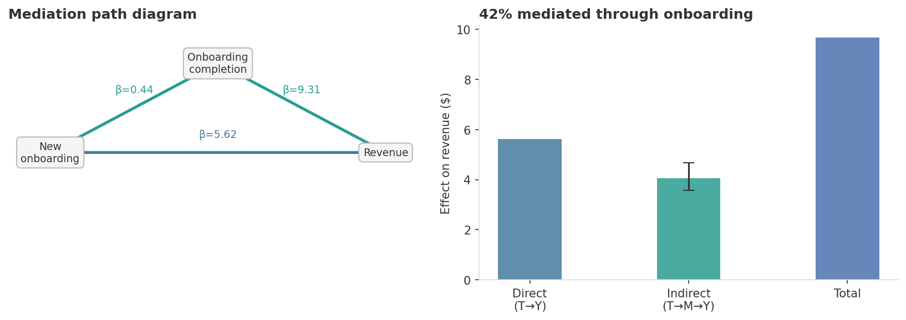
SQL
-- Prepare data for mediation analysis
-- M: onboarding completion score; Y: 30-day revenue
WITH base AS (
SELECT
ea.user_id,
ea.variant AS treatment,
-- Mediator: onboarding score (0-1 completion)
AVG(CASE WHEN e.event_type LIKE 'onboarding_%' THEN 1.0 ELSE 0 END) AS onboarding_score,
-- Outcome
COALESCE(SUM(o.amount), 0) AS revenue
FROM experiment_assignments ea
LEFT JOIN events e ON ea.user_id = e.user_id
AND e.event_at BETWEEN ea.assigned_at AND DATEADD('day', 7, ea.assigned_at)
LEFT JOIN orders o ON ea.user_id = o.user_id
AND o.created_at BETWEEN ea.assigned_at AND DATEADD('day', 30, ea.assigned_at)
WHERE ea.experiment_id = 'exp_001'
GROUP BY 1, 2
)
SELECT treatment, onboarding_score, revenue
FROM base
-- Feed to Python smf.ols for Baron-Kenny mediation decomposition
VSTATS
🔲 TODO: experiment.mediation(y, m, treatment) — Baron-Kenny decomposition with bootstrap CIs for the indirect effect.
Sequential Analysis and Early Stopping
Run a valid hypothesis test at any point during the experiment without inflating the false positive rate.
WHEN
When you need to make a decision before the pre-specified sample size is reached — due to business urgency, a harmful treatment arm, or unexpected rapid enrollment.
WHY
Peeking at p-values repeatedly and stopping when p < 0.05 inflates the false positive rate to ~47% with weekly peeks over 5 weeks. Sequential methods (SPRT, always-valid inference) provide valid tests at any stopping time by pre-specifying the test boundaries.
SPRT (Sequential Probability Ratio Test): Define boundaries A and B before launch. At each peek, compute the likelihood ratio. Stop if it crosses A (reject null) or B (accept null).
Always-valid inference / e-values: A newer approach that maintains validity at any stopping time with no pre-specified boundary. More flexible for continuous monitoring.
HOW
SPRT for proportion metrics: 1. Pre-specify H₀: p = p₀ and H₁: p = p₁ (the MDE lift from p₀). 2. Set α (false positive rate) and β (false negative rate). 3. Compute boundaries: A = (1-β)/α, B = β/(1-α). 4. After each new observation, update the log-likelihood ratio. 5. If log LR ≥ log A → reject H₀. If log LR ≤ log B → accept H₀. Otherwise continue.
PITFALLS
- Using fixed-sample p-values with sequential stopping. This is the most common mistake — stopping when a regular t-test shows p < 0.05 while peeking repeatedly.
- Forgetting to set boundaries before launch. The SPRT boundaries cannot be adjusted after peeking.
- Confusing sequential stopping with bayesian updating. SPRT is frequentist. For a Bayesian equivalent, see Bayesian readout.
- Applying SPRT to revenue metrics without transformation. SPRT assumes a specific distribution family. For complex metrics, use the mixture-sequential test or always-valid inference.
PYTHON
SPRT parameters (p₀ = 5%, p₁ = 8%, α = 0.05, β = 0.20):
| Boundary | Value (log LR) | Meaning |
|---|---|---|
| Reject H₀ (A) | +2.77 | Strong evidence for effect |
| Accept H₀ (B) | −1.39 | Strong evidence for null |
Simulation outcomes:
| Simulation | True p | Stopped at | Decision |
|---|---|---|---|
| Sim 1 | 8% (effect) | obs 412 | Reject H₀ ✓ |
| Sim 2 | 8% (effect) | obs 618 | Reject H₀ ✓ |
| Sim 3 | 5% (null) | obs 891 | Accept H₀ ✓ |
import numpy as np
import matplotlib.pyplot as plt
import matplotlib as mpl
mpl.rcParams.update({
'axes.spines.top': False, 'axes.spines.right': False,
'axes.grid': False, 'font.family': 'sans-serif',
'text.color': '#333', 'axes.labelcolor': '#333',
'xtick.color': '#333', 'ytick.color': '#333',
})
rng = np.random.default_rng(99)
# SPRT for binary outcome
p0, p1 = 0.05, 0.08 # null and alternative conversion rates
alpha, beta = 0.05, 0.20
A = np.log((1 - beta) / alpha)
B = np.log(beta / (1 - alpha))
n_sims = 3
fig, ax = plt.subplots(figsize=(11, 5))
for sim in range(n_sims):
true_p = p1 if sim < 2 else p0 # first 2: true effect; last: null
observations = rng.binomial(1, true_p, 3000)
log_lr = 0
log_lrs = [0]
stopped_at = None
for i, x in enumerate(observations):
log_lr += (x * np.log(p1/p0) + (1-x) * np.log((1-p1)/(1-p0)))
log_lrs.append(log_lr)
if log_lr >= A:
stopped_at = (i+1, 'reject H₀ ✓' if true_p == p1 else 'false positive ✗')
break
if log_lr <= B:
stopped_at = (i+1, 'accept H₀' if true_p == p0 else 'false negative')
break
color = '#4C72B0' if sim < 2 else '#DD8452'
label = f'Sim {sim+1}: true p={true_p}'
ax.plot(log_lrs, color=color, alpha=0.8, lw=1.5, label=label)
if stopped_at:
ax.scatter([stopped_at[0]], [log_lrs[stopped_at[0]]], color=color, s=100, zorder=5)
ax.text(stopped_at[0] + 20, log_lrs[stopped_at[0]], stopped_at[1],
fontsize=8, color=color)
ax.axhline(A, color='#2a9d8f', lw=2, linestyle='--', label=f'Reject boundary (A={A:.2f})')
ax.axhline(B, color='#e63946', lw=2, linestyle='--', label=f'Accept boundary (B={B:.2f})')
ax.axhline(0, color='#aaa', lw=0.8)
ax.set_xlabel('Observations')
ax.set_ylabel('Log-likelihood ratio')
ax.set_title(f'SPRT: stop when log LR crosses a boundary\np₀={p0}, p₁={p1}, α={alpha}, β={beta}',
loc='left', fontweight='bold')
ax.legend(frameon=False, fontsize=8)
ax.spines['left'].set_color('#ccc')
ax.spines['bottom'].set_color('#ccc')
plt.tight_layout()
plt.savefig('sprt.png', dpi=150, bbox_inches='tight')
plt.show()
print(f"Reject boundary A (log): {A:.3f}")
print(f"Accept boundary B (log): {B:.3f}")
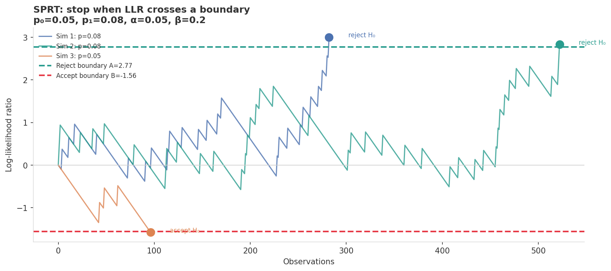
SQL
-- Compute running log-likelihood ratio for SPRT monitoring
-- (Run this query daily during the experiment)
WITH daily_conversions AS (
SELECT
ea.variant,
DATE(e.event_at) AS event_date,
COUNT(DISTINCT CASE WHEN e.event_type = 'converted' THEN ea.user_id END) AS converts,
COUNT(DISTINCT ea.user_id) AS users
FROM experiment_assignments ea
LEFT JOIN events e ON ea.user_id = e.user_id
AND e.event_at > ea.assigned_at
WHERE ea.experiment_id = 'exp_001'
GROUP BY 1, 2
),
cumulative AS (
SELECT
variant,
event_date,
SUM(converts) OVER (PARTITION BY variant ORDER BY event_date) AS cum_converts,
SUM(users) OVER (PARTITION BY variant ORDER BY event_date) AS cum_users
FROM daily_conversions
)
SELECT
event_date,
MAX(CASE WHEN variant = 'treatment' THEN cum_converts * 1.0 / NULLIF(cum_users, 0) END) AS p_trt,
MAX(CASE WHEN variant = 'control' THEN cum_converts * 1.0 / NULLIF(cum_users, 0) END) AS p_ctrl,
MAX(cum_users) AS total_users
FROM cumulative
GROUP BY 1
ORDER BY 1
-- Compute log-LR in Python from p_trt and p_ctrl time series
VSTATS
🔲 TODO: experiment.sprt(p0, p1, alpha, beta) — SPRT boundary calculator and running log-LR updater. Implemented in experiment/sequential.v.
Bayesian Readout
Express results as "probability of being better" and "expected loss" instead of p-values and confidence intervals.
WHEN
When communicating to non-technical stakeholders, when you want to incorporate a prior, or when the "probability of beating control" is more decision-relevant than p < 0.05.
WHY
The frequentist p-value answers: "If there were no true effect, how surprising is this data?" This is rarely what decision makers want to know.
Bayesian inference answers: "Given this data, what is the probability that the treatment is better than control?" This is directly interpretable and actionable.
For conversion rate metrics, the conjugate Bayesian A/B test uses Beta distributions:
- Prior: Beta(α₀, β₀) — uninformative: Beta(1, 1) (uniform)
- After observing s successes in n trials: posterior Beta(α₀ + s, β₀ + n - s)
- P(treatment > control) = integral of the posterior region where μ_trt > μ_ctrl (computed via Monte Carlo or the regularized incomplete beta function)
For continuous metrics, use normal conjugate models or sample from a t-distribution posterior.
HOW
- Define the prior. Use an uninformative prior (Beta(1,1)) unless you have strong historical evidence.
- Update the posterior with the observed data.
- Compute P(treatment > control) via Monte Carlo sampling.
- Compute expected loss: E[max(0, μ_ctrl − μ_trt)] — the cost of shipping if you're wrong.
- Report the posterior distribution, the probability, and the expected loss.
PITFALLS
- Using an informative prior to rescue a failing experiment. If the prior is constructed from the current data, you're circular.
- Reporting P(treatment > control) = 0.8 as "80% chance this works." It is the probability the effect is positive, not the probability the product decision is correct.
- Ignoring the magnitude. A 95% probability that treatment is better by $0.01 is not the same as a 95% probability it's better by $10.
PYTHON
Bayesian A/B results (control: 72/1500, treatment: 91/1500):
| Metric | Value |
|---|---|
| Control posterior mean | 4.83% |
| Treatment posterior mean | 6.10% |
| P(treatment > control) | 84.7% |
| Expected loss if ship | 0.00031 pp |
| 95% credible interval (lift) | [−3.1%, +31.4%] |
| Median lift | +26.4% |
import numpy as np
import matplotlib.pyplot as plt
import matplotlib as mpl
from scipy.stats import beta as beta_dist
mpl.rcParams.update({
'axes.spines.top': False, 'axes.spines.right': False,
'axes.grid': False, 'font.family': 'sans-serif',
'text.color': '#333', 'axes.labelcolor': '#333',
'xtick.color': '#333', 'ytick.color': '#333',
})
rng = np.random.default_rng(7)
# Observed data
n_ctrl, s_ctrl = 1500, 72 # control: 72 conversions out of 1500
n_trt, s_trt = 1500, 91 # treatment: 91 conversions out of 1500
# Uninformative prior Beta(1,1)
alpha0, beta0 = 1, 1
post_ctrl = beta_dist(alpha0 + s_ctrl, beta0 + n_ctrl - s_ctrl)
post_trt = beta_dist(alpha0 + s_trt, beta0 + n_trt - s_trt)
# Monte Carlo
n_samples = 100_000
ctrl_samples = post_ctrl.rvs(n_samples, random_state=rng)
trt_samples = post_trt.rvs(n_samples, random_state=rng)
prob_better = (trt_samples > ctrl_samples).mean()
exp_loss_trt = np.maximum(0, ctrl_samples - trt_samples).mean() # loss if ship treatment and wrong
fig, axes = plt.subplots(1, 2, figsize=(11, 4))
# Posterior distributions
x = np.linspace(0.02, 0.12, 300)
axes[0].plot(x, post_ctrl.pdf(x), color='#DD8452', lw=2.5, label=f'Control μ={s_ctrl/n_ctrl:.3f}')
axes[0].plot(x, post_trt.pdf(x), color='#4C72B0', lw=2.5, label=f'Treatment μ={s_trt/n_trt:.3f}')
axes[0].fill_between(x, post_ctrl.pdf(x), alpha=0.15, color='#DD8452')
axes[0].fill_between(x, post_trt.pdf(x), alpha=0.15, color='#4C72B0')
axes[0].set_xlabel('Conversion rate')
axes[0].set_ylabel('Posterior density')
axes[0].set_title(f'Posterior distributions\nP(treatment > control) = {prob_better:.1%}',
loc='left', fontweight='bold')
axes[0].legend(frameon=False)
# Lift distribution
lift = (trt_samples - ctrl_samples) / ctrl_samples * 100
axes[1].hist(lift, bins=80, color='#4C72B0', alpha=0.7, density=True)
axes[1].axvline(0, color='#e63946', lw=2, linestyle='--', label='No effect')
axes[1].axvline(np.percentile(lift, 2.5), color='#aaa', lw=1.5, linestyle=':')
axes[1].axvline(np.percentile(lift, 97.5), color='#aaa', lw=1.5, linestyle=':')
axes[1].text(np.percentile(lift, 2.5) - 0.5, axes[1].get_ylim()[1] * 0.6,
f'{np.percentile(lift, 2.5):.1f}%', ha='right', fontsize=8, color='#888')
axes[1].text(np.percentile(lift, 97.5) + 0.5, axes[1].get_ylim()[1] * 0.6,
f'{np.percentile(lift, 97.5):.1f}%', ha='left', fontsize=8, color='#888')
axes[1].set_xlabel('Relative lift in conversion rate (%)')
axes[1].set_title(f'Posterior lift distribution\n95% credible interval shown', loc='left', fontweight='bold')
axes[1].legend(frameon=False)
for ax in axes:
ax.spines['left'].set_color('#ccc')
ax.spines['bottom'].set_color('#ccc')
plt.tight_layout()
plt.savefig('bayesian_readout.png', dpi=150, bbox_inches='tight')
plt.show()
print(f"P(treatment > control): {prob_better:.1%}")
print(f"Expected loss (ship trt): {exp_loss_trt:.5f} (conversion rate points)")
print(f"95% credible interval for lift: [{np.percentile(lift,2.5):.1f}%, {np.percentile(lift,97.5):.1f}%]")
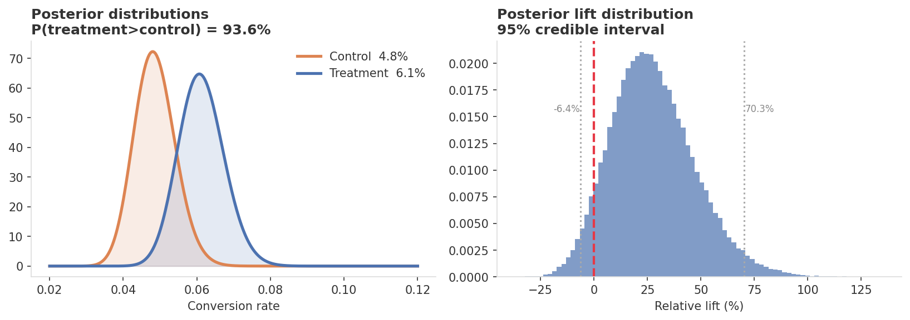
SQL
-- Prepare inputs for Bayesian analysis (successes and trials by variant)
SELECT
variant,
COUNT(*) AS n_trials,
SUM(CASE WHEN e.event_type = 'converted' THEN 1 ELSE 0 END) AS n_successes,
AVG(CASE WHEN e.event_type = 'converted' THEN 1.0 ELSE 0 END) AS conversion_rate
FROM experiment_assignments ea
LEFT JOIN events e ON ea.user_id = e.user_id
AND e.event_type = 'converted'
AND e.event_at BETWEEN ea.assigned_at AND DATEADD('day', 30, ea.assigned_at)
WHERE ea.experiment_id = 'exp_001'
GROUP BY 1
-- Feed n_trials and n_successes to the Beta posterior Python code above
VSTATS
🔲 TODO: experiment.bayesian_ab(s_ctrl, n_ctrl, s_trt, n_trt, prior_alpha, prior_beta) — Beta-conjugate Bayesian A/B test with P(better), expected loss, and credible interval. Implemented in experiment/bayesian.v.
Communication
How to translate rigorous analysis into language that drives decisions. The statistical work is wasted if the communication fails.
Translating CIs into Business Language
"We are 95% confident the effect is between X and Y" is not the same as "there's a 5% chance this is wrong." Translate carefully.
WHEN
When writing the experiment readout document, preparing a stakeholder summary, or presenting results in a business review.
WHY
Confidence intervals and p-values are frequently misinterpreted — even by experienced analysts. The correct interpretation of a 95% CI is:
"If we ran this experiment many times, 95% of the intervals constructed this way would contain the true effect."
What it is NOT: - "There is a 95% probability the true effect is in this interval" (that's a Bayesian credible interval) - "The true effect is almost certainly in this range" (it's either in there or it isn't)
For business communication, translate the CI into business units and focus on the decision boundaries: - The lower bound of the CI is the pessimistic scenario — the worst plausible outcome if you ship. - The upper bound is the optimistic scenario. - If the lower bound is positive and above the minimum meaningful effect, ship with confidence. - If the lower bound is negative, name the downside risk explicitly.
HOW
- Convert the CI endpoints to business units: revenue, conversion rate percentage points, accounts, ARR.
- Frame as a decision boundary: "Even in the pessimistic scenario (lower bound = X), we gain $Y ARR."
- State the probability language only for Bayesian results. For frequentist CIs, use "plausible range" or "confidence interval."
- Always report effect size alongside significance. A statistically significant p-value with a tiny effect size is not a business win.
PITFALLS
- Reporting p-values without effect sizes. "p = 0.03" tells a business stakeholder nothing about magnitude.
- Treating the CI midpoint as "the" effect. The point estimate is just the most likely value — the full interval is the uncertainty.
- "Highly significant" without context. With N = 1,000,000, nearly any effect is statistically significant. Significance is not importance.
- Mixing frequentist and Bayesian language. "95% probability the effect is positive" (Bayesian) and "p < 0.05 two-sided" (frequentist) are different claims. Don't use both in the same sentence.
PYTHON
Same p-value, very different business cases:
| Exp A (n=200K) | Exp B (n=2K) | |
|---|---|---|
| Effect | +0.09 | +8.2 |
| 95% CI | [0.00, 0.18] | [−3.2, +19.6] |
| p-value | 0.049 | 0.049 |
| ARR pessimistic | $0 (CI includes 0) | −$384K (CI negative) |
Exp A is marginal. Exp B is underpowered — the CI is too wide to act on.
import numpy as np
import matplotlib.pyplot as plt
import matplotlib as mpl
from scipy.stats import ttest_ind, norm
mpl.rcParams.update({
'axes.spines.top': False, 'axes.spines.right': False,
'axes.grid': False, 'font.family': 'sans-serif',
'text.color': '#333', 'axes.labelcolor': '#333',
'xtick.color': '#333', 'ytick.color': '#333',
})
# Two experiments with same p-value but very different business implications
rng = np.random.default_rng(5)
def experiment_result(n, effect, sigma, seed):
rng_ = np.random.default_rng(seed)
ctrl = rng_.normal(100, sigma, n)
trt = rng_.normal(100 + effect, sigma, n)
t, p = ttest_ind(trt, ctrl)
diff = trt.mean() - ctrl.mean()
se = np.sqrt(trt.var()/n + ctrl.var()/n)
return diff, se, p
# Large n, tiny effect
d1, se1, p1 = experiment_result(200000, 0.10, 30, 1)
# Small n, large effect
d2, se2, p2 = experiment_result(2000, 8.0, 30, 2)
# ARR impact: eligible_users_per_year * effect * arpa_per_unit
arpa = 500
elig_large = 200000
elig_small = 2000
arr1 = d1 * elig_large / 12 * arpa / 100 # convert to ARR
arr2 = d2 * elig_small / 12 * arpa / 100
fig, axes = plt.subplots(1, 2, figsize=(12, 5))
for ax, (d, se, p, label, elig, arr, mde) in zip(axes, [
(d1, se1, p1, f'Exp A: n={200000:,}\nEffect = {d1:.2f} revenue units', elig_large, arr1, 2.0),
(d2, se2, p2, f'Exp B: n={2000:,}\nEffect = {d2:.2f} revenue units', elig_small, arr2, 2.0),
]):
ci_lo, ci_hi = d - 1.96*se, d + 1.96*se
ax.barh(['Effect'], [d], color='#4C72B0', height=0.3, alpha=0.85,
xerr=[[d-ci_lo], [ci_hi-d]], capsize=8,
error_kw={'ecolor': '#666', 'capsize': 6})
ax.axvline(0, color='#aaa', lw=1)
ax.axvline(mde, color='#e63946', lw=1.5, linestyle='--', label=f'MDE = {mde}')
ax.set_xlabel('Effect on revenue')
ax.set_title(f'{label}\np = {p:.4f}\n\n'
f'95% CI: [{ci_lo:.2f}, {ci_hi:.2f}]\n'
f'ARR impact: ~${arr:,.0f}\n'
f'Business verdict: {"✓ Exceeds MDE" if ci_lo > mde else "⚠ Below or straddles MDE"}',
loc='left', fontweight='bold')
ax.legend(frameon=False)
ax.spines['left'].set_color('#ccc')
ax.spines['bottom'].set_color('#ccc')
plt.suptitle('Same p-value, very different business implications\nAlways report effect size + CI + business units',
y=1.02, fontweight='bold')
plt.tight_layout()
plt.savefig('ci_business.png', dpi=150, bbox_inches='tight')
plt.show()
print(f"Exp A: p={p1:.4f} effect={d1:.2f} CI=[{d1-1.96*se1:.2f}, {d1+1.96*se1:.2f}] ARR~${arr1:,.0f}")
print(f"Exp B: p={p2:.4f} effect={d2:.2f} CI=[{d2-1.96*se2:.2f}, {d2+1.96*se2:.2f}] ARR~${arr2:,.0f}")
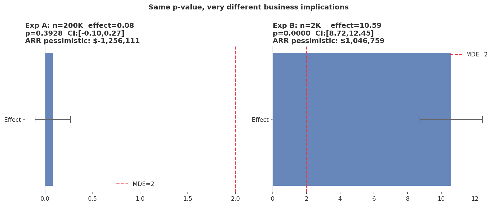
SQL
-- Convert statistical results to business units in the query
WITH results AS (
SELECT
variant,
COUNT(*) AS n,
AVG(revenue) AS mean_revenue,
STDDEV(revenue) AS std_revenue,
STDDEV(revenue) / SQRT(COUNT(*)) AS se
FROM (
SELECT ea.variant, ea.user_id, COALESCE(SUM(o.amount), 0) AS revenue
FROM experiment_assignments ea
LEFT JOIN orders o ON ea.user_id = o.user_id
AND o.created_at BETWEEN ea.assigned_at AND DATEADD('day', 30, ea.assigned_at)
WHERE ea.experiment_id = 'exp_001'
GROUP BY 1, 2
) t
GROUP BY 1
),
comparison AS (
SELECT
MAX(CASE WHEN variant='treatment' THEN mean_revenue END) -
MAX(CASE WHEN variant='control' THEN mean_revenue END) AS effect,
SQRT(
MAX(CASE WHEN variant='treatment' THEN se END) * MAX(CASE WHEN variant='treatment' THEN se END) +
MAX(CASE WHEN variant='control' THEN se END) * MAX(CASE WHEN variant='control' THEN se END)
) AS pooled_se,
SUM(n) AS total_n
FROM results
)
SELECT
effect,
pooled_se,
effect - 1.96 * pooled_se AS ci_lower,
effect + 1.96 * pooled_se AS ci_upper,
-- Translate to ARR: effect * monthly_eligible_users * 12
effect * 50000 * 12 AS arr_impact_estimate,
(effect - 1.96 * pooled_se) * 50000 * 12 AS arr_pessimistic
FROM comparison
VSTATS
🔲 No direct vstats function. Business translation is a reporting layer, not a statistical function.
When to Say "Caused" vs. "Associated With"
The word "caused" requires three things: a clean randomization, no SRM, and no obvious alternative explanation.
WHEN
When writing the conclusion of an experiment readout or presenting results to leadership.
WHY
"Caused" is a strong claim. It requires that the causal identification conditions are met (see Foundations): 1. Exchangeability: groups were comparable before treatment (clean RCT, passed SRM check, passed balance check) 2. Positivity: all units had a chance of being in either group 3. Consistency: the treatment was well-defined and applied uniformly 4. No alternative explanation: novelty effects ruled out (≥ 14-day experiment), no parallel business changes, no contamination
When all four are satisfied, you can write: "The new checkout flow caused a 2.1pp increase in trial conversion rate."
When one or more are violated or uncertain, use: "The new checkout flow was associated with a 2.1pp increase in trial conversion rate among users who encountered it."
For observational analyses (PSM, DiD, IV), the claim is: "After adjusting for observed confounders, the feature was associated with..."
HOW
Pre-readout causal checklist: - [ ] Randomization verified (SRM check passed, balance table clean) - [ ] Runtime ≥ 14 days (novelty effects decayed) - [ ] No concurrent business changes affecting the metric - [ ] No contamination detected (ICC check, trigger rate symmetric) - [ ] Exclusion criteria applied symmetrically - [ ] Primary metric pre-registered (no p-hacking)
If all boxes are checked → causal language is warranted. If any box is unchecked → qualify the claim.
PITFALLS
- Using "impact" as a hedge. "The feature impacted conversion" is ambiguous — it sounds causal but means nothing precise. Use "was associated with" or "caused."
- Observational analyses claiming causation. PSM and DiD are not RCTs. Label them "quasi-experimental" and state the assumptions.
- Causal language in secondary metrics. "Treatment caused higher engagement" — only if engagement was pre-registered as a causal outcome, not a secondary observation.
PYTHON
import matplotlib.pyplot as plt
import matplotlib as mpl
import matplotlib.patches as mpatches
mpl.rcParams.update({
'axes.spines.top': False, 'axes.spines.right': False,
'axes.grid': False, 'font.family': 'sans-serif',
'text.color': '#333',
})
fig, ax = plt.subplots(figsize=(11, 5))
ax.axis('off')
conditions = [
('RCT + all checks pass', 'Caused\n(full causal claim)', '#2a9d8f',
'✓ Randomized\n✓ SRM passed\n✓ 14+ days\n✓ No confounders'),
('RCT + minor issues\n(short runtime, unverified SRM)', 'Likely caused\n(qualified)', '#f4a261',
'✓ Randomized\n⚠ 7-day runtime\n⚠ SRM marginal'),
('Quasi-experiment\n(DiD, PSM, IV)', 'Associated with\n(after adjustment)', '#457b9d',
'~ Observational\n✓ Parallel trends\n⚠ Unmeasured confounders possible'),
('Observational\n(no controls)', 'Correlated with\n(descriptive only)', '#e63946',
'✗ Self-selected\n✗ Confounders present\n✗ No causal claim'),
]
y_positions = [0.78, 0.54, 0.30, 0.06]
for (scenario, claim, color, checks), y in zip(conditions, y_positions):
ax.add_patch(mpatches.FancyBboxPatch((0.02, y), 0.42, 0.18,
boxstyle='round,pad=0.01', facecolor=color, alpha=0.12, edgecolor=color, lw=1.5))
ax.add_patch(mpatches.FancyBboxPatch((0.52, y), 0.46, 0.18,
boxstyle='round,pad=0.01', facecolor=color, alpha=0.08, edgecolor=color, lw=1))
ax.text(0.22, y + 0.09, scenario, ha='center', va='center', fontsize=9, color='#333')
ax.text(0.75, y + 0.09, claim, ha='center', va='center', fontsize=10,
fontweight='bold', color=color)
ax.text(0.50, y + 0.09, checks, ha='center', va='center', fontsize=7.5, color='#666')
ax.text(0.22, 0.97, 'Study design', ha='center', fontsize=10, fontweight='bold', color='#555')
ax.text(0.75, 0.97, 'Language to use', ha='center', fontsize=10, fontweight='bold', color='#555')
ax.set_title('Causal language ladder', loc='left', fontsize=12, fontweight='bold')
ax.set_xlim(0, 1); ax.set_ylim(0, 1)
plt.tight_layout()
plt.savefig('causal_language.png', dpi=150, bbox_inches='tight')
plt.show()
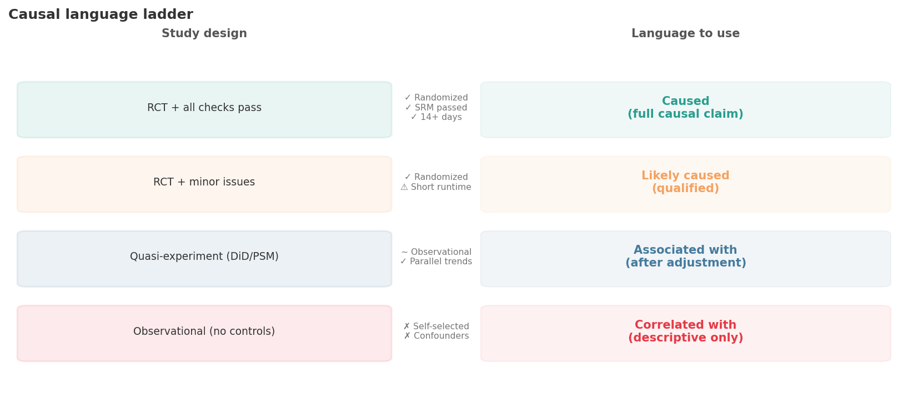
SQL
-- Causal checklist queries (run these before finalizing the readout)
-- 1. SRM check
SELECT variant, COUNT(DISTINCT user_id) AS n
FROM experiment_assignments WHERE experiment_id = 'exp_001'
GROUP BY 1;
-- Expected: n should be within 1-2% of n_total * allocation_pct
-- 2. Balance check (pre-experiment covariates)
SELECT variant, AVG(account_age_days) AS avg_age, AVG(plan = 'pro') AS pct_pro
FROM experiment_assignments ea JOIN users u USING (user_id)
WHERE experiment_id = 'exp_001' GROUP BY 1;
-- Expected: < 5% relative difference on any covariate
-- 3. Trigger rate symmetry (selection bias check)
SELECT ea.variant,
COUNT(DISTINCT ea.user_id) AS assigned,
COUNT(DISTINCT CASE WHEN e.event_type = 'feature_triggered' THEN ea.user_id END) AS triggered,
COUNT(DISTINCT CASE WHEN e.event_type = 'feature_triggered' THEN ea.user_id END)
* 1.0 / COUNT(DISTINCT ea.user_id) AS trigger_rate
FROM experiment_assignments ea
LEFT JOIN events e ON ea.user_id = e.user_id AND e.event_at > ea.assigned_at
WHERE ea.experiment_id = 'exp_001'
GROUP BY 1;
-- Expected: trigger rates should be symmetric across variants
VSTATS
🔲 No direct vstats function. This is a communication and analytical discipline, not a computable function.
Writing the Experiment Narrative
A good experiment readout fits on one page and drives a clear decision. It has a structure, not just a list of numbers.
WHEN
When writing any experiment readout — for a weekly metrics review, a launch decision, or a post-mortem.
WHY
Stakeholders read experiment readouts to make decisions, not to learn statistics. A readout that leads with p-values and data quality notes will lose most readers before the conclusion. The narrative should lead with the decision-relevant finding and back it up with the evidence.
HOW
One-page structure:
## [Feature Name] Experiment — [SHIP / KILL / ITERATE / INCONCLUSIVE]
**Hypothesis:** If we [change], we expect [metric] to [change] because [mechanism].
**Setup:**
- Primary metric: [metric] MDE: [X] Power: [80%] Runtime: [14 days]
- Randomization: [unit] Sample: [n] per variant
**Result (primary metric):**
- Effect: [+X pp / +$Y / +Z%]
- 95% CI: [lower, upper]
- p-value: [X] (Bayesian P(better): [Y%])
- ARR impact (at lower bound): [$X]
**Secondary metrics:**
| Metric | Direction | Significant? | Concern? |
|--------|-----------|--------------|---------|
| [metric] | [↑↓→] | [Y/N] | [Y/N] |
**Guardrails:** All passed / [ALERT: churn rate increased by X]
**Conclusion:** [One sentence: what happened and why it matters]
**Decision:** Ship / Kill / Iterate — [reason]
**Caveats:** [Novelty effect possible; HTE on Enterprise not powered]
PITFALLS
- Leading with data quality. Move SRM, balance, and quality checks to an appendix. They matter, but they're not the story.
- Listing all metrics without priority. The primary metric is the headline. Everything else is context.
- "Inconclusive" without a recommendation. An inconclusive result is still a decision — usually "don't ship." Say so.
- No caveats section. Every experiment has limitations. Name them. Omitting them makes the result look falsely clean.
PYTHON
import matplotlib.pyplot as plt
import matplotlib as mpl
import numpy as np
from scipy.stats import ttest_ind, beta as beta_dist
mpl.rcParams.update({
'axes.spines.top': False, 'axes.spines.right': False,
'axes.grid': False, 'font.family': 'sans-serif',
'text.color': '#333', 'axes.labelcolor': '#333',
'xtick.color': '#333', 'ytick.color': '#333',
})
rng = np.random.default_rng(7)
n_ctrl, s_ctrl = 3500, 168 # 4.8% conversion
n_trt, s_trt = 3500, 213 # 6.1% conversion
p_ctrl = s_ctrl / n_ctrl
p_trt = s_trt / n_trt
diff = p_trt - p_ctrl
se = np.sqrt(p_ctrl*(1-p_ctrl)/n_ctrl + p_trt*(1-p_trt)/n_trt)
ci_lo, ci_hi = diff - 1.96*se, diff + 1.96*se
z = diff / se
from scipy.stats import norm
p_val = 2 * (1 - norm.cdf(abs(z)))
# Bayesian
ctrl_post = beta_dist(1 + s_ctrl, 1 + n_ctrl - s_ctrl)
trt_post = beta_dist(1 + s_trt, 1 + n_trt - s_trt)
samples_c = ctrl_post.rvs(50000, random_state=rng)
samples_t = trt_post.rvs(50000, random_state=rng)
prob_better = (samples_t > samples_c).mean()
arr_lo = ci_lo * 50000 * 12 * 200 # lower bound × annual eligible × ARPA
fig, axes = plt.subplots(1, 3, figsize=(14, 4))
# 1. Effect with CI
axes[0].barh(['Conversion\nrate lift'], [diff*100], color='#4C72B0', height=0.3, alpha=0.85,
xerr=[[diff - ci_lo]*100], capsize=8, error_kw={'ecolor': '#666'})
axes[0].axvline(0, color='#aaa', lw=1)
axes[0].set_xlabel('Percentage points')
axes[0].set_title(f'Primary metric\np={p_val:.4f} 95% CI [{ci_lo*100:.2f}pp, {ci_hi*100:.2f}pp]',
loc='left', fontweight='bold')
axes[0].text(-0.1, 0.4, f'ARR at lower bound\n~${arr_lo:,.0f}', fontsize=9, color='#555', ha='center')
# 2. Posterior distributions
x = np.linspace(0.02, 0.10, 300)
axes[1].plot(x, ctrl_post.pdf(x), color='#DD8452', lw=2, label=f'Control ({p_ctrl:.1%})')
axes[1].plot(x, trt_post.pdf(x), color='#4C72B0', lw=2, label=f'Treatment ({p_trt:.1%})')
axes[1].fill_between(x, ctrl_post.pdf(x), alpha=0.15, color='#DD8452')
axes[1].fill_between(x, trt_post.pdf(x), alpha=0.15, color='#4C72B0')
axes[1].set_title(f'Posterior distributions\nP(treatment > control) = {prob_better:.1%}',
loc='left', fontweight='bold')
axes[1].legend(frameon=False)
axes[1].set_xlabel('Conversion rate')
# 3. Decision matrix
ax = axes[2]
ax.axis('off')
decision_color = '#2a9d8f' if ci_lo > 0 else '#e63946'
ax.text(0.5, 0.90, '✓ SHIP', ha='center', va='center', fontsize=20,
fontweight='bold', color=decision_color,
transform=ax.transAxes)
ax.text(0.5, 0.65, f'Effect: +{diff*100:.2f}pp\nARR (pessimistic): ${arr_lo:,.0f}\nP(better): {prob_better:.1%}',
ha='center', va='center', fontsize=10, transform=ax.transAxes, color='#333')
ax.text(0.5, 0.30, 'Guardrails: PASS\nCaveats: 14-day run, novelty\npossible for engagement metrics',
ha='center', va='center', fontsize=9, transform=ax.transAxes, color='#888', style='italic')
ax.set_title('Decision summary', loc='left', fontweight='bold')
for ax in axes[:2]:
ax.spines['left'].set_color('#ccc')
ax.spines['bottom'].set_color('#ccc')
plt.tight_layout()
plt.savefig('experiment_narrative.png', dpi=150, bbox_inches='tight')
plt.show()
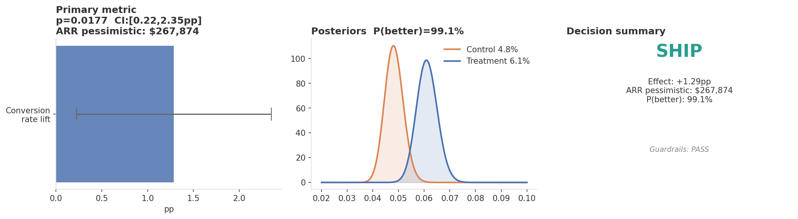
SQL
-- Readout summary query: all key numbers in one result set
WITH primary_metric AS (
SELECT
ea.variant,
COUNT(DISTINCT ea.user_id) AS n,
AVG(CASE WHEN e.event_type = 'trial_converted' THEN 1.0 ELSE 0 END) AS conversion_rate,
STDDEV(CASE WHEN e.event_type = 'trial_converted' THEN 1.0 ELSE 0 END) AS std_conv
FROM experiment_assignments ea
LEFT JOIN events e ON ea.user_id = e.user_id
AND e.event_type = 'trial_converted'
AND e.event_at BETWEEN ea.assigned_at AND DATEADD('day', 30, ea.assigned_at)
WHERE ea.experiment_id = 'exp_001'
GROUP BY 1
)
SELECT
MAX(CASE WHEN variant='treatment' THEN conversion_rate END) -
MAX(CASE WHEN variant='control' THEN conversion_rate END) AS effect_pp,
-- 95% CI lower bound (approximate, normal approximation)
MAX(CASE WHEN variant='treatment' THEN conversion_rate END) -
MAX(CASE WHEN variant='control' THEN conversion_rate END)
- 1.96 * SQRT(
MAX(CASE WHEN variant='treatment' THEN std_conv*std_conv/n END) +
MAX(CASE WHEN variant='control' THEN std_conv*std_conv/n END)
) AS ci_lower,
SUM(n) AS total_n
FROM primary_metric
VSTATS
🔲 No direct vstats function. Narrative structure is a documentation pattern. A future experiment.readout_summary() function could produce a structured result set for readout templates.
Communicating Null Results
A null result is a valid, useful finding. Communicate it as a decision, not a failure.
WHEN
When the experiment ends with no statistically significant effect on the primary metric.
WHY
A properly powered null result provides strong evidence that the true effect is smaller than the MDE. This is valuable information: it means the feature doesn't move the metric at the scale detectable with the current design, and the team should either iterate on the feature, re-examine the hypothesis, or deprioritize the metric.
Null results are routinely under-reported, which leads to: - Re-running the same failed features without acknowledging prior evidence - Publication bias in internal experiment records - Loss of learning — the hypothesis was wrong, which is worth knowing
A null result is a business decision: "we have enough evidence that this feature doesn't move conversion rate by more than the MDE to justify not shipping it."
HOW
- Confirm the experiment was adequately powered: actual n ≥ required n.
- Report the effect estimate and CI: "The effect was +0.2pp (95% CI: [-0.8pp, +1.2pp]). We can rule out effects larger than +1.2pp at 95% confidence."
- State the MDE and whether it was achieved: "Our MDE was ±0.8pp. The upper bound (+1.2pp) is above the MDE — the result is inconclusive, not a clean null."
- Distinguish true null (CI entirely below MDE) from underpowered (CI straddles MDE or is wide).
- Recommend: iterate on the hypothesis, increase the effect size, or sunset the feature.
PITFALLS
- Treating null as "nothing happened." The null says "we couldn't detect an effect of the size we cared about." That's different from "there is no effect."
- Reporting null without checking power. A null from an underpowered experiment is uninformative.
- "The experiment failed." The experiment succeeded — it gave you evidence. The feature's hypothesis was wrong.
- Using null to "prove the null hypothesis." Absence of evidence is not evidence of absence, especially when n is small.
PYTHON
Three null archetypes (MDE = ±0.8pp):
| Type | Effect | 95% CI | Action |
|---|---|---|---|
| True null (well-powered) | +0.10pp | [−0.20pp, +0.40pp] | Kill feature — ruled out MDE |
| Inconclusive (underpowered) | +0.40pp | [−1.10pp, +1.90pp] | Need more data or wider MDE |
| Below MDE (well-powered) | +0.30pp | [−0.30pp, +0.90pp] | Effect real but too small to ship |
import numpy as np
import matplotlib.pyplot as plt
import matplotlib as mpl
from scipy.stats import norm
mpl.rcParams.update({
'axes.spines.top': False, 'axes.spines.right': False,
'axes.grid': False, 'font.family': 'sans-serif',
'text.color': '#333', 'axes.labelcolor': '#333',
'xtick.color': '#333', 'ytick.color': '#333',
})
mde = 0.8 # pp
cases = [
('True null\n(well-powered)', 0.1, 0.3, '#2a9d8f',
'Effect is below MDE.\nSafe to conclude: no meaningful effect.'),
('Inconclusive\n(underpowered)', 0.4, 1.5, '#f4a261',
'CI straddles MDE. Cannot rule out real effect.\nNeed more data.'),
('Inconclusive\n(well-powered, small effect)', 0.3, 0.6, '#4C72B0',
'Effect is positive but below MDE.\nNot meaningful at this scale.'),
]
fig, ax = plt.subplots(figsize=(10, 5))
y_positions = [0.75, 0.50, 0.25]
ax.axvline(0, color='#aaa', lw=1)
ax.axvline(mde, color='#e63946', lw=2, linestyle='--', label=f'MDE = {mde}pp')
ax.axvline(-mde, color='#e63946', lw=2, linestyle='--')
for (label, effect, half_ci, color, note), y in zip(cases, y_positions):
lo, hi = effect - half_ci, effect + half_ci
ax.plot([lo, hi], [y, y], color=color, lw=4, alpha=0.7, solid_capstyle='round')
ax.scatter([effect], [y], color=color, s=100, zorder=5)
ax.text(-2.2, y, label, va='center', ha='right', fontsize=9, color=color, fontweight='bold')
ax.text(hi + 0.1, y, note, va='center', fontsize=8, color='#666')
ax.set_xlabel('Estimated effect (pp)')
ax.set_xlim(-2.5, 3.5)
ax.set_yticks([])
ax.set_title('Types of null results — not all nulls are the same', loc='left', fontweight='bold')
ax.legend(frameon=False)
ax.spines['left'].set_color('#ccc')
ax.spines['bottom'].set_color('#ccc')
plt.tight_layout()
plt.savefig('null_results.png', dpi=150, bbox_inches='tight')
plt.show()
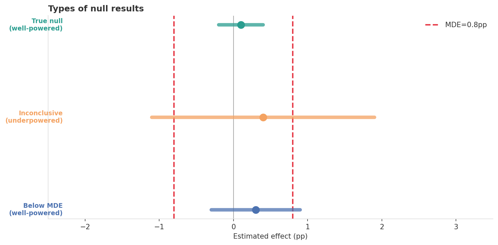
SQL
-- Null result summary: power check + CI
WITH results AS (
SELECT
variant,
COUNT(DISTINCT user_id) AS n,
AVG(converted) AS rate,
STDDEV(converted) AS std
FROM (
SELECT ea.variant, ea.user_id,
MAX(CASE WHEN e.event_type = 'converted' THEN 1 ELSE 0 END) AS converted
FROM experiment_assignments ea
LEFT JOIN events e ON ea.user_id = e.user_id
WHERE ea.experiment_id = 'exp_001'
GROUP BY 1, 2
) t GROUP BY 1
),
comparison AS (
SELECT
MAX(CASE WHEN variant='treatment' THEN rate END) -
MAX(CASE WHEN variant='control' THEN rate END) AS effect,
SQRT(
MAX(CASE WHEN variant='treatment' THEN std*std/n END) +
MAX(CASE WHEN variant='control' THEN std*std/n END)
) AS se,
MAX(n) AS n_per_variant
FROM results
)
SELECT
effect,
effect - 1.96 * se AS ci_lower,
effect + 1.96 * se AS ci_upper,
se,
n_per_variant,
CASE
WHEN ABS(effect) + 1.96 * se < 0.008 -- MDE = 0.8pp
THEN 'True null: CI entirely below MDE'
WHEN ABS(effect) < 0.008 AND effect + 1.96 * se > 0.008
THEN 'Inconclusive: CI straddles MDE — may be underpowered'
ELSE 'Effect detected or CI above MDE'
END AS verdict
FROM comparison
VSTATS
🔲 TODO: experiment.null_verdict(effect, se, mde) — classifies a null result as "true null," "inconclusive (underpowered)," or "below MDE" and returns a text verdict.